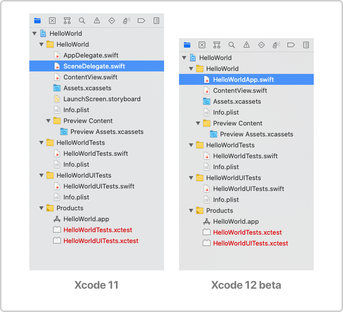
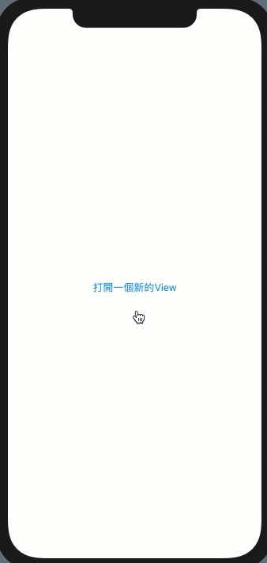
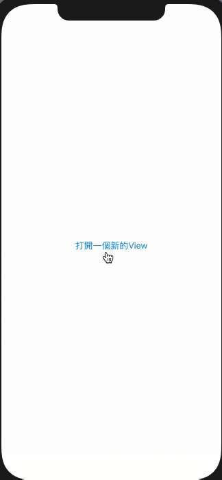
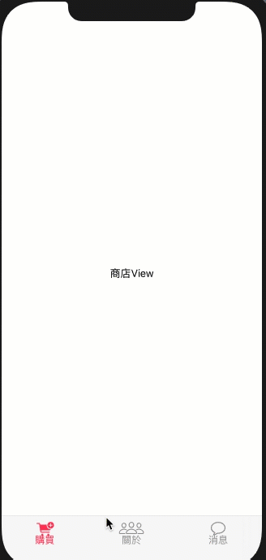
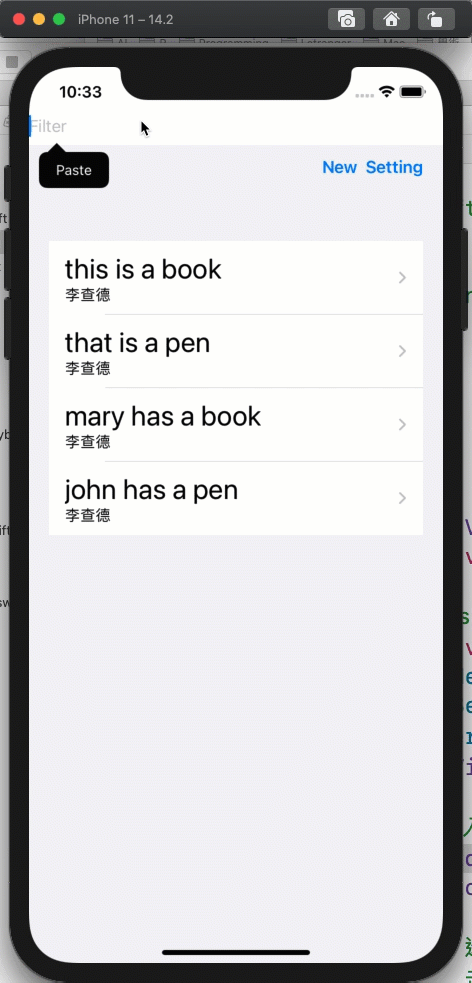
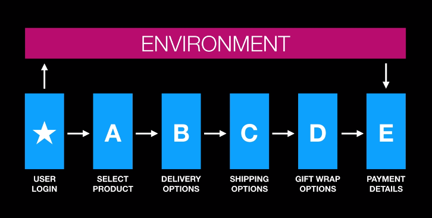
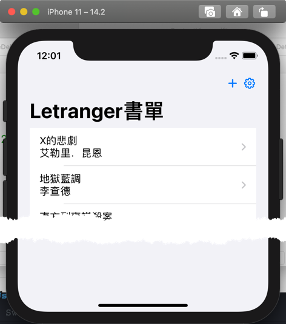
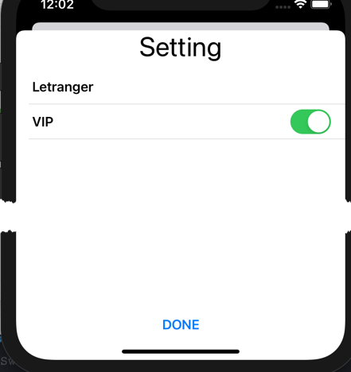
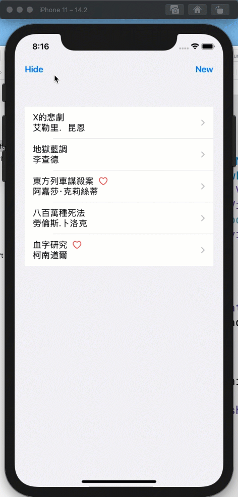

<?xml version="1.0" encoding="utf-8"?>
<!DOCTYPE html PUBLIC "-//W3C//DTD XHTML 1.0 Strict//EN"
"http://www.w3.org/TR/xhtml1/DTD/xhtml1-strict.dtd">
<html xmlns="http://www.w3.org/1999/xhtml" lang="en" xml:lang="en">
<head>
<!-- 2021-02-15 Mon 21:34 -->
<meta http-equiv="Content-Type" content="text/html;charset=utf-8" />
<meta name="viewport" content="width=device-width, initial-scale=1" />
<title>SwiftUI</title>
<meta name="generator" content="Org mode" />
<meta name="author" content="Yung Chin, Yen" />
<style type="text/css">
 <!--/*--><![CDATA[/*><!--*/
  .title  { text-align: center;
             margin-bottom: .2em; }
  .subtitle { text-align: center;
              font-size: medium;
              font-weight: bold;
              margin-top:0; }
  .todo   { font-family: monospace; color: red; }
  .done   { font-family: monospace; color: green; }
  .priority { font-family: monospace; color: orange; }
  .tag    { background-color: #eee; font-family: monospace;
            padding: 2px; font-size: 80%; font-weight: normal; }
  .timestamp { color: #bebebe; }
  .timestamp-kwd { color: #5f9ea0; }
  .org-right  { margin-left: auto; margin-right: 0px;  text-align: right; }
  .org-left   { margin-left: 0px;  margin-right: auto; text-align: left; }
  .org-center { margin-left: auto; margin-right: auto; text-align: center; }
  .underline { text-decoration: underline; }
  #postamble p, #preamble p { font-size: 90%; margin: .2em; }
  p.verse { margin-left: 3%; }
  pre {
    border: 1px solid #ccc;
    box-shadow: 3px 3px 3px #eee;
    padding: 8pt;
    font-family: monospace;
    overflow: auto;
    margin: 1.2em;
  }
  pre.src {
    position: relative;
    overflow: visible;
    padding-top: 1.2em;
  }
  pre.src:before {
    display: none;
    position: absolute;
    background-color: white;
    top: -10px;
    right: 10px;
    padding: 3px;
    border: 1px solid black;
  }
  pre.src:hover:before { display: inline;}
  /* Languages per Org manual */
  pre.src-asymptote:before { content: 'Asymptote'; }
  pre.src-awk:before { content: 'Awk'; }
  pre.src-C:before { content: 'C'; }
  /* pre.src-C++ doesn't work in CSS */
  pre.src-clojure:before { content: 'Clojure'; }
  pre.src-css:before { content: 'CSS'; }
  pre.src-D:before { content: 'D'; }
  pre.src-ditaa:before { content: 'ditaa'; }
  pre.src-dot:before { content: 'Graphviz'; }
  pre.src-calc:before { content: 'Emacs Calc'; }
  pre.src-emacs-lisp:before { content: 'Emacs Lisp'; }
  pre.src-fortran:before { content: 'Fortran'; }
  pre.src-gnuplot:before { content: 'gnuplot'; }
  pre.src-haskell:before { content: 'Haskell'; }
  pre.src-hledger:before { content: 'hledger'; }
  pre.src-java:before { content: 'Java'; }
  pre.src-js:before { content: 'Javascript'; }
  pre.src-latex:before { content: 'LaTeX'; }
  pre.src-ledger:before { content: 'Ledger'; }
  pre.src-lisp:before { content: 'Lisp'; }
  pre.src-lilypond:before { content: 'Lilypond'; }
  pre.src-lua:before { content: 'Lua'; }
  pre.src-matlab:before { content: 'MATLAB'; }
  pre.src-mscgen:before { content: 'Mscgen'; }
  pre.src-ocaml:before { content: 'Objective Caml'; }
  pre.src-octave:before { content: 'Octave'; }
  pre.src-org:before { content: 'Org mode'; }
  pre.src-oz:before { content: 'OZ'; }
  pre.src-plantuml:before { content: 'Plantuml'; }
  pre.src-processing:before { content: 'Processing.js'; }
  pre.src-python:before { content: 'Python'; }
  pre.src-R:before { content: 'R'; }
  pre.src-ruby:before { content: 'Ruby'; }
  pre.src-sass:before { content: 'Sass'; }
  pre.src-scheme:before { content: 'Scheme'; }
  pre.src-screen:before { content: 'Gnu Screen'; }
  pre.src-sed:before { content: 'Sed'; }
  pre.src-sh:before { content: 'shell'; }
  pre.src-sql:before { content: 'SQL'; }
  pre.src-sqlite:before { content: 'SQLite'; }
  /* additional languages in org.el's org-babel-load-languages alist */
  pre.src-forth:before { content: 'Forth'; }
  pre.src-io:before { content: 'IO'; }
  pre.src-J:before { content: 'J'; }
  pre.src-makefile:before { content: 'Makefile'; }
  pre.src-maxima:before { content: 'Maxima'; }
  pre.src-perl:before { content: 'Perl'; }
  pre.src-picolisp:before { content: 'Pico Lisp'; }
  pre.src-scala:before { content: 'Scala'; }
  pre.src-shell:before { content: 'Shell Script'; }
  pre.src-ebnf2ps:before { content: 'ebfn2ps'; }
  /* additional language identifiers per "defun org-babel-execute"
       in ob-*.el */
  pre.src-cpp:before  { content: 'C++'; }
  pre.src-abc:before  { content: 'ABC'; }
  pre.src-coq:before  { content: 'Coq'; }
  pre.src-groovy:before  { content: 'Groovy'; }
  /* additional language identifiers from org-babel-shell-names in
     ob-shell.el: ob-shell is the only babel language using a lambda to put
     the execution function name together. */
  pre.src-bash:before  { content: 'bash'; }
  pre.src-csh:before  { content: 'csh'; }
  pre.src-ash:before  { content: 'ash'; }
  pre.src-dash:before  { content: 'dash'; }
  pre.src-ksh:before  { content: 'ksh'; }
  pre.src-mksh:before  { content: 'mksh'; }
  pre.src-posh:before  { content: 'posh'; }
  /* Additional Emacs modes also supported by the LaTeX listings package */
  pre.src-ada:before { content: 'Ada'; }
  pre.src-asm:before { content: 'Assembler'; }
  pre.src-caml:before { content: 'Caml'; }
  pre.src-delphi:before { content: 'Delphi'; }
  pre.src-html:before { content: 'HTML'; }
  pre.src-idl:before { content: 'IDL'; }
  pre.src-mercury:before { content: 'Mercury'; }
  pre.src-metapost:before { content: 'MetaPost'; }
  pre.src-modula-2:before { content: 'Modula-2'; }
  pre.src-pascal:before { content: 'Pascal'; }
  pre.src-ps:before { content: 'PostScript'; }
  pre.src-prolog:before { content: 'Prolog'; }
  pre.src-simula:before { content: 'Simula'; }
  pre.src-tcl:before { content: 'tcl'; }
  pre.src-tex:before { content: 'TeX'; }
  pre.src-plain-tex:before { content: 'Plain TeX'; }
  pre.src-verilog:before { content: 'Verilog'; }
  pre.src-vhdl:before { content: 'VHDL'; }
  pre.src-xml:before { content: 'XML'; }
  pre.src-nxml:before { content: 'XML'; }
  /* add a generic configuration mode; LaTeX export needs an additional
     (add-to-list 'org-latex-listings-langs '(conf " ")) in .emacs */
  pre.src-conf:before { content: 'Configuration File'; }

  table { border-collapse:collapse; }
  caption.t-above { caption-side: top; }
  caption.t-bottom { caption-side: bottom; }
  td, th { vertical-align:top;  }
  th.org-right  { text-align: center;  }
  th.org-left   { text-align: center;   }
  th.org-center { text-align: center; }
  td.org-right  { text-align: right;  }
  td.org-left   { text-align: left;   }
  td.org-center { text-align: center; }
  dt { font-weight: bold; }
  .footpara { display: inline; }
  .footdef  { margin-bottom: 1em; }
  .figure { padding: 1em; }
  .figure p { text-align: center; }
  .equation-container {
    display: table;
    text-align: center;
    width: 100%;
  }
  .equation {
    vertical-align: middle;
  }
  .equation-label {
    display: table-cell;
    text-align: right;
    vertical-align: middle;
  }
  .inlinetask {
    padding: 10px;
    border: 2px solid gray;
    margin: 10px;
    background: #ffffcc;
  }
  #org-div-home-and-up
   { text-align: right; font-size: 70%; white-space: nowrap; }
  textarea { overflow-x: auto; }
  .linenr { font-size: smaller }
  .code-highlighted { background-color: #ffff00; }
  .org-info-js_info-navigation { border-style: none; }
  #org-info-js_console-label
    { font-size: 10px; font-weight: bold; white-space: nowrap; }
  .org-info-js_search-highlight
    { background-color: #ffff00; color: #000000; font-weight: bold; }
  .org-svg { width: 90%; }
  /*]]>*/-->
</style>
<link rel="stylesheet" type="text/css" href="https://letranger.github.io/org-html-themes/styles/purplereadtheorg/css/htmlize.css"/>
<link rel="stylesheet" type="text/css" href="https://letranger.github.io/org-html-themes/styles/purplereadtheorg/css/readtheorg.css"/>
<script src="https://ajax.googleapis.com/ajax/libs/jquery/2.1.3/jquery.min.js"></script>
<script src="https://maxcdn.bootstrapcdn.com/bootstrap/3.3.4/js/bootstrap.min.js"></script>
<script type="text/javascript" src="https://fniessen.github.io/org-html-themes/src/lib/js/jquery.stickytableheaders.min.js"></script>
<script type="text/javascript" src="https://fniessen.github.io/org-html-themes/src/readtheorg_theme/js/readtheorg.js"></script>
<script type="text/javascript">
// @license magnet:?xt=urn:btih:1f739d935676111cfff4b4693e3816e664797050&amp;dn=gpl-3.0.txt GPL-v3-or-Later
<!--/*--><![CDATA[/*><!--*/
     function CodeHighlightOn(elem, id)
     {
       var target = document.getElementById(id);
       if(null != target) {
         elem.cacheClassElem = elem.className;
         elem.cacheClassTarget = target.className;
         target.className = "code-highlighted";
         elem.className   = "code-highlighted";
       }
     }
     function CodeHighlightOff(elem, id)
     {
       var target = document.getElementById(id);
       if(elem.cacheClassElem)
         elem.className = elem.cacheClassElem;
       if(elem.cacheClassTarget)
         target.className = elem.cacheClassTarget;
     }
    /*]]>*///-->
// @license-end
</script>
</head>
<body>
<div id="content">
<h1 class="title">SwiftUI</h1>
<div id="table-of-contents">
<h2>Table of Contents</h2>
<div id="text-table-of-contents">
<ul>
<li><a href="#orgfc10f4e">1. Recommending Reading</a></li>
<li><a href="#SW-UIKIT-SWIFTUI">2. iOS app 的開發界面: UIKit v.s. SwiftUI</a>
<ul>
<li><a href="#org03e7648">2.1. UIKit 與 SwiftUI 的差異性</a>
<ul>
<li><a href="#org207d3f1">2.1.1. 系統需求</a></li>
<li><a href="#orgab7cf65">2.1.2. 底層語言</a></li>
<li><a href="#orge987222">2.1.3. 語法簡潔度</a></li>
<li><a href="#org1fa0b9e">2.1.4. Declarative vs Imperative Programming</a></li>
<li><a href="#orgefabcd5">2.1.5. 跨平台</a></li>
<li><a href="#org369afbe">2.1.6. Automatic Preview</a></li>
<li><a href="#org88e4761">2.1.7. 自動支援進階功能</a></li>
</ul>
</li>
<li><a href="#org53f4601">2.2. SwiftUI vs UIKit: Benefits and Drawbacks</a>
<ul>
<li><a href="#org6a3c796">2.2.1. Drawbacks of SwiftUI </a></li>
<li><a href="#org5796e62">2.2.2. Benefits of SwiftUI </a></li>
</ul>
</li>
</ul>
</li>
<li><a href="#delegate">3. AppDelegate v.s. SceneDelegate v.s. &lt;AppName&gt;App</a>
<ul>
<li><a href="#orgb21d96c">3.1. AppDelegate -&gt; SceneDelegate</a>
<ul>
<li><a href="#org9e311b8">3.1.1. SceneDelegate.swift</a></li>
</ul>
</li>
<li><a href="#org0d6f388">3.2. SceneDelegate -&gt; &lt;AppName&gt;App</a>
<ul>
<li><a href="#org1936840">3.2.1. HelloApp.swift(專案名稱為Hello)</a></li>
</ul>
</li>
</ul>
</li>
<li><a href="#SW-SWIFTUI-INTRO">4. 建立 SwiftUI Project</a>
<ul>
<li><a href="#org083bda9">4.1. 教學影片</a></li>
<li><a href="#org37c0d54">4.2. 使用 SwiftUI 開啟新專案 </a>
<ul>
<li><a href="#org1c076f6">4.2.1. ContentView.swift</a></li>
</ul>
</li>
<li><a href="#org56eba00">4.3. Text</a>
<ul>
<li><a href="#orga8c3489">4.3.1. 改變 Text 的屬性</a>
<ul>
<li><a href="#org4692c7e">4.3.1.1. SwiftUI Inspector:</a></li>
<li><a href="#org4382474">4.3.1.2. Inspector frame</a></li>
<li><a href="#org34616a3">4.3.1.3. code</a></li>
</ul>
</li>
</ul>
</li>
<li><a href="#orge8502b7">4.4. Stack</a>
<ul>
<li><a href="#org0980889">4.4.1. Stack 與 Stack 可相互包含，於 View 中加入 Stack 的方式有二:</a>
<ul>
<li><a href="#orgf7e0c3c">4.4.1.1. 由工具列 drag: Xcode 會自動加入相對的 code</a></li>
<li><a href="#org213cf9f">4.4.1.2. coding</a></li>
</ul>
</li>
<li><a href="#orge9397da">4.4.2. SwiftUI 撰寫原則</a></li>
<li><a href="#orgbe76a11">4.4.3. HStack DEMO</a></li>
</ul>
</li>
</ul>
</li>
<li><a href="#orgaf571e5">5. Basic Components</a>
<ul>
<li><a href="#org44367a7">5.1. Image</a>
<ul>
<li><a href="#org1f64447">5.1.1. 使用系統內建的圖</a>
<ul>
<li><a href="#orgc735bdf">5.1.1.1. SF Symbols </a></li>
<li><a href="#org48655a3">5.1.1.2. 從 iOS 13 開始，Apple 介紹了一個名為 SFSymbols 的新功能。SF Symbols 這功能由 Apple 所設計，當中集合了 1500 多個可以在 App 之中使用的符號。</a></li>
<li><a href="#org9595635">5.1.1.3. Download SF Symbols app</a></li>
<li><a href="#org986dd60">5.1.1.4. code</a></li>
<li><a href="#org7986970">5.1.1.5. Demo</a></li>
</ul>
</li>
<li><a href="#org586259d">5.1.2. 使用自己的圖</a></li>
<li><a href="#org4cfffcc">5.1.3. Image Attributes</a></li>
<li><a href="#org69388f7">5.1.4. Using SF Symbols</a></li>
</ul>
</li>
<li><a href="#orgca4aa9c">5.2. Button</a>
<ul>
<li><a href="#orga951745">5.2.1. 語法</a></li>
<li><a href="#org009eff2">5.2.2. 將變數加入 View 中</a></li>
<li><a href="#org963d1df">5.2.3. 如何於程式中改變 title 的值來改變 View 的顯示內容?</a></li>
<li><a href="#orgd956296">5.2.4. 範例: 按下 Button，改變 Text title</a></li>
<li><a href="#orgb150ceb">5.2.5. 以 Button 開啟一個新的 View</a></li>
<li><a href="#org16267ea">5.2.6. 以 Button 關閉 View</a></li>
</ul>
</li>
</ul>
</li>
<li><a href="#org1c8b947">6. Passing data within View: TextField</a>
<ul>
<li><a href="#orgd7e3d3a">6.1. 語法</a></li>
<li><a href="#org8ca0a31">6.2. 範例: 於 TextField 輸入資料，顯示於 Text 中</a></li>
<li><a href="#org325783a">6.3. 範例 2: @state struct</a></li>
<li><a href="#orgb41dd0a">6.4. What is @State</a></li>
</ul>
</li>
<li><a href="#SW-CUSTOMIZED-UI-COMPONENTS">7. Customize UI Components</a>
<ul>
<li><a href="#org9066851">7.1. Text</a>
<ul>
<li><a href="#org7b6657a">7.1.1. Advanced Attributes </a></li>
<li><a href="#orgf00f049">7.1.2. Demo</a></li>
</ul>
</li>
<li><a href="#org91d76ab">7.2. Image</a>
<ul>
<li><a href="#orga8db1d9">7.2.1. Advanced Attributes s</a></li>
<li><a href="#orgec96512">7.2.2. Demo</a></li>
</ul>
</li>
<li><a href="#orgbb837b0">7.3. Button II</a>
<ul>
<li><a href="#orgad309d6">7.3.1. 外觀控制</a>
<ul>
<li><a href="#orge97466a">7.3.1.1. Advanced Attributes </a></li>
<li><a href="#org18a6506">7.3.1.2. Demo</a></li>
</ul>
</li>
<li><a href="#orge4f1a21">7.3.2. Button v.s. @State</a></li>
</ul>
</li>
<li><a href="#orgae3fa6d">7.4. background, opacity</a></li>
<li><a href="#orga458b51">7.5. Further reading</a></li>
</ul>
</li>
<li><a href="#list">8. List</a>
<ul>
<li><a href="#orgae59d1b">8.1. What is List</a></li>
<li><a href="#org4129105">8.2. 準備單一 cell 格式</a></li>
<li><a href="#org21bf558">8.3. 轉入 List 格式(靜態 List)</a>
<ul>
<li><a href="#orga94bb33">8.3.1. 將最外層的 VStack 加入 List 中</a></li>
<li><a href="#orgf06958a">8.3.2. list 語法</a></li>
<li><a href="#org28f1607">8.3.3. 結果</a></li>
</ul>
</li>
<li><a href="#org4f4daad">8.4. 建立 list 來源資料(動態 List) </a></li>
<li><a href="#orgb08514b">8.5. 將資料連結到列表中 </a></li>
<li><a href="#org3a11a27">8.6. 結果</a></li>
<li><a href="#orgd1a4f72">8.7. 為什麼要加入 id 與 Identifiable</a></li>
<li><a href="#org960bc6a">8.8. Reading source</a></li>
</ul>
</li>
<li><a href="#StateBinding">9. Passing data between Views #1: @Binding</a>
<ul>
<li><a href="#orgaa19dab">9.1. Time to use Binding</a></li>
<li><a href="#orgea6aac3">9.2. Demo 1: @State v.s. @Bidning</a>
<ul>
<li><a href="#orgaf0dc61">9.2.1. ContentView.swift</a></li>
<li><a href="#org5f2c781">9.2.2. SwitchView.swift</a></li>
</ul>
</li>
<li><a href="#org484d55d">9.3. Demo 2: Sharing multiple variable</a>
<ul>
<li><a href="#orgcbd6dfd">9.3.1. User.swift</a></li>
<li><a href="#org2bddc1c">9.3.2. ContentView.swift</a></li>
<li><a href="#orgac63532">9.3.3. EditUser.swift</a></li>
</ul>
</li>
</ul>
</li>
<li><a href="#Alert">10. Alert</a>
<ul>
<li><a href="#org4583bb5">10.1. 以 Button 觸發</a></li>
<li><a href="#orga1d33d0">10.2. 以 TextField 觸發</a></li>
</ul>
</li>
<li><a href="#org57bf0d1">11. Navigation between Views</a>
<ul>
<li><a href="#orgca4f42e">11.1. Tabbed View</a>
<ul>
<li><a href="#orgae2a868">11.1.1. Create subView</a></li>
<li><a href="#org14dad6c">11.1.2. 自訂底下的主控 tab bar</a>
<ul>
<li><a href="#orgbfec74e">11.1.2.1. Change tabView font size</a></li>
<li><a href="#org92f5a60">11.1.2.2. the color of unselected tab bar</a></li>
<li><a href="#org1436202">11.1.2.3. the color of the tab bar item : .accentColor</a></li>
<li><a href="#orge6ca5dc">11.1.2.4. the tab bar’s color: appearance()</a></li>
</ul>
</li>
<li><a href="#org5dce62d">11.1.3. 以程式控制 tabbed view 的 subview 的切換</a></li>
<li><a href="#orgeb5631c">11.1.4. 一個優秀的 Tab Bar 應該具備哪些特點？</a></li>
<li><a href="#org3b283b3">11.1.5. Further Reading</a></li>
</ul>
</li>
<li><a href="#navigation">11.2. Navigation Views</a>
<ul>
<li><a href="#orga38f1ca">11.2.1. Navigation bar</a>
<ul>
<li><a href="#org67899fa">11.2.1.1. Hide Navigation Bar</a></li>
</ul>
</li>
<li><a href="#org59b2a18">11.2.2. Create New Views</a>
<ul>
<li><a href="#org7824fb9">11.2.2.1. in same file</a></li>
<li><a href="#org59c0ae5">11.2.2.2. in new file</a></li>
</ul>
</li>
<li><a href="#org799db1d">11.2.3. Passing parameter(單純參數傳遞)</a></li>
<li><a href="#orgfd00629">11.2.4. Version-1: Navigation v.s. List v.s. NavigationLink</a></li>
<li><a href="#org5a6a78b">11.2.5. Version-2:</a>
<ul>
<li><a href="#org767db01">11.2.5.1. Book.swift</a></li>
<li><a href="#orgcc12482">11.2.5.2. ContentView.swift</a></li>
<li><a href="#orgcc65fa2">11.2.5.3. DetailView.swift</a></li>
</ul>
</li>
</ul>
</li>
</ul>
</li>
<li><a href="#DynamicList">12. Dynamic List</a>
<ul>
<li><a href="#org7f520bd">12.1. DataModel</a>
<ul>
<li><a href="#org20afce9">12.1.1. BookModel.swift (Model)</a></li>
</ul>
</li>
<li><a href="#org09ccb72">12.2. ViewModel</a>
<ul>
<li><a href="#orge633cd8">12.2.1. Book.swift</a></li>
</ul>
</li>
<li><a href="#orge29620a">12.3. 主畫面</a>
<ul>
<li><a href="#orgcb5dae2">12.3.1. ContentView.swift</a></li>
</ul>
</li>
<li><a href="#org62c0c98">12.4. 加入新記錄</a>
<ul>
<li><a href="#org33977c2">12.4.1. AddNewBook.swift</a></li>
</ul>
</li>
<li><a href="#org80b8d3d">12.5. 加入搜尋功能</a></li>
</ul>
</li>
<li><a href="#org0c1baea">13. Passing data between Views</a>
<ul>
<li><a href="#ObservedObject">13.1. Passing data between Views #2: @ObservedObject</a>
<ul>
<li><a href="#orgba4919a">13.1.1. ObservedObject 範例</a></li>
<li><a href="#orgc4c879b">13.1.2. ObservedObject 特性</a></li>
<li><a href="#org1399983">13.1.3. @ObservedObject v.s. @ObjectBinding</a></li>
</ul>
</li>
<li><a href="#EnvironmentObject">13.2. Passing data between Views #3: @EnvironmentObject</a>
<ul>
<li><a href="#orgc55b28b">13.2.1. @EnvironmentObject 與@ObservedObject 的異同</a>
<ul>
<li><a href="#orgc78706c">13.2.1.1. 相同</a></li>
<li><a href="#org4beba81">13.2.1.2. 差異</a></li>
<li><a href="#org230fd96">13.2.1.3. 比較</a></li>
<li><a href="#org3d9b295">13.2.1.4. 範例</a></li>
</ul>
</li>
<li><a href="#orgc557008">13.2.2. EnvironmentObject 設定方式</a>
<ul>
<li><a href="#org1635e48">13.2.2.1. 建立 EnvironmentObject class</a></li>
<li><a href="#org4d558ea">13.2.2.2. 設定 app 環境</a></li>
<li><a href="#org7fe1ed9">13.2.2.3. 設定 Client View</a></li>
</ul>
</li>
<li><a href="#org8c32b53">13.2.3. 範例</a>
<ul>
<li><a href="#org9a070d1">13.2.3.1. ShoppingCart.swift</a></li>
<li><a href="#org22b60db">13.2.3.2. 環境設定 SceneDelegate.swift / xxxApp.swift</a></li>
<li><a href="#org7fa65da">13.2.3.3. ContentView.swift</a></li>
<li><a href="#org117a9f5">13.2.3.4. SecondView</a></li>
</ul>
</li>
<li><a href="#orgec1003b">13.2.4. Further Reading</a></li>
</ul>
</li>
<li><a href="#Wrappers">13.3. Passing data between Views #4: Property Wrappers</a>
<ul>
<li><a href="#org5058bf9">13.3.1. SwiftUI 的狀態管理</a></li>
<li><a href="#org3704779">13.3.2. @StateObject v.s. @ObservedObject</a>
<ul>
<li><a href="#org2888747">13.3.2.1. 程式範例</a></li>
<li><a href="#orgd7a11ec">13.3.2.2. Create once</a></li>
</ul>
</li>
<li><a href="#org692faa5">13.3.3. 使用@EnvironmentObject 保持狀態</a></li>
<li><a href="#org9d8b710">13.3.4. Property wrapper syntactic Sugar</a></li>
<li><a href="#orgf5a4d8a">13.3.5. 各種 property wrapper 比較</a></li>
</ul>
</li>
</ul>
</li>
<li><a href="#UserDefaults">14. UserDefaults</a>
<ul>
<li><a href="#org6a773d5">14.1. 幾種可以在 iOS app 永久儲存資料的方式:</a></li>
<li><a href="#orgbdfdbc7">14.2. UserDefautls</a></li>
<li><a href="#orgac64d3d">14.3. Using userDefaults</a>
<ul>
<li><a href="#orgdbefdad">14.3.1. Storing Data</a></li>
<li><a href="#org209fcdc">14.3.2. Retrieving Data</a></li>
</ul>
</li>
<li><a href="#orgd94d227">14.4. Demo</a>
<ul>
<li><a href="#org4ef932b">14.4.1. Create UserDefault.swift</a></li>
<li><a href="#org769a225">14.4.2. use userSetting in ContentView.swift</a></li>
<li><a href="#org44029f3">14.4.3. BookList: UserDefault v.s. @EnvironmentObject</a>
<ul>
<li><a href="#org6e69006">14.4.3.1. UserSettings.swift</a></li>
<li><a href="#org572a70c">14.4.3.2. ContentView.swift</a></li>
<li><a href="#org58fd67f">14.4.3.3. settingView.swift</a></li>
<li><a href="#org5a6a37a">14.4.3.4. SceneDelegate.swift</a></li>
</ul>
</li>
</ul>
</li>
<li><a href="#org418885d">14.5. Reading Resources</a></li>
</ul>
</li>
<li><a href="#org1477c02">15. Filtered List</a>
<ul>
<li><a href="#orgfd7ee48">15.1. Model</a></li>
<li><a href="#orgd1d3e43">15.2. ViewModel</a></li>
<li><a href="#org1789156">15.3. 主畫面</a></li>
</ul>
</li>
</ul>
</div>
</div>

<div id="outline-container-orgfc10f4e" class="outline-2">
<h2 id="orgfc10f4e"><span class="section-number-2">1</span> Recommending Reading</h2>
<div class="outline-text-2" id="text-1">
<p>
這些都只是為了選修課臨時整理的教材，內容深度與廣度都有限，建議有學習野心的同學還是多多去讀其他的資料：<br />
</p>
<ul class="org-ul">
<li><a href="https://www.hackingwithswift.com/100/swiftui">100 Days of SwfitUI</a><br /></li>
</ul>
</div>
</div>

<div id="outline-container-SW-UIKIT-SWIFTUI" class="outline-2">
<h2 id="SW-UIKIT-SWIFTUI"><span class="section-number-2">2</span> iOS app 的開發界面: UIKit v.s. SwiftUI</h2>
<div class="outline-text-2" id="text-SW-UIKIT-SWIFTUI">
</div>
<div id="outline-container-org03e7648" class="outline-3">
<h3 id="org03e7648"><span class="section-number-3">2.1</span> UIKit 與 SwiftUI 的差異性</h3>
<div class="outline-text-3" id="text-2-1">
</div>
<div id="outline-container-org207d3f1" class="outline-4">
<h4 id="org207d3f1"><span class="section-number-4">2.1.1</span> 系統需求</h4>
<div class="outline-text-4" id="text-2-1-1">
<p>
UIKit 是從 Xcode1 就一直存在的 Framework；而 SwiftUI 則是 2019/6 WWDC 所發表的全新用來繪製 UI 的 Framework。因此，SwiftUI 必須搭配 iOS13+ 和 MacOS10.15+。<sup><a id="fnr.1" class="footref" href="#fn.1">1</a></sup><br />
</p>
</div>
</div>
<div id="outline-container-orgab7cf65" class="outline-4">
<h4 id="orgab7cf65"><span class="section-number-4">2.1.2</span> 底層語言</h4>
<div class="outline-text-4" id="text-2-1-2">
<p>
UIKit 底層仍為 Objecitve-C；而 SwiftUI 則是完完全全用 Swift 打造的 Framework。<br />
</p>
</div>
</div>
<div id="outline-container-orge987222" class="outline-4">
<h4 id="orge987222"><span class="section-number-4">2.1.3</span> 語法簡潔度</h4>
<div class="outline-text-4" id="text-2-1-3">
<p>
SwiftUI 產生一顯示文字的元件更精簡潔了。<br />
</p>
</div>
</div>
<div id="outline-container-org1fa0b9e" class="outline-4">
<h4 id="org1fa0b9e"><span class="section-number-4">2.1.4</span> Declarative vs Imperative Programming</h4>
<div class="outline-text-4" id="text-2-1-4">
<ul class="org-ul">
<li>imperative programming：告訴電腦如何做(HOW)來得到我們想要的結果(WHAT)，如 Java, C++, PHP, C#, Swift<br /></li>
<li>declarative programming：告訴電腦我們想要的結果(WHAT)，讓電腦決定如何做(HOW)，如 SwiftUI<br /></li>
</ul>
</div>
</div>

<div id="outline-container-orgefabcd5" class="outline-4">
<h4 id="orgefabcd5"><span class="section-number-4">2.1.5</span> 跨平台</h4>
<div class="outline-text-4" id="text-2-1-5">
<p>
跨平台指的非跨 Android(但希望有那麼一天是可以支援的😀)。跨平台指的是使用 SwiftUI 所開發的專案，可以同時支援 macOS、watchOS、tvOS 等系統。引用一句 WWDC2019 SwiftUI 演講者所說的一句話。<br />
</p>
<blockquote>
<p>
Learn once, apply everywhere.<br />
</p>
</blockquote>
</div>
</div>
<div id="outline-container-org369afbe" class="outline-4">
<h4 id="org369afbe"><span class="section-number-4">2.1.6</span> Automatic Preview</h4>
<div class="outline-text-4" id="text-2-1-6">
<p>
這是此次 SwiftUI 最大的亮點之一，所謂 Automatic Preview，意思指的是即時預覽，即我們一邊調整程式碼的同時，也可以立即看到修改後的結果。<br />
</p>
</div>
</div>
<div id="outline-container-org88e4761" class="outline-4">
<h4 id="org88e4761"><span class="section-number-4">2.1.7</span> 自動支援進階功能</h4>
<div class="outline-text-4" id="text-2-1-7">
<p>
SwiftUI 本身即支援 Dynamic Type、Dark Mode、 Localization 等等。這邊特別來講一下 UIKit 和 SwiftUI 在文字設定上有關於 Dark Mode 的差異，UIKit 若是無特別指定文字的顏色(意即使用 Default 的選項)，在 Light Mode 字體會是白色；相對的在 Dark Mode 即會是白色，這點跟 SwiftUI 沒有特別的差異，但是 SwiftUI 除了 Default 外，還有 Secondary，如果還不喜歡的話，還有第三個選項，就是在 Assets 自行設定 Light Mode 和 Dark Mode 分別要顯示的顏色。<br />
</p>

<div id="org50b9545" class="figure">
<p><br />
</p>
<p><span class="figure-number">Figure 1: </span>UIKit 與 SwiftUI 的差異性比較圖</p>
</div>
</div>
</div>
</div>
<div id="outline-container-org53f4601" class="outline-3">
<h3 id="org53f4601"><span class="section-number-3">2.2</span> SwiftUI vs UIKit: Benefits and Drawbacks</h3>
<div class="outline-text-3" id="text-2-2">
</div>
<div id="outline-container-org6a3c796" class="outline-4">
<h4 id="org6a3c796"><span class="section-number-4">2.2.1</span> Drawbacks of SwiftUI <sup><a id="fnr.2" class="footref" href="#fn.2">2</a></sup></h4>
<div class="outline-text-4" id="text-2-2-1">
<ul class="org-ul">
<li>It supports only iOS 13 and Xcode 11. By switching to them, you abandon users of older versions of iOS, which is a radical move devoid of concern for the user. But since Apple annually updates its list of supported iOS versions, I think SwiftUI will be used more over the next two years as users install the latest iOS version.<br /></li>
<li>It’s still very young, so there isn’t much data on <a href="https://stackoverflow.com/">Stack Overflow</a>. This means that you can’t get much help resolving complicated issues.<br /></li>
<li>It doesn’t allow you to examine the view hierarchy in Xcode Previews.<br /></li>
</ul>
</div>
</div>
<div id="outline-container-org5796e62" class="outline-4">
<h4 id="org5796e62"><span class="section-number-4">2.2.2</span> Benefits of SwiftUI <sup><a id="fnr.2.100" class="footref" href="#fn.2">2</a></sup></h4>
<div class="outline-text-4" id="text-2-2-2">
<ul class="org-ul">
<li>It’s easy to learn, and the code is simple and clean.<br /></li>
<li>It can be mixed with UIKit using UIHostingController.<br /></li>
<li>It allows you to easily manage themes. Developers can easily add dark mode to their apps and set it as the default theme, and users can easily enable dark mode. Besides, it looks awesome.<br /></li>
<li>SwiftUI provides mechanisms for reactive programming enthusiasts with BindableObject, ObjectBinding, and the whole Combine framework.<br /></li>
<li>It offers Live Preview. This is a very convenient and progressive way to see the results of code execution in real time without having to build. I’m not sure if it somehow affects the processor. So far, I’ve noticed a delay provoked by the use of Live Preview, but I think Apple will soon make improvements.<br /></li>
<li>SwiftUI no longer needs Interface Builder. It was replaced by Canvas, an interactive interface editor. When writing code, the visual part in Canvas is automatically generated, and when you create visual presentation elements, they automatically appear in the code.<br /></li>
<li>Your application will no longer crash if you forget to update the @IBOutlet association with the variable.<br /></li>
<li><p>
There’s no AutoLayout or related problems. Instead, you use things like HStack, VStack, ZStack, Groups, Lists, and more. Unlike AutoLayout, SwiftUI always produces a valid layout. There’s no such thing as an ambiguous or unsatisfiable layout. SwiftUI replaces storyboards with code, making it easy to create a reusable view and avoid conflicts related with the simultaneous use of one project by the development team.<br />
</p></li>
</ul>
</div>
</div>
</div>
</div>

<div id="outline-container-delegate" class="outline-2">
<h2 id="delegate"><span class="section-number-2">3</span> AppDelegate v.s. SceneDelegate v.s. &lt;AppName&gt;App</h2>
<div class="outline-text-2" id="text-delegate">
</div>
<div id="outline-container-orgb21d96c" class="outline-3">
<h3 id="orgb21d96c"><span class="section-number-3">3.1</span> AppDelegate -&gt; SceneDelegate</h3>
<div class="outline-text-3" id="text-3-1">
<p>
AppDelegate 原來的職責為負責 App 的生命週期和 UI 生命週期，在 Xcode11 後，AppDelegate 將 UI 的生命週期(Scene Session)交給 SceneDelegate。原 Xcode10使用 Swift 為 User Interface 的專案 Launch 的生命週期為 AppDelegate → ViewController，而使用 SwiftUI 為 User Interface 的專案則變成為 AppDelegate → SceneDelegate → ContentView，原本應該出現在 AppDelegate 的 applicationWillEnterForeground(_:) 等相關 App 到前、背景等相關的生命週期邏輯也都移至 SceneDelegate 裡了，method 名稱 application 的前綴字也都更改為 scene 了。<sup><a id="fnr.3" class="footref" href="#fn.3">3</a></sup><br />
</p>
</div>
<div id="outline-container-org9e311b8" class="outline-4">
<h4 id="org9e311b8"><span class="section-number-4">3.1.1</span> SceneDelegate.swift</h4>
<div class="outline-text-4" id="text-3-1-1">
<div class="org-src-container">
<pre class="src src-swift"><span class="linenr"> 1: </span><span style="color: #51afef;">import</span> UIKit
<span class="linenr"> 2: </span><span style="color: #51afef;">import</span> SwiftUI
<span class="linenr"> 3: </span>
<span class="linenr"> 4: </span><span style="color: #51afef;">class</span> <span style="color: #c678dd;">SceneDelegate</span>: UIResponder, UIWindowSceneDelegate {
<span class="linenr"> 5: </span>
<span class="linenr"> 6: </span>    <span style="color: #51afef;">var</span> window: UIWindow?
<span class="linenr"> 7: </span>
<span class="linenr"> 8: </span>    <span style="color: #51afef;">func</span> <span style="color: #c678dd;">scene</span>(_ scene: UIScene, willConnectTo session: UISceneSession, options connectionOptions: UIScene.<span style="color: #dcaeea;">ConnectionOptions</span>) {
<span class="linenr"> 9: </span>        <span style="color: #5B6268;">// </span><span style="color: #5B6268;">Use this method to optionally configure and attach the UIWindow `window` to the provided UIWindowScene `scene`.</span>
<span class="linenr">10: </span>        <span style="color: #5B6268;">// </span><span style="color: #5B6268;">If using a storyboard, the `window` property will automatically be initialized and attached to the scene.</span>
<span class="linenr">11: </span>        <span style="color: #5B6268;">// </span><span style="color: #5B6268;">This delegate does not imply the connecting scene or session are new (see `application:configurationForConnectingSceneSession` instead).</span>
<span class="linenr">12: </span>
<span class="linenr">13: </span>        <span style="color: #5B6268;">// </span><span style="color: #5B6268;">Create the SwiftUI view that provides the window contents.</span>
<span class="linenr">14: </span>        <span style="color: #51afef;">let</span> contentView = <span style="color: #c678dd;">ContentView</span>()
<span class="linenr">15: </span>
<span class="linenr">16: </span>        <span style="color: #5B6268;">// </span><span style="color: #5B6268;">Use a UIHostingController as window root view controller.</span>
<span class="linenr">17: </span>        <span style="color: #51afef;">if</span> <span style="color: #51afef;">let</span> windowScene = scene <span style="color: #51afef;">as</span>? UIWindowScene {
<span class="linenr">18: </span>            <span style="color: #51afef;">let</span> window = <span style="color: #c678dd;">UIWindow</span>(windowScene: windowScene)
<span class="linenr">19: </span>            window.<span style="color: #dcaeea;">rootViewController</span> = <span style="color: #c678dd;">UIHostingController</span>(rootView: contentView)
<span class="linenr">20: </span>            <span style="color: #51afef;">self</span>.<span style="color: #dcaeea;">window</span> = window
<span class="linenr">21: </span>            window.<span style="color: #c678dd;">makeKeyAndVisible</span>()
<span class="linenr">22: </span>        }
<span class="linenr">23: </span>    }
<span class="linenr">24: </span>
<span class="linenr">25: </span>    <span style="color: #51afef;">func</span> <span style="color: #c678dd;">sceneDidDisconnect</span>(_ scene: UIScene) {
<span class="linenr">26: </span>        <span style="color: #5B6268;">// </span><span style="color: #5B6268;">Called as the scene is being released by the system.</span>
<span class="linenr">27: </span>        <span style="color: #5B6268;">// </span><span style="color: #5B6268;">This occurs shortly after the scene enters the background, or when its session is discarded.</span>
<span class="linenr">28: </span>        <span style="color: #5B6268;">// </span><span style="color: #5B6268;">Release any resources associated with this scene that can be re-created the next time the scene connects.</span>
<span class="linenr">29: </span>        <span style="color: #5B6268;">// </span><span style="color: #5B6268;">The scene may re-connect later, as its session was not neccessarily discarded (see `application:didDiscardSceneSessions` instead).</span>
<span class="linenr">30: </span>    }
<span class="linenr">31: </span>
<span class="linenr">32: </span>    <span style="color: #51afef;">func</span> <span style="color: #c678dd;">sceneDidBecomeActive</span>(_ scene: UIScene) {
<span class="linenr">33: </span>        <span style="color: #5B6268;">// </span><span style="color: #5B6268;">Called when the scene has moved from an inactive state to an active state.</span>
<span class="linenr">34: </span>        <span style="color: #5B6268;">// </span><span style="color: #5B6268;">Use this method to restart any tasks that were paused (or not yet started) when the scene was inactive.</span>
<span class="linenr">35: </span>    }
<span class="linenr">36: </span>
<span class="linenr">37: </span>    <span style="color: #51afef;">func</span> <span style="color: #c678dd;">sceneWillResignActive</span>(_ scene: UIScene) {
<span class="linenr">38: </span>        <span style="color: #5B6268;">// </span><span style="color: #5B6268;">Called when the scene will move from an active state to an inactive state.</span>
<span class="linenr">39: </span>        <span style="color: #5B6268;">// </span><span style="color: #5B6268;">This may occur due to temporary interruptions (ex. an incoming phone call).</span>
<span class="linenr">40: </span>    }
<span class="linenr">41: </span>
<span class="linenr">42: </span>    <span style="color: #51afef;">func</span> <span style="color: #c678dd;">sceneWillEnterForeground</span>(_ scene: UIScene) {
<span class="linenr">43: </span>        <span style="color: #5B6268;">// </span><span style="color: #5B6268;">Called as the scene transitions from the background to the foreground.</span>
<span class="linenr">44: </span>        <span style="color: #5B6268;">// </span><span style="color: #5B6268;">Use this method to undo the changes made on entering the background.</span>
<span class="linenr">45: </span>    }
<span class="linenr">46: </span>
<span class="linenr">47: </span>    <span style="color: #51afef;">func</span> <span style="color: #c678dd;">sceneDidEnterBackground</span>(_ scene: UIScene) {
<span class="linenr">48: </span>        <span style="color: #5B6268;">// </span><span style="color: #5B6268;">Called as the scene transitions from the foreground to the background.</span>
<span class="linenr">49: </span>        <span style="color: #5B6268;">// </span><span style="color: #5B6268;">Use this method to save data, release shared resources, and store enough scene-specific state information</span>
<span class="linenr">50: </span>        <span style="color: #5B6268;">// </span><span style="color: #5B6268;">to restore the scene back to its current state.</span>
<span class="linenr">51: </span>    }
<span class="linenr">52: </span>}
<span class="linenr">53: </span>
<span class="linenr">54: </span><span style="color: #51afef;">struct</span> <span style="color: #c678dd;">SceneDelegate_Previews</span>: PreviewProvider {
<span class="linenr">55: </span>    <span style="color: #51afef;">static</span> <span style="color: #51afef;">var</span> previews: <span style="color: #51afef;">some</span> View {
<span class="linenr">56: </span>        <span style="color: #5B6268;">/*</span><span style="color: #5B6268;">@START_MENU_TOKEN@*/</span><span style="color: #c678dd;">Text</span>(<span style="color: #98be65;">"Hello, World!"</span>)<span style="color: #5B6268;">/*</span><span style="color: #5B6268;">@END_MENU_TOKEN@*/</span>
<span class="linenr">57: </span>    }
<span class="linenr">58: </span>}
</pre>
</div>
</div>
</div>
</div>
<div id="outline-container-org0d6f388" class="outline-3">
<h3 id="org0d6f388"><span class="section-number-3">3.2</span> SceneDelegate -&gt; &lt;AppName&gt;App</h3>
<div class="outline-text-3" id="text-3-2">
<p>
從程式的簡潔與效能來看，整段SceneDelegate只為了定義一個View(第76行)這其實不太合理，Apple在<a href="https://developer.apple.com/wwdc20/">WWDC20</a>中提出了一個新的solution: App.<br />
從Xcode 12 beta開始，開啟新專案時會多一個SwiftUI App的選項，原來的SceneDelegate.swiftx己消失，取而代之的是XXXApp.swift, XXX為專案名稱。<br />
</p>

<div id="org66ff4bc" class="figure">
<p><br />
</p>
<p><span class="figure-number">Figure 2: </span>Xcode 11 v.s. Xcode 12</p>
</div>
</div>
<div id="outline-container-org1936840" class="outline-4">
<h4 id="org1936840"><span class="section-number-4">3.2.1</span> HelloApp.swift(專案名稱為Hello)</h4>
<div class="outline-text-4" id="text-3-2-1">
<div class="org-src-container">
<pre class="src src-swift"><span class="linenr"> 1: </span><span style="color: #5B6268;">//</span>
<span class="linenr"> 2: </span><span style="color: #5B6268;">//  </span><span style="color: #5B6268;">NewAppApp.swift</span>
<span class="linenr"> 3: </span><span style="color: #5B6268;">//  </span><span style="color: #5B6268;">NewApp</span>
<span class="linenr"> 4: </span><span style="color: #5B6268;">//</span>
<span class="linenr"> 5: </span><span style="color: #5B6268;">//  </span><span style="color: #5B6268;">Created by yen yung chin on 2021/2/15.</span>
<span class="linenr"> 6: </span><span style="color: #5B6268;">//</span>
<span class="linenr"> 7: </span>
<span class="linenr"> 8: </span><span style="color: #51afef;">import</span> SwiftUI
<span class="linenr"> 9: </span>
<span class="linenr">10: </span><span style="color: #51afef;">@main</span>
<span class="linenr">11: </span><span style="color: #51afef;">struct</span> <span style="color: #c678dd;">HelloApp</span>: App {
<span class="linenr">12: </span>    <span style="color: #51afef;">var</span> body: <span style="color: #51afef;">some</span> Scene {
<span class="linenr">13: </span>        WindowGroup {
<span class="linenr">14: </span>            <span style="color: #c678dd;">ContentView</span>()
<span class="linenr">15: </span>        }
<span class="linenr">16: </span>    }
<span class="linenr">17: </span>}
<span class="linenr">18: </span>
</pre>
</div>
<ul class="org-ul">
<li>@main tells Xcode that the following struct, Hello, will be the entry point for the app. Only one struct can be marked with this attribute.<br /></li>
<li>According to the documentation, App is a protocol that “represents the structure and behavior of an app.” HelloWorldApp conforms to this. It’s like the base view of your app — no, the app itself. You’re literally writing out what your app will look like in this struct.<br /></li>
<li>Scene — The body of a SwiftUI View must be of type View. Similarly, the body of a SwiftUI App must be of type Scene…<br /></li>
<li>WindowGroup is a Scene that wraps views. The view that we want to present, ContentView, is a View — not a scene. WindowGroup lets us wrap them up into a single Scene that SwiftUI can recognize and display.<br /></li>
</ul>
<p>
資料來源:<sup><a id="fnr.4" class="footref" href="#fn.4">4</a></sup><br />
</p>
</div>
</div>
</div>
</div>

<div id="outline-container-SW-SWIFTUI-INTRO" class="outline-2">
<h2 id="SW-SWIFTUI-INTRO"><span class="section-number-2">4</span> 建立 SwiftUI Project</h2>
<div class="outline-text-2" id="text-SW-SWIFTUI-INTRO">
</div>
<div id="outline-container-org083bda9" class="outline-3">
<h3 id="org083bda9"><span class="section-number-3">4.1</span> 教學影片</h3>
<div class="outline-text-3" id="text-4-1">
<ul class="org-ul">
<li><a href="https://www.youtube.com/watch?v=VlhcNR7Qrno">Your First SwiftUI App (Full Compilation!)</a><br /></li>
<li><a href="https://www.youtube.com/watch?v=jbtqIBpUG7g">Lecture 1: Course Logistics and Introduction to SwiftUI</a>: Stanford University CS193p<br /></li>
<li><a href="https://www.youtube.com/watch?v=4GjXq2Sr55Q&amp;t=5254s">Lecture 2: MVVM and the Swift Type System</a><br /></li>
<li><a href="https://www.youtube.com/watch?v=uUMWEu2YJew&amp;list=PLuoeXyslFTuZRi4q4VT6lZKxYbr7so1Mr">SwiftUI by Paul Hudson: Play All</a><br /></li>
<li><a href="https://www.youtube.com/watch?v=uUMWEu2YJew">Understanding the basic structure of a SwiftUI app –  WeSplit SwiftUI Tutorial 1/10</a><br /></li>
<li><a href="https://www.youtube.com/watch?v=BB3Gi4CGKrA">Creating a form – WeSplit SwiftUI Tutorial 2/10</a><br /></li>
<li><a href="https://www.youtube.com/watch?v=K5628N_vTCs">Pushing new views onto the stack using NavigationLink – Moonshot SwiftUI Tutorial 3/10</a><br /></li>
<li><a href="https://www.youtube.com/watch?v=46vqD5OPdys">Modifying program state – WeSplit SwiftUI Tutorial 4/10</a><br /></li>
<li><a href="https://www.youtube.com/watch?v=IG1os9XXNiI&amp;list=PLuoeXyslFTuZRi4q4VT6lZKxYbr7so1Mr&amp;index=5">Binding state to user interface controls – WeSplit SwiftUI Tutorial 5/10</a><br /></li>
<li><a href="https://www.youtube.com/watch?v=JGlWrqMbizI">SwiftUI - Calculator Demo from Stanford iOS Course Part 1 of 2</a><br /></li>
<li><a href="https://www.youtube.com/watch?v=cjrAWGcpwJM">The Calculator (part 1) - Learn Swift UI</a><br /></li>
<li><a href="https://www.youtube.com/watch?v=cbqMkIG6Qeg">Understanding MVVM Design Pattern</a>: 講的超清楚<br /></li>
<li><a href="https://www.youtube.com/user/azamsharp/videos">azamsharp SwiftUI Videos</a><br /></li>
<li><a href="https://www.youtube.com/watch?v=nc-n5Gc8wN0">系列: Setting up - SwiftUI Starter Project 1/14</a><br /></li>
</ul>
</div>
</div>
<div id="outline-container-org37c0d54" class="outline-3">
<h3 id="org37c0d54"><span class="section-number-3">4.2</span> 使用 SwiftUI 開啟新專案 <sup><a id="fnr.3.100" class="footref" href="#fn.3">3</a></sup></h3>
<div class="outline-text-3" id="text-4-2">
<ol class="org-ol">
<li>首先，打開 Xcode，並點擊 Create new Xcode project。在 iOS 之下選擇 Single View App，並為專案命名。<br /></li>
<li>然後在下方勾選 Use SwiftUI 的選項，如果沒有勾選該選項的話，Xcode 會自動產生 storyboard 檔案(UIKit)。<br /></li>
<li>Xcode 會自動幫你創建一個名為 ContentView.swif 的檔案，Xcode 會在程式碼的右邊呈現一個即時的預覽視窗(preview), 點選 resume 鈕生成預覽畫面(會花一點時間)。<br /></li>
</ol>
</div>
<div id="outline-container-org1c076f6" class="outline-4">
<h4 id="org1c076f6"><span class="section-number-4">4.2.1</span> ContentView.swift</h4>
<div class="outline-text-4" id="text-4-2-1">
<div class="org-src-container">
<pre class="src src-swift"><span id="coderef-import" class="coderef-off"><span class="linenr"> 1: </span><span style="color: #51afef;">import</span> SwiftUI</span>
<span class="linenr"> 2: </span>
<span id="coderef-struct" class="coderef-off"><span class="linenr"> 3: </span><span style="color: #51afef;">struct</span> <span style="color: #c678dd;">ContentView</span>: View {</span>
<span id="coderef-vg" class="coderef-off"><span class="linenr"> 4: </span>    <span style="color: #51afef;">var</span> body: <span style="color: #51afef;">some</span> View {</span>
<span id="coderef-text" class="coderef-off"><span class="linenr"> 5: </span>        <span style="color: #c678dd;">Text</span>(<span style="color: #98be65;">"&#25991;&#23383;"</span>)</span>
<span class="linenr"> 6: </span>    }
<span class="linenr"> 7: </span>}
<span class="linenr"> 8: </span>
<span id="coderef-preview" class="coderef-off"><span class="linenr"> 9: </span><span style="color: #51afef;">struct</span> <span style="color: #c678dd;">ContentView_Previews</span>: PreviewProvider {</span>
<span class="linenr">10: </span>    <span style="color: #51afef;">static</span> <span style="color: #51afef;">var</span> previews: <span style="color: #51afef;">some</span> View {
<span class="linenr">11: </span>        <span style="color: #c678dd;">ContentView</span>()
<span class="linenr">12: </span>    }
<span class="linenr">13: </span>}
</pre>
</div>
<ul class="org-ul">
<li>第<a href="#coderef-import" class="coderef" onmouseover="CodeHighlightOn(this, 'coderef-import');" onmouseout="CodeHighlightOff(this, 'coderef-import');">1</a>行和 C++中的#include &lt;iostream&gt;同意，先匯入所需函式庫<br /></li>
<li>第<a href="#coderef-struct" class="coderef" onmouseover="CodeHighlightOn(this, 'coderef-struct');" onmouseout="CodeHighlightOff(this, 'coderef-struct');">3</a>行說明有一個 struct 名為 ContentView，這個 ContentView conform(尊循)View 這個 Protocol，這代表必須有一個 some view 或回傳一個 some view<br /></li>
<li>在 ContentView 中，有一個叫 body 的變數(第<a href="#coderef-vg" class="coderef" onmouseover="CodeHighlightOn(this, 'coderef-vg');" onmouseout="CodeHighlightOff(this, 'coderef-vg');">4</a>行)，這個 body 的回傳類型為 some view，some 為 swift 5.1 出現的新 keyword，屬於 opaque 回傳類型，代表它會回傳某些類型為 view 的值，至於實際回傳的是那一種類型的 view，swift 並不太在意<br /></li>
<li>第<a href="#coderef-text" class="coderef" onmouseover="CodeHighlightOn(this, 'coderef-text');" onmouseout="CodeHighlightOff(this, 'coderef-text');">5</a>行的最前面省略了一個 return，意思是 body 這個 variable 最後會傳回一個 Text, 即，呈現在 View 上，body 只能回傳一個值，若 view 上面有許多物件，則需包含進一個 container 中，最後回傳這一個 container。<br /></li>
<li>第<a href="#coderef-preview" class="coderef" onmouseover="CodeHighlightOn(this, 'coderef-preview');" onmouseout="CodeHighlightOff(this, 'coderef-preview');">9</a>行的 ContentView<sub>Previews</sub> 負責產生預覧畫面。<br /></li>
</ul>
</div>
</div>
</div>
<div id="outline-container-org56eba00" class="outline-3">
<h3 id="org56eba00"><span class="section-number-3">4.3</span> Text</h3>
<div class="outline-text-3" id="text-4-3">
</div>
<div id="outline-container-orga8c3489" class="outline-4">
<h4 id="orga8c3489"><span class="section-number-4">4.3.1</span> 改變 Text 的屬性</h4>
<div class="outline-text-4" id="text-4-3-1">
<ul class="org-ul">
<li>改變 component 有兩種方式：工具列、code<br /></li>
<li>Attributes (modifier 的不同順序可能產生不同效果)<br />
<ul class="org-ul">
<li>frame<br /></li>
<li>foregroundColor<br /></li>
<li>background<br /></li>
<li>font<br /></li>
<li>padding<br /></li>
<li>cornerRadius<br /></li>
</ul></li>
</ul>
</div>


<div id="outline-container-org4692c7e" class="outline-5">
<h5 id="org4692c7e"><span class="section-number-5">4.3.1.1</span> SwiftUI Inspector:</h5>
<div class="outline-text-5" id="text-4-3-1-1">
<ol class="org-ol">
<li>on Text object (in preview screen): CMD + click<br /></li>
<li>select <b>Show SwiftUI Inspector</b><br /></li>
<li>change <b>Text</b>, <b>Font</b>, <b>Color</b><br /></li>
<li>Monitor the corresponding code changes in code window<br /></li>
</ol>

<div id="org23c87c9" class="figure">
<p><br />
</p>
<p><span class="figure-number">Figure 3: </span>SwiftUI Inspector</p>
</div>
</div>
</div>
<div id="outline-container-org4382474" class="outline-5">
<h5 id="org4382474"><span class="section-number-5">4.3.1.2</span> Inspector frame</h5>
<div class="outline-text-5" id="text-4-3-1-2">

<div id="orgbc06d4b" class="figure">
<p><br />
</p>
<p><span class="figure-number">Figure 4: </span>SwiftUI Inspector</p>
</div>
</div>
</div>
<div id="outline-container-org34616a3" class="outline-5">
<h5 id="org34616a3"><span class="section-number-5">4.3.1.3</span> code</h5>
<div class="outline-text-5" id="text-4-3-1-3">
<p>
於 Text(&ldquo;&#x2026;&rdquo;)後加上屬性 function 或修改其他屬性<br />
</p>

<div id="org288019c" class="figure">
<p><br />
</p>
<p><span class="figure-number">Figure 5: </span>SwiftUI Change Attributes</p>
</div>
</div>
</div>
</div>
</div>
<div id="outline-container-orge8502b7" class="outline-3">
<h3 id="orge8502b7"><span class="section-number-3">4.4</span> Stack</h3>
<div class="outline-text-3" id="text-4-4">
<p>
一個以上的物件都要放在 Stack 中，Stack 可分為以下三類<br />
</p>
<ul class="org-ul">
<li>VStack: 垂直排列<br /></li>
<li>HStack: 水平排列<br /></li>
<li>ZStack: 上下排列(重叠)<br /></li>
</ul>
</div>
<div id="outline-container-org0980889" class="outline-4">
<h4 id="org0980889"><span class="section-number-4">4.4.1</span> Stack 與 Stack 可相互包含，於 View 中加入 Stack 的方式有二:</h4>
<div class="outline-text-4" id="text-4-4-1">
</div>
<div id="outline-container-orgf7e0c3c" class="outline-5">
<h5 id="orgf7e0c3c"><span class="section-number-5">4.4.1.1</span> 由工具列 drag: Xcode 會自動加入相對的 code</h5>
<div class="outline-text-5" id="text-4-4-1-1">

<div id="org46bc250" class="figure">
<p><br />
</p>
<p><span class="figure-number">Figure 6: </span>Drag component from toolbar</p>
</div>
</div>
</div>
<div id="outline-container-org213cf9f" class="outline-5">
<h5 id="org213cf9f"><span class="section-number-5">4.4.1.2</span> coding</h5>
<div class="outline-text-5" id="text-4-4-1-2">
<div class="org-src-container">
<pre class="src src-swift"><span class="linenr"> 1: </span><span style="color: #51afef;">import</span> SwiftUI
<span class="linenr"> 2: </span>
<span class="linenr"> 3: </span><span style="color: #51afef;">struct</span> <span style="color: #c678dd;">ContentView</span>: View {
<span class="linenr"> 4: </span>    <span style="color: #51afef;">var</span> body: <span style="color: #51afef;">some</span> View {
<span class="linenr"> 5: </span>        VStack {
<span class="linenr"> 6: </span>            <span style="color: #c678dd;">Text</span>(<span style="color: #98be65;">"&#31532;&#19968;&#34892;&#25991;&#23383;"</span>)
<span class="linenr"> 7: </span>            <span style="color: #c678dd;">Text</span>(<span style="color: #98be65;">"&#31532;&#20108;&#34892;&#25991;&#23383;"</span>)
<span class="linenr"> 8: </span>        }
<span class="linenr"> 9: </span>    }
<span class="linenr">10: </span>}
<span class="linenr">11: </span>
<span class="linenr">12: </span><span style="color: #51afef;">struct</span> <span style="color: #c678dd;">ContentView_Previews</span>: PreviewProvider {
<span class="linenr">13: </span>    <span style="color: #51afef;">static</span> <span style="color: #51afef;">var</span> previews: <span style="color: #51afef;">some</span> View {
<span class="linenr">14: </span>        <span style="color: #c678dd;">ContentView</span>()
<span class="linenr">15: </span>    }
<span class="linenr">16: </span>}
</pre>
</div>


<div id="orgbdba28f" class="figure">
<p><br />
</p>
<p><span class="figure-number">Figure 7: </span>VStack</p>
</div>
</div>
</div>
</div>
<div id="outline-container-orge9397da" class="outline-4">
<h4 id="orge9397da"><span class="section-number-4">4.4.2</span> SwiftUI 撰寫原則</h4>
<div class="outline-text-4" id="text-4-4-2">
<ul class="org-ul">
<li>body 恆為只能 return 一物件。<br /></li>
<li>若有多個物件時，一定得放在 Stack 裡。<br /></li>
</ul>
</div>
</div>
<div id="outline-container-orgbe76a11" class="outline-4">
<h4 id="orgbe76a11"><span class="section-number-4">4.4.3</span> HStack DEMO</h4>
<div class="outline-text-4" id="text-4-4-3">
<div class="org-src-container">
<pre class="src src-swift"><span class="linenr"> 1: </span><span style="color: #51afef;">import</span> SwiftUI
<span class="linenr"> 2: </span>
<span class="linenr"> 3: </span><span style="color: #51afef;">struct</span> <span style="color: #c678dd;">ContentView</span>: View {
<span class="linenr"> 4: </span>    <span style="color: #51afef;">var</span> body: <span style="color: #51afef;">some</span> View {
<span class="linenr"> 5: </span>        HStack {
<span class="linenr"> 6: </span>            VStack {
<span class="linenr"> 7: </span>                <span style="color: #c678dd;">Button</span>(<span style="color: #98be65;">"&#35531;&#25353;&#25105;"</span>) {
<span class="linenr"> 8: </span>                    <span style="color: #c678dd;">print</span>(<span style="color: #98be65;">"TEST"</span>)
<span class="linenr"> 9: </span>                }
<span class="linenr">10: </span>                .<span style="color: #c678dd;">frame</span>(width: <span style="color: #da8548; font-weight: bold;">60</span>, height: <span style="color: #da8548; font-weight: bold;">30</span>, alignment: .<span style="color: #c678dd;">center</span>)
<span class="linenr">11: </span>                .<span style="color: #c678dd;">foregroundColor</span>(.<span style="color: #dcaeea;">white</span>)
<span class="linenr">12: </span>                .<span style="color: #c678dd;">background</span>(Color.<span style="color: #dcaeea;">green</span>)
<span class="linenr">13: </span>                <span style="color: #c678dd;">Button</span>(<span style="color: #98be65;">"&#21029;&#20098;&#25353;"</span>) {
<span class="linenr">14: </span>                    <span style="color: #c678dd;">print</span>(<span style="color: #98be65;">"QQ"</span>)
<span class="linenr">15: </span>                }
<span class="linenr">16: </span>            }
<span class="linenr">17: </span>            VStack {
<span class="linenr">18: </span>                <span style="color: #c678dd;">Text</span>(<span style="color: #98be65;">"&#31532;&#19968;&#34892;&#25991;&#23383;"</span>)
<span class="linenr">19: </span>                    .<span style="color: #c678dd;">frame</span>(width: <span style="color: #da8548; font-weight: bold;">100</span>, height: <span style="color: #da8548; font-weight: bold;">30</span>, alignment: .<span style="color: #c678dd;">center</span>   )
<span class="linenr">20: </span>                    .<span style="color: #c678dd;">foregroundColor</span>(.<span style="color: #dcaeea;">white</span>)
<span class="linenr">21: </span>                    .<span style="color: #c678dd;">background</span>(Color.<span style="color: #dcaeea;">orange</span>)
<span class="linenr">22: </span>                <span style="color: #c678dd;">Text</span>(<span style="color: #98be65;">"&#31532;&#20108;&#34892;&#25991;&#23383;"</span>)
<span class="linenr">23: </span>                    .<span style="color: #c678dd;">frame</span>(width: <span style="color: #da8548; font-weight: bold;">100</span>, height: <span style="color: #da8548; font-weight: bold;">30</span>, alignment: .<span style="color: #c678dd;">center</span>)
<span class="linenr">24: </span>                    .<span style="color: #c678dd;">foregroundColor</span>(.<span style="color: #dcaeea;">white</span>)
<span class="linenr">25: </span>                    .<span style="color: #c678dd;">background</span>(Color.<span style="color: #dcaeea;">red</span>)
<span class="linenr">26: </span>            }
<span class="linenr">27: </span>        }
<span class="linenr">28: </span>    }
<span class="linenr">29: </span>}
<span class="linenr">30: </span>
<span class="linenr">31: </span><span style="color: #51afef;">struct</span> <span style="color: #c678dd;">ContentView_Previews</span>: PreviewProvider {
<span class="linenr">32: </span>    <span style="color: #51afef;">static</span> <span style="color: #51afef;">var</span> previews: <span style="color: #51afef;">some</span> View {
<span class="linenr">33: </span>        <span style="color: #c678dd;">ContentView</span>()
<span class="linenr">34: </span>    }
<span class="linenr">35: </span>}
</pre>
</div>

<div id="org3a1b91b" class="figure">
<p><br />
</p>
<p><span class="figure-number">Figure 8: </span>HStack</p>
</div>
</div>
</div>
</div>
</div>

<div id="outline-container-orgaf571e5" class="outline-2">
<h2 id="orgaf571e5"><span class="section-number-2">5</span> Basic Components</h2>
<div class="outline-text-2" id="text-5">
</div>
<div id="outline-container-org44367a7" class="outline-3">
<h3 id="org44367a7"><span class="section-number-3">5.1</span> Image</h3>
<div class="outline-text-3" id="text-5-1">
<p>
影像來源可以是 System Image 或自行下載/編修的影像(Customized Image)<br />
</p>
</div>
<div id="outline-container-org1f64447" class="outline-4">
<h4 id="org1f64447"><span class="section-number-4">5.1.1</span> 使用系統內建的圖</h4>
<div class="outline-text-4" id="text-5-1-1">
</div>
<div id="outline-container-orgc735bdf" class="outline-5">
<h5 id="orgc735bdf"><span class="section-number-5">5.1.1.1</span> <a href="https://developer.apple.com/design/human-interface-guidelines/sf-symbols/overview/">SF Symbols </a><sup><a id="fnr.5" class="footref" href="#fn.5">5</a></sup></h5>
</div>
<div id="outline-container-org48655a3" class="outline-5">
<h5 id="org48655a3"><span class="section-number-5">5.1.1.2</span> 從 iOS 13 開始，Apple 介紹了一個名為 SFSymbols 的新功能。SF Symbols 這功能由 Apple 所設計，當中集合了 1500 多個可以在 App 之中使用的符號。<sup><a id="fnr.3.100" class="footref" href="#fn.3">3</a></sup></h5>
</div>
<div id="outline-container-org9595635" class="outline-5">
<h5 id="org9595635"><span class="section-number-5">5.1.1.3</span> <a href="https://developer.apple.com/design/resources/">Download SF Symbols app</a></h5>
</div>
<div id="outline-container-org986dd60" class="outline-5">
<h5 id="org986dd60"><span class="section-number-5">5.1.1.4</span> code</h5>
<div class="outline-text-5" id="text-5-1-1-4">
<div class="org-src-container">
<pre class="src src-swift"><span class="linenr"> 1: </span><span style="color: #51afef;">import</span> SwiftUI
<span class="linenr"> 2: </span>
<span class="linenr"> 3: </span><span style="color: #51afef;">struct</span> <span style="color: #c678dd;">ContentView</span>: View {
<span class="linenr"> 4: </span>    <span style="color: #51afef;">var</span> body: <span style="color: #51afef;">some</span> View {
<span class="linenr"> 5: </span>        VStack {
<span class="linenr"> 6: </span>            <span style="color: #c678dd;">Text</span>(<span style="color: #98be65;">"System Image"</span>)
<span class="linenr"> 7: </span>                .<span style="color: #c678dd;">font</span>(.<span style="color: #dcaeea;">headline</span>)
<span class="linenr"> 8: </span>                .<span style="color: #c678dd;">foregroundColor</span>(.<span style="color: #dcaeea;">orange</span>)
<span class="linenr"> 9: </span>            <span style="color: #c678dd;">Image</span>(systemName: <span style="color: #98be65;">"icloud"</span>)
<span class="linenr">10: </span>            .<span style="color: #c678dd;">resizable</span>()
<span class="linenr">11: </span>            .<span style="color: #c678dd;">scaledToFit</span>()
<span class="linenr">12: </span>            .<span style="color: #c678dd;">frame</span>(width: <span style="color: #da8548; font-weight: bold;">100</span>, height: <span style="color: #da8548; font-weight: bold;">80</span>, alignment: .<span style="color: #c678dd;">center</span>)
<span class="linenr">13: </span>        }
<span class="linenr">14: </span>    }
<span class="linenr">15: </span>}
<span class="linenr">16: </span>
<span class="linenr">17: </span><span style="color: #51afef;">struct</span> <span style="color: #c678dd;">ContentView_Previews</span>: PreviewProvider {
<span class="linenr">18: </span>    <span style="color: #51afef;">static</span> <span style="color: #51afef;">var</span> previews: <span style="color: #51afef;">some</span> View {
<span class="linenr">19: </span>        <span style="color: #c678dd;">ContentView</span>()
<span class="linenr">20: </span>    }
<span class="linenr">21: </span>}
</pre>
</div>
</div>
</div>
<div id="outline-container-org7986970" class="outline-5">
<h5 id="org7986970"><span class="section-number-5">5.1.1.5</span> Demo</h5>
<div class="outline-text-5" id="text-5-1-1-5">

<div id="org7d2b893" class="figure">
<p><br />
</p>
<p><span class="figure-number">Figure 9: </span>Images-1</p>
</div>
</div>
</div>
</div>
<div id="outline-container-org586259d" class="outline-4">
<h4 id="org586259d"><span class="section-number-4">5.1.2</span> 使用自己的圖</h4>
<div class="outline-text-4" id="text-5-1-2">
<ol class="org-ol">
<li>Drag image into Project folder <b>Assets.xcassets</b><br /></li>
<li>Add following code<br /></li>
</ol>
<div class="org-src-container">
<pre class="src src-swift"><span class="linenr">1: </span><span style="color: #c678dd;">Image</span>(<span style="color: #98be65;">"ImageName"</span>) <span style="color: #5B6268;">//</span><span style="color: #5B6268;">file name in Assets.xcassets</span>
<span class="linenr">2: </span>  .<span style="color: #c678dd;">resizable</span>()
<span class="linenr">3: </span>  .<span style="color: #c678dd;">scaledToFit</span>()
<span class="linenr">4: </span>  .<span style="color: #c678dd;">frame</span>(width: <span style="color: #da8548; font-weight: bold;">200</span>, height: <span style="color: #da8548; font-weight: bold;">160</span>, alignment: .<span style="color: #c678dd;">center</span>)
</pre>
</div>
</div>
</div>
<div id="outline-container-org4cfffcc" class="outline-4">
<h4 id="org4cfffcc"><span class="section-number-4">5.1.3</span> Image Attributes</h4>
<div class="outline-text-4" id="text-5-1-3">
<div class="org-src-container">
<pre class="src src-swift"><span class="linenr"> 1: </span><span style="color: #51afef;">import</span> SwiftUI
<span class="linenr"> 2: </span>
<span class="linenr"> 3: </span><span style="color: #51afef;">struct</span> <span style="color: #c678dd;">ContentView</span>: View {
<span class="linenr"> 4: </span>    <span style="color: #51afef;">var</span> body: <span style="color: #51afef;">some</span> View {
<span class="linenr"> 5: </span>        VStack {
<span class="linenr"> 6: </span>            <span style="color: #c678dd;">Text</span>(<span style="color: #98be65;">"Albert Camus"</span>)
<span class="linenr"> 7: </span>                .<span style="color: #c678dd;">font</span>(.<span style="color: #c678dd;">title</span>)
<span class="linenr"> 8: </span>                .<span style="color: #c678dd;">foregroundColor</span>(.<span style="color: #dcaeea;">white</span>)
<span class="linenr"> 9: </span>                .<span style="color: #c678dd;">background</span>(Color.<span style="color: #dcaeea;">orange</span>)
<span class="linenr">10: </span>            <span style="color: #c678dd;">Image</span>(<span style="color: #98be65;">"Albert-Camus"</span>)
<span class="linenr">11: </span>                .<span style="color: #c678dd;">resizable</span>()
<span class="linenr">12: </span>                .<span style="color: #c678dd;">scaledToFill</span>()
<span class="linenr">13: </span>                .<span style="color: #c678dd;">frame</span>(width: <span style="color: #da8548; font-weight: bold;">200</span>, height: <span style="color: #da8548; font-weight: bold;">200</span>, alignment: .<span style="color: #c678dd;">center</span>)
<span class="linenr">14: </span>                .<span style="color: #c678dd;">clipShape</span>(<span style="color: #c678dd;">Circle</span>())
<span class="linenr">15: </span>
<span class="linenr">16: </span>        }
<span class="linenr">17: </span>    }
<span class="linenr">18: </span>}
<span class="linenr">19: </span>
<span class="linenr">20: </span><span style="color: #51afef;">struct</span> <span style="color: #c678dd;">ContentView_Previews</span>: PreviewProvider {
<span class="linenr">21: </span>    <span style="color: #51afef;">static</span> <span style="color: #51afef;">var</span> previews: <span style="color: #51afef;">some</span> View {
<span class="linenr">22: </span>        <span style="color: #c678dd;">ContentView</span>()
<span class="linenr">23: </span>    }
<span class="linenr">24: </span>}
</pre>
</div>

<div id="org13e00e4" class="figure">
<p><br />
</p>
<p><span class="figure-number">Figure 10: </span>Images-2</p>
</div>
</div>
</div>
<div id="outline-container-org69388f7" class="outline-4">
<h4 id="org69388f7"><span class="section-number-4">5.1.4</span> Using SF Symbols</h4>
<div class="outline-text-4" id="text-5-1-4">
<ul class="org-ul">
<li>SF Symbols app<br /></li>
<li><a href="https://sfsymbols.com/">sfsymbols.com</a><br /></li>
<li><a href="https://www.avanderlee.com/swift/sf-symbols-guide/">SF Symbols: The benefits and how to use them guide</a><br /></li>
</ul>
</div>
</div>
</div>

<div id="outline-container-orgca4aa9c" class="outline-3">
<h3 id="orgca4aa9c"><span class="section-number-3">5.2</span> Button</h3>
<div class="outline-text-3" id="text-5-2">
</div>
<div id="outline-container-orga951745" class="outline-4">
<h4 id="orga951745"><span class="section-number-4">5.2.1</span> 語法</h4>
<div class="outline-text-4" id="text-5-2-1">
<div class="org-src-container">
<pre class="src src-swift"><span class="linenr">1: </span><span style="color: #5B6268;">//</span><span style="color: #5B6268;">...</span>
<span class="linenr">2: </span><span style="color: #c678dd;">Button</span>(<span style="color: #98be65;">"Title"</span>) {
<span class="linenr">3: </span>    <span style="color: #5B6268;">//</span><span style="color: #5B6268;">action</span>
<span class="linenr">4: </span>}
<span class="linenr">5: </span>
<span class="linenr">6: </span><span style="color: #c678dd;">Button</span>(action: &lt;#T##() -&gt; Void#&gt;, label: &lt;#T##() -&gt; _#&gt;)
<span class="linenr">7: </span><span style="color: #5B6268;">//</span><span style="color: #5B6268;">...</span>
</pre>
</div>
</div>
</div>
<div id="outline-container-org009eff2" class="outline-4">
<h4 id="org009eff2"><span class="section-number-4">5.2.2</span> 將變數加入 View 中</h4>
<div class="outline-text-4" id="text-5-2-2">
<div class="org-src-container">
<pre class="src src-swift"><span class="linenr"> 1: </span><span style="color: #51afef;">struct</span> <span style="color: #c678dd;">ContentView</span>: View {
<span class="linenr"> 2: </span>    <span style="color: #51afef;">var</span> title = <span style="color: #98be65;">"Hello SWiftUI"</span>
<span class="linenr"> 3: </span>
<span class="linenr"> 4: </span>    <span style="color: #51afef;">var</span> body: <span style="color: #51afef;">some</span> View {
<span class="linenr"> 5: </span>        VStack {
<span class="linenr"> 6: </span>            <span style="color: #c678dd;">Text</span>(verbatim: title)
<span class="linenr"> 7: </span>                .<span style="color: #c678dd;">padding</span>(<span style="color: #da8548; font-weight: bold;">4</span>)
<span class="linenr"> 8: </span>                .<span style="color: #c678dd;">foregroundColor</span>(.<span style="color: #dcaeea;">white</span>)
<span class="linenr"> 9: </span>                .<span style="color: #c678dd;">background</span>(Color.<span style="color: #dcaeea;">gray</span>)
<span class="linenr">10: </span>        }
<span class="linenr">11: </span>    }
<span class="linenr">12: </span>}
</pre>
</div>
</div>
</div>
<div id="outline-container-org963d1df" class="outline-4">
<h4 id="org963d1df"><span class="section-number-4">5.2.3</span> 如何於程式中改變 title 的值來改變 View 的顯示內容?</h4>
<div class="outline-text-4" id="text-5-2-3">
<p>
解決方案: @State<br />
如以下範例:<br />
</p>
<div class="org-src-container">
<pre class="src src-swift"><span class="linenr"> 1: </span><span style="color: #51afef;">struct</span> <span style="color: #c678dd;">ContentView</span>: View {
<span class="linenr"> 2: </span>    <span style="color: #51afef;">@State</span> <span style="color: #51afef;">var</span> title = <span style="color: #98be65;">"Hello SWiftUI"</span>
<span class="linenr"> 3: </span>
<span class="linenr"> 4: </span>    <span style="color: #51afef;">var</span> body: <span style="color: #51afef;">some</span> View {
<span class="linenr"> 5: </span>        VStack {
<span class="linenr"> 6: </span>            <span style="color: #c678dd;">Text</span>(verbatim: title)
<span class="linenr"> 7: </span>                .<span style="color: #c678dd;">padding</span>(<span style="color: #da8548; font-weight: bold;">4</span>)
<span class="linenr"> 8: </span>                .<span style="color: #c678dd;">foregroundColor</span>(.<span style="color: #dcaeea;">white</span>)
<span class="linenr"> 9: </span>                .<span style="color: #c678dd;">background</span>(Color.<span style="color: #dcaeea;">gray</span>)
<span class="linenr">10: </span>        }
<span class="linenr">11: </span>    }
<span class="linenr">12: </span>}
</pre>
</div>
<p>
View 為 struct，未加上 @State 的變數是不允許變更的(immutable)；加了 @State 後，SwiftUI 將認為這個變數(或，struct 的 property)代表某種影將 View 畫面或內容的狀態，並在背後另外產生空間儲存 property 的內容，它不再儲存在 ContentView 裡，因此我們可以修改它的內容<sup><a id="fnr.6" class="footref" href="#fn.6">6</a></sup>。<br />
</p>

<p>
以 @State 宣告的 property 有個重要的特性，只要它的內容改變，畫面也會立即更新。它帶來了以下兩個好處:<br />
</p>
<ul class="org-ul">
<li>不用另外寫 property 內容改變時更新畫面的程式。<br /></li>
<li>不用擔心畫面顯示的內容跟 property 的內容不同步，比方修改了 property，但卻忘了更新畫面。<br /></li>
</ul>

<p>
那麼，要在什麼地方去改變 title 的值?<br />
</p>
</div>
</div>
<div id="outline-container-orgd956296" class="outline-4">
<h4 id="orgd956296"><span class="section-number-4">5.2.4</span> 範例: 按下 Button，改變 Text title</h4>
<div class="outline-text-4" id="text-5-2-4">
<div class="org-src-container">
<pre class="src src-swift"><span class="linenr"> 1: </span><span style="color: #51afef;">struct</span> <span style="color: #c678dd;">ContentView</span>: View {
<span class="linenr"> 2: </span>    <span style="color: #51afef;">@State</span> <span style="color: #51afef;">var</span> title = <span style="color: #98be65;">"Hello SWiftUI"</span>
<span class="linenr"> 3: </span>
<span class="linenr"> 4: </span>    <span style="color: #51afef;">var</span> body: <span style="color: #51afef;">some</span> View {
<span class="linenr"> 5: </span>        VStack {
<span class="linenr"> 6: </span>            <span style="color: #c678dd;">Text</span>(verbatim: title)
<span class="linenr"> 7: </span>                .<span style="color: #c678dd;">padding</span>(<span style="color: #da8548; font-weight: bold;">4</span>)
<span class="linenr"> 8: </span>                .<span style="color: #c678dd;">foregroundColor</span>(.<span style="color: #dcaeea;">white</span>)
<span class="linenr"> 9: </span>                .<span style="color: #c678dd;">background</span>(Color.<span style="color: #dcaeea;">gray</span>)
<span class="linenr">10: </span>            <span style="color: #c678dd;">Button</span>(<span style="color: #98be65;">"Click Me"</span>) {
<span class="linenr">11: </span>                <span style="color: #51afef;">self</span>.<span style="color: #c678dd;">title</span> = <span style="color: #98be65;">"QQ"</span>
<span class="linenr">12: </span>            }
<span class="linenr">13: </span>        }
<span class="linenr">14: </span>    }
<span class="linenr">15: </span>}
</pre>
</div>
</div>
</div>
<div id="outline-container-orgb150ceb" class="outline-4">
<h4 id="orgb150ceb"><span class="section-number-4">5.2.5</span> 以 Button 開啟一個新的 View</h4>
<div class="outline-text-4" id="text-5-2-5">
<p>
一個 app 當然不會只有一個 View，我們可以透過 NavigationLink 來控制一系列 View 的呈現，也可以簡單的以 Button 來控制。<br />
在下例中，按下 BUtton 後會秀出 SecondView，而 SwiftUI 控制一個新 View 的方式是透過 sheet(isPreseted)中 isPresented 的 true/false。<br />
ContentView.swift<br />
</p>
<div class="org-src-container">
<pre class="src src-swift"><span class="linenr"> 1: </span><span style="color: #51afef;">import</span> SwiftUI
<span class="linenr"> 2: </span>
<span class="linenr"> 3: </span><span style="color: #51afef;">struct</span> <span style="color: #c678dd;">ContentView</span>: View {
<span id="coderef-controlView" class="coderef-off"><span class="linenr"> 4: </span>    <span style="color: #51afef;">@State</span> <span style="color: #51afef;">var</span> showSecondView = <span style="color: #a9a1e1;">false</span></span>
<span class="linenr"> 5: </span>    <span style="color: #51afef;">var</span> body: <span style="color: #51afef;">some</span> View {
<span class="linenr"> 6: </span>        <span style="color: #c678dd;">Button</span>(action: {
<span id="coderef-changeShow" class="coderef-off"><span class="linenr"> 7: </span>            <span style="color: #51afef;">self</span>.<span style="color: #dcaeea;">showSecondView</span> = <span style="color: #a9a1e1;">true</span></span>
<span class="linenr"> 8: </span>        }, label: {
<span class="linenr"> 9: </span>            <span style="color: #c678dd;">Text</span>(<span style="color: #98be65;">"&#25171;&#38283;&#19968;&#20491;&#26032;&#30340;View"</span>)
<span id="coderef-whichView" class="coderef-off"><span class="linenr">10: </span>        }).<span style="color: #c678dd;">sheet</span>(isPresented: <span style="color: #51afef;">self</span>.$showSecondView, content: {</span>
<span class="linenr">11: </span>            <span style="color: #c678dd;">SecondView</span>()
<span class="linenr">12: </span>        })
<span class="linenr">13: </span>    }
<span class="linenr">14: </span>}
<span class="linenr">15: </span>
<span class="linenr">16: </span><span style="color: #51afef;">struct</span> <span style="color: #c678dd;">ContentView_Previews</span>: PreviewProvider {
<span class="linenr">17: </span>    <span style="color: #51afef;">static</span> <span style="color: #51afef;">var</span> previews: <span style="color: #51afef;">some</span> View {
<span class="linenr">18: </span>        <span style="color: #c678dd;">ContentView</span>()
<span class="linenr">19: </span>    }
<span class="linenr">20: </span>}
<span class="linenr">21: </span>
</pre>
</div>
<p>
Button 藉由 sheet 裡的 contet 來指定要打開的是哪一個 View(第<a href="#coderef-whichView" class="coderef" onmouseover="CodeHighlightOn(this, 'coderef-whichView');" onmouseout="CodeHighlightOff(this, 'coderef-whichView');">10</a>行，在此例中目標 View 為 SecondView)，而真正控制是否秀出這個 View 的變數為 showSecondView 這個 bool(第<a href="#coderef-controlView" class="coderef" onmouseover="CodeHighlightOn(this, 'coderef-controlView');" onmouseout="CodeHighlightOff(this, 'coderef-controlView');">4</a>)，之所以按下 Button 後能秀出 SecondView，是因為在 Button 的 action 中，我們把 showSecondView 的值改為 true(第<a href="#coderef-changeShow" class="coderef" onmouseover="CodeHighlightOn(this, 'coderef-changeShow');" onmouseout="CodeHighlightOff(this, 'coderef-changeShow');">7</a>行)。SecondView.swift 的內容如下:<br />
</p>
<div class="org-src-container">
<pre class="src src-swift"><span class="linenr"> 1: </span><span style="color: #51afef;">import</span> SwiftUI
<span class="linenr"> 2: </span>
<span class="linenr"> 3: </span><span style="color: #51afef;">struct</span> <span style="color: #c678dd;">SecondView</span>: View {
<span class="linenr"> 4: </span>    <span style="color: #51afef;">var</span> body: <span style="color: #51afef;">some</span> View {
<span class="linenr"> 5: </span>        <span style="color: #c678dd;">Text</span>(<span style="color: #98be65;">"I'm second View"</span>)
<span class="linenr"> 6: </span>    }
<span class="linenr"> 7: </span>}
<span class="linenr"> 8: </span>
<span class="linenr"> 9: </span><span style="color: #51afef;">struct</span> <span style="color: #c678dd;">SecondView_Previews</span>: PreviewProvider {
<span class="linenr">10: </span>    <span style="color: #51afef;">static</span> <span style="color: #51afef;">var</span> previews: <span style="color: #51afef;">some</span> View {
<span class="linenr">11: </span>        <span style="color: #c678dd;">SecondView</span>()
<span class="linenr">12: </span>    }
<span class="linenr">13: </span>}
<span class="linenr">14: </span>
</pre>
</div>
<p>
而此例執行結果為:<br />
</p>

<div id="orgcf25cfa" class="figure">
<p><br />
</p>
<p><span class="figure-number">Figure 11: </span>Show New View</p>
</div>
</div>
</div>
<div id="outline-container-org16267ea" class="outline-4">
<h4 id="org16267ea"><span class="section-number-4">5.2.6</span> 以 Button 關閉 View</h4>
<div class="outline-text-4" id="text-5-2-6">
<p>
在上例中，把 SecondView 關掉的方式為往下滑動螢幕，另一種關掉的方式是加上一個 Button:<br />
</p>
<div class="org-src-container">
<pre class="src src-swift"><span class="linenr"> 1: </span><span style="color: #51afef;">import</span> SwiftUI
<span class="linenr"> 2: </span>
<span class="linenr"> 3: </span><span style="color: #51afef;">struct</span> <span style="color: #c678dd;">ContentView</span>: View {
<span class="linenr"> 4: </span>    <span style="color: #51afef;">@State</span> <span style="color: #51afef;">var</span> showSecondView = <span style="color: #a9a1e1;">false</span>
<span class="linenr"> 5: </span>    <span style="color: #51afef;">var</span> body: <span style="color: #51afef;">some</span> View {
<span class="linenr"> 6: </span>        <span style="color: #c678dd;">Button</span>(action: {
<span class="linenr"> 7: </span>            <span style="color: #51afef;">self</span>.<span style="color: #dcaeea;">showSecondView</span> = <span style="color: #a9a1e1;">true</span>
<span class="linenr"> 8: </span>        }, label: {
<span class="linenr"> 9: </span>            <span style="color: #c678dd;">Text</span>(<span style="color: #98be65;">"&#25171;&#38283;&#19968;&#20491;&#26032;&#30340;View"</span>)
<span class="linenr">10: </span>        }).<span style="color: #c678dd;">sheet</span>(isPresented: <span style="color: #51afef;">self</span>.$showSecondView, content: {
<span id="coderef-Binding1" class="coderef-off"><span class="linenr">11: </span>            <span style="color: #c678dd;">SecondView</span>(showMe: <span style="color: #51afef;">self</span>.$showSecondView)</span>
<span class="linenr">12: </span>        })
<span class="linenr">13: </span>    }
<span class="linenr">14: </span>}
<span class="linenr">15: </span>
<span class="linenr">16: </span><span style="color: #51afef;">struct</span> <span style="color: #c678dd;">ContentView_Previews</span>: PreviewProvider {
<span class="linenr">17: </span>    <span style="color: #51afef;">static</span> <span style="color: #51afef;">var</span> previews: <span style="color: #51afef;">some</span> View {
<span class="linenr">18: </span>        <span style="color: #c678dd;">ContentView</span>()
<span class="linenr">19: </span>    }
<span class="linenr">20: </span>}
<span class="linenr">21: </span>
</pre>
</div>
<p>
上述程式碼與前節唯一的差異在第<a href="#coderef-Binding1" class="coderef" onmouseover="CodeHighlightOn(this, 'coderef-Binding1');" onmouseout="CodeHighlightOff(this, 'coderef-Binding1');">11</a>行，此處我們把控制 SecondView 是否出現的變數 showSecondView 傳給 SecondView。<br />
</p>
<div class="org-src-container">
<pre class="src src-swift"><span class="linenr"> 1: </span><span style="color: #51afef;">import</span> SwiftUI
<span class="linenr"> 2: </span>
<span class="linenr"> 3: </span><span style="color: #51afef;">struct</span> <span style="color: #c678dd;">SecondView</span>: View {
<span id="coderef-Binding2" class="coderef-off"><span class="linenr"> 4: </span>    <span style="color: #51afef;">@Binding</span> <span style="color: #51afef;">var</span> showMe: <span style="color: #c678dd;">Bool</span></span>
<span class="linenr"> 5: </span>    <span style="color: #51afef;">var</span> body: <span style="color: #51afef;">some</span> View {
<span class="linenr"> 6: </span>        VStack {
<span class="linenr"> 7: </span>        <span style="color: #c678dd;">Text</span>(<span style="color: #98be65;">"I'm second View"</span>)
<span class="linenr"> 8: </span>            <span style="color: #c678dd;">Button</span>(action: {
<span id="coderef-Binding3" class="coderef-off"><span class="linenr"> 9: </span>                    <span style="color: #51afef;">self</span>.<span style="color: #dcaeea;">showMe</span> = <span style="color: #a9a1e1;">false</span></span>
<span class="linenr">10: </span>            }, label: {
<span class="linenr">11: </span>                <span style="color: #c678dd;">Text</span>(<span style="color: #98be65;">"Close me"</span>)
<span class="linenr">12: </span>            })
<span class="linenr">13: </span>        }
<span class="linenr">14: </span>    }
<span class="linenr">15: </span>}
<span class="linenr">16: </span>
<span class="linenr">17: </span><span style="color: #51afef;">struct</span> <span style="color: #c678dd;">SecondView_Previews</span>: PreviewProvider {
<span class="linenr">18: </span>    <span style="color: #51afef;">static</span> <span style="color: #51afef;">var</span> previews: <span style="color: #51afef;">some</span> View {
<span id="coderef-Binding4" class="coderef-off"><span class="linenr">19: </span>        <span style="color: #c678dd;">SecondView</span>(showMe: .<span style="color: #c678dd;">constant</span>(<span style="color: #a9a1e1;">false</span>))</span>
<span class="linenr">20: </span>    }
<span class="linenr">21: </span>}
</pre>
</div>
<p>
在 SecondView.swift 中，以 showMe「接住」來自 ContentView 的共享變數(showSecondView)(第<a href="#coderef-Binding2" class="coderef" onmouseover="CodeHighlightOn(this, 'coderef-Binding2');" onmouseout="CodeHighlightOff(this, 'coderef-Binding2');">4</a>行)，然後在 Buuton 的 action 中將 showMe 的值改為 false(第<a href="#coderef-Binding3" class="coderef" onmouseover="CodeHighlightOn(this, 'coderef-Binding3');" onmouseout="CodeHighlightOff(this, 'coderef-Binding3');">9</a>行)，這同時也就是把 ContentView 中的 showSecondView 的值由 true 改為 false，然後 SecondView 就被關掉了。<br />
由於 SecondView 中宣告了一個@Binding 變數，所有呼叫這個 View 的程式碼都要傳這個變數給它，例如 ContentView 中的<br />
</p>
<div class="org-src-container">
<pre class="src src-swift"><span class="linenr">1: </span><span style="color: #c678dd;">SecondView</span>(showMe: <span style="color: #51afef;">self</span>.$showSecondView)
</pre>
</div>
<p>
同樣的，SecondView 最底下負責產生 app 預覽畫面的 SecondView<sub>Previews</sub> 也要提供這個參數，不過，由於它只是產生預覽畫面，與程式 h 執行無實際影響，所以我們可以隨便傳個 true/false 轉為常數給它就行，如上例中的第<a href="#coderef-Binding4" class="coderef" onmouseover="CodeHighlightOn(this, 'coderef-Binding4');" onmouseout="CodeHighlightOff(this, 'coderef-Binding4');">19</a>行。執行結果如下:<br />
</p>

<div id="org5219840" class="figure">
<p><br />
</p>
<p><span class="figure-number">Figure 12: </span>Close New View</p>
</div>
</div>
</div>
</div>
</div>

<div id="outline-container-org1c8b947" class="outline-2">
<h2 id="org1c8b947"><span class="section-number-2">6</span> Passing data within View: TextField</h2>
<div class="outline-text-2" id="text-6">
</div>
<div id="outline-container-orgd7e3d3a" class="outline-3">
<h3 id="orgd7e3d3a"><span class="section-number-3">6.1</span> 語法</h3>
<div class="outline-text-3" id="text-6-1">
<div class="org-src-container">
<pre class="src src-swift"><span class="linenr">1: </span><span style="color: #51afef;">@State</span> <span style="color: #51afef;">private</span> <span style="color: #51afef;">var</span> &#35722;&#25976;=<span style="color: #98be65;">"&#20540;"</span>
<span class="linenr">2: </span><span style="color: #c678dd;">TextField</span>(<span style="color: #98be65;">"&#25552;&#31034;&#25991;&#23383;"</span>, text: $&#35722;&#25976;)
</pre>
</div>
</div>
</div>
<div id="outline-container-org8ca0a31" class="outline-3">
<h3 id="org8ca0a31"><span class="section-number-3">6.2</span> 範例: 於 TextField 輸入資料，顯示於 Text 中</h3>
<div class="outline-text-3" id="text-6-2">
<p>
即，利用@State宣告一個可以讓Text和TextField共享的變數<br />
</p>
<div class="org-src-container">
<pre class="src src-swift"><span class="linenr"> 1: </span><span style="color: #51afef;">import</span> SwiftUI
<span class="linenr"> 2: </span>
<span class="linenr"> 3: </span><span style="color: #51afef;">struct</span> <span style="color: #c678dd;">ContentView</span>: View {
<span id="coderef-StateVar" class="coderef-off"><span class="linenr"> 4: </span>    <span style="color: #51afef;">@State</span> <span style="color: #51afef;">private</span> <span style="color: #51afef;">var</span> title = <span style="color: #98be65;">""</span></span>
<span class="linenr"> 5: </span>
<span class="linenr"> 6: </span>    <span style="color: #51afef;">var</span> body: <span style="color: #51afef;">some</span> View {
<span class="linenr"> 7: </span>        VStack {
<span id="coderef-strTitle" class="coderef-off"><span class="linenr"> 8: </span>            <span style="color: #c678dd;">Text</span>(verbatim: <span style="color: #98be65;">"Hello "</span>+title)</span>
<span class="linenr"> 9: </span>            HStack {
<span class="linenr">10: </span>                <span style="color: #c678dd;">Text</span>(<span style="color: #98be65;">"Your Name: "</span>)
<span id="coderef-dollarSign" class="coderef-off"><span class="linenr">11: </span>                <span style="color: #c678dd;">TextField</span>(<span style="color: #98be65;">"&#35531;&#36664;&#20837;&#22995;&#21517;:"</span>, text: $title)</span>
<span class="linenr">12: </span>
<span class="linenr">13: </span>            }
<span class="linenr">14: </span>        }
<span class="linenr">15: </span>    }
<span class="linenr">16: </span>}
</pre>
</div>
<p>
執行結果如下<br />
</p>
<p width="300">
<br />
在上述程式中，我們希望在 <b>TextField</b> 中輸入文字時就能即時改變 title 的值，便要做綁定(Binding)的動作，也就是在 <b>TextField</b> 中 title 前加上一個$ (第<a href="#coderef-dollarSign" class="coderef" onmouseover="CodeHighlightOn(this, 'coderef-dollarSign');" onmouseout="CodeHighlightOff(this, 'coderef-dollarSign');">11</a>行)，由 <b>TextField</b> 的語法也可以看出: TextField(&lt;titleKey: LocalizedStringKey, text: Binding&lt;String&gt;)。SwiftUI 便是透過「在@State property 前加上$」的方式來取得這個 property 的 binding，當第<a href="#coderef-dollarSign" class="coderef" onmouseover="CodeHighlightOn(this, 'coderef-dollarSign');" onmouseout="CodeHighlightOff(this, 'coderef-dollarSign');">11</a>的值一改變，第<a href="#coderef-strTitle" class="coderef" onmouseover="CodeHighlightOn(this, 'coderef-strTitle');" onmouseout="CodeHighlightOff(this, 'coderef-strTitle');">8</a>行的 Text 也會即時跟著改變，這便是 binding 的作用。<br />
</p>

<p>
除了 <b>TextField</b> 之外，SwiftUI 還有許多提供 <b>Binding</b> 的元件，例如：Toggle, Slider, DatePicker&#x2026;。<br />
</p>
</div>
</div>
<div id="outline-container-org325783a" class="outline-3">
<h3 id="org325783a"><span class="section-number-3">6.3</span> 範例 2: @state struct</h3>
<div class="outline-text-3" id="text-6-3">
<p>
當在 View 中有許多變數的值需要 Binding 時，一個一個加入@State property 有點太麻煩，此時可以將這些相關變數組合為一 struct，如下例：<br />
</p>
<div class="org-src-container">
<pre class="src src-swift"><span class="linenr">1: </span><span style="color: #51afef;">struct</span> <span style="color: #c678dd;">User</span> {
<span class="linenr">2: </span>    <span style="color: #51afef;">var</span> firstName = <span style="color: #98be65;">"Bilbo"</span>
<span class="linenr">3: </span>    <span style="color: #51afef;">var</span> lastName = <span style="color: #98be65;">"Baggins"</span>
<span class="linenr">4: </span>}
</pre>
</div>
<p>
We can now use that in a SwiftUI view by creating an @State property and attaching things to $user.firstName and $user.lastName, like this:<br />
</p>
<div class="org-src-container">
<pre class="src src-swift"><span class="linenr"> 1: </span><span style="color: #51afef;">struct</span> <span style="color: #c678dd;">ContentView</span>: View {
<span class="linenr"> 2: </span>    <span style="color: #51afef;">@State</span> <span style="color: #51afef;">private</span> <span style="color: #51afef;">var</span> user = <span style="color: #c678dd;">User</span>()
<span class="linenr"> 3: </span>
<span class="linenr"> 4: </span>    <span style="color: #51afef;">var</span> body: <span style="color: #51afef;">some</span> View {
<span class="linenr"> 5: </span>        VStack {
<span class="linenr"> 6: </span>            <span style="color: #c678dd;">Text</span>(<span style="color: #98be65;">"Your name is \(</span>user.<span style="color: #dcaeea;">firstName</span><span style="color: #98be65;">) \(</span>user.<span style="color: #dcaeea;">lastName</span><span style="color: #98be65;">)."</span>)
<span class="linenr"> 7: </span>
<span class="linenr"> 8: </span>            <span style="color: #c678dd;">TextField</span>(<span style="color: #98be65;">"First name"</span>, text: $user.<span style="color: #dcaeea;">firstName</span>)
<span class="linenr"> 9: </span>            <span style="color: #c678dd;">TextField</span>(<span style="color: #98be65;">"Last name"</span>, text: $user.<span style="color: #dcaeea;">lastName</span>)
<span class="linenr">10: </span>        }
<span class="linenr">11: </span>    }
<span class="linenr">12: </span>}
</pre>
</div>
<p>
That all works: SwiftUI is smart enough to understand that one object contains all our data, and will update the UI when either value changes. Behind the scenes, what’s actually happening is that each time a value inside our struct changes the whole struct changes – it’s like a new user every time we type a key for the first or last name. That might sound wasteful, but it’s actually extremely fast.<br />
</p>
</div>
</div>
<div id="outline-container-orgb41dd0a" class="outline-3">
<h3 id="orgb41dd0a"><span class="section-number-3">6.4</span> What is @State</h3>
<div class="outline-text-3" id="text-6-4">
<p>
用途:在同一 View 中給不同元件共享(變更)變數，而且這種共享是雙向的，即，任何一端變更了變數的值，另一端都會立即更新。@tate 的相關特性如下：<br />
</p>
<ul class="org-ul">
<li>State is a value, or a set of values, that can change over time, and that affects a view’s behavior, content, or layout. You use a property with the @State attribute to add state to a view.<br /></li>
<li>通過使用 @State 修飾器我們可以關聯出 View 的狀態. SwiftUI 將會把使用過 @State 修飾器的屬性存儲到一個特殊的內存區域(heap)，並且這個區域和 View struct 是隔離的. 當 @State 裝飾過的屬性發生了變化，SwiftUI 會根據新的屬性值重新創建 View。<sup><a id="fnr.7" class="footref" href="#fn.7">7</a></sup><br /></li>
<li>Simple properties like String or Int<br /></li>
<li>Belongs to a specific view<br /></li>
<li>Never used outside that view<br /></li>
<li>The wrappedValue is: anything (but almost certainly a value type).<br /></li>
<li>What it does: stores the wrappedValue in the heap; when it changes, invalidates the View.<br /></li>
<li>Projected value (i.e. $): a Binding (to that value in the heap).<br /></li>
</ul>
</div>
</div>
</div>

<div id="outline-container-SW-CUSTOMIZED-UI-COMPONENTS" class="outline-2">
<h2 id="SW-CUSTOMIZED-UI-COMPONENTS"><span class="section-number-2">7</span> Customize UI Components</h2>
<div class="outline-text-2" id="text-SW-CUSTOMIZED-UI-COMPONENTS">
<p>
SwiftUI 提供豐富的 modifier 幫助我們設計客製 UI 元件的樣式，諸如陰影，旋轉等效果皆可透過 modifier 實現，還可以搭配方便的拖曳加入相關程式碼。<sup><a id="fnr.8" class="footref" href="#fn.8">8</a></sup><br />
</p>
</div>
<div id="outline-container-org9066851" class="outline-3">
<h3 id="org9066851"><span class="section-number-3">7.1</span> Text</h3>
<div class="outline-text-3" id="text-7-1">
</div>
<div id="outline-container-org7b6657a" class="outline-4">
<h4 id="org7b6657a"><span class="section-number-4">7.1.1</span> Advanced Attributes <sup><a id="fnr.8.100" class="footref" href="#fn.8">8</a></sup></h4>
<div class="outline-text-4" id="text-7-1-1">
<div class="org-src-container">
<pre class="src src-swift"><span class="linenr"> 1: </span><span style="color: #51afef;">struct</span> <span style="color: #c678dd;">ContentView</span>: View {
<span class="linenr"> 2: </span>    <span style="color: #51afef;">var</span> body: <span style="color: #51afef;">some</span> View {
<span class="linenr"> 3: </span>        <span style="color: #c678dd;">Text</span>(<span style="color: #98be65;">"Example"</span>)
<span class="linenr"> 4: </span>          .<span style="color: #c678dd;">font</span>(.<span style="color: #c678dd;">title</span>)
<span class="linenr"> 5: </span>          .<span style="color: #c678dd;">fontWeight</span>(.<span style="color: #dcaeea;">bold</span>)
<span class="linenr"> 6: </span>          .<span style="color: #c678dd;">foregroundColor</span>(Color.<span style="color: #dcaeea;">white</span>)
<span class="linenr"> 7: </span>          .<span style="color: #c678dd;">padding</span>(<span style="color: #da8548; font-weight: bold;">4</span>)
<span class="linenr"> 8: </span>          .<span style="color: #c678dd;">background</span>(Color.<span style="color: #dcaeea;">gray</span>)
<span class="linenr"> 9: </span>          .<span style="color: #c678dd;">cornerRadius</span>(<span style="color: #da8548; font-weight: bold;">14.0</span>)
<span class="linenr">10: </span>          .<span style="color: #c678dd;">rotationEffect</span>(<span style="color: #c678dd;">Angle</span>(degrees: <span style="color: #da8548; font-weight: bold;">15</span>))
<span class="linenr">11: </span>          .<span style="color: #c678dd;">rotation3DEffect</span>(<span style="color: #c678dd;">Angle</span>(degrees: <span style="color: #da8548; font-weight: bold;">30</span>), axis: (x: <span style="color: #da8548; font-weight: bold;">10</span>, y: <span style="color: #da8548; font-weight: bold;">30</span>, z: <span style="color: #da8548; font-weight: bold;">30</span>))
<span class="linenr">12: </span>          .<span style="color: #c678dd;">shadow</span>(radius: <span style="color: #da8548; font-weight: bold;">20</span>)
<span class="linenr">13: </span>    }
<span class="linenr">14: </span>}
</pre>
</div>
</div>
</div>
<div id="outline-container-orgf00f049" class="outline-4">
<h4 id="orgf00f049"><span class="section-number-4">7.1.2</span> Demo</h4>
<div class="outline-text-4" id="text-7-1-2">

<div id="org0ec2d7d" class="figure">
<p><br />
</p>
<p><span class="figure-number">Figure 13: </span>Text Attributes</p>
</div>
</div>
</div>
</div>
<div id="outline-container-org91d76ab" class="outline-3">
<h3 id="org91d76ab"><span class="section-number-3">7.2</span> Image</h3>
<div class="outline-text-3" id="text-7-2">
</div>
<div id="outline-container-orga8db1d9" class="outline-4">
<h4 id="orga8db1d9"><span class="section-number-4">7.2.1</span> Advanced Attributes s<sup><a id="fnr.9" class="footref" href="#fn.9">9</a></sup></h4>
<div class="outline-text-4" id="text-7-2-1">
<div class="org-src-container">
<pre class="src src-swift"><span class="linenr"> 1: </span><span style="color: #51afef;">import</span> SwiftUI
<span class="linenr"> 2: </span>
<span class="linenr"> 3: </span><span style="color: #51afef;">struct</span> <span style="color: #c678dd;">ContentView</span>: View {
<span class="linenr"> 4: </span>    <span style="color: #51afef;">var</span> body: <span style="color: #51afef;">some</span> View {
<span class="linenr"> 5: </span>        VStack {
<span class="linenr"> 6: </span>            <span style="color: #c678dd;">Text</span>(<span style="color: #98be65;">"Albert Camus"</span>)
<span class="linenr"> 7: </span>              .<span style="color: #c678dd;">font</span>(.<span style="color: #c678dd;">body</span>)
<span class="linenr"> 8: </span>              .<span style="color: #c678dd;">foregroundColor</span>(.<span style="color: #dcaeea;">white</span>)
<span class="linenr"> 9: </span>              .<span style="color: #c678dd;">background</span>(Color.<span style="color: #dcaeea;">orange</span>)
<span class="linenr">10: </span>            <span style="color: #c678dd;">Image</span>(<span style="color: #98be65;">"Albert-Camus"</span>)
<span class="linenr">11: </span>              .<span style="color: #c678dd;">resizable</span>()
<span class="linenr">12: </span>              .<span style="color: #c678dd;">scaledToFill</span>()
<span class="linenr">13: </span>              .<span style="color: #c678dd;">frame</span>(width: <span style="color: #da8548; font-weight: bold;">100</span>, height: <span style="color: #da8548; font-weight: bold;">100</span>, alignment: .<span style="color: #c678dd;">center</span>)
<span class="linenr">14: </span>              .<span style="color: #c678dd;">clipShape</span>(<span style="color: #c678dd;">Circle</span>())
<span class="linenr">15: </span>            <span style="color: #c678dd;">Image</span>(systemName: <span style="color: #98be65;">"alarm.fill"</span>)
<span class="linenr">16: </span>              .<span style="color: #c678dd;">resizable</span>()
<span class="linenr">17: </span>              .<span style="color: #c678dd;">scaledToFill</span>()
<span class="linenr">18: </span>              .<span style="color: #c678dd;">frame</span>(width: <span style="color: #da8548; font-weight: bold;">100</span>, height: <span style="color: #da8548; font-weight: bold;">100</span>, alignment: .<span style="color: #c678dd;">center</span>)
<span class="linenr">19: </span>            <span style="color: #c678dd;">Image</span>(<span style="color: #98be65;">"Albert-Camus"</span>)
<span class="linenr">20: </span>              .<span style="color: #c678dd;">frame</span>(width: <span style="color: #da8548; font-weight: bold;">100</span>, height: <span style="color: #da8548; font-weight: bold;">100</span>, alignment: .<span style="color: #c678dd;">center</span>)
<span class="linenr">21: </span>              .<span style="color: #c678dd;">mask</span>(<span style="color: #c678dd;">Image</span>(systemName: <span style="color: #98be65;">"alarm.fill"</span>)
<span class="linenr">22: </span>                      .<span style="color: #c678dd;">resizable</span>()
<span class="linenr">23: </span>                      .<span style="color: #c678dd;">scaledToFit</span>())
<span class="linenr">24: </span>              .<span style="color: #c678dd;">shadow</span>(radius: <span style="color: #da8548; font-weight: bold;">20</span>)
<span class="linenr">25: </span>        }
<span class="linenr">26: </span>    }
<span class="linenr">27: </span>}
<span class="linenr">28: </span>
<span class="linenr">29: </span><span style="color: #51afef;">struct</span> <span style="color: #c678dd;">ContentView_Previews</span>: PreviewProvider {
<span class="linenr">30: </span>    <span style="color: #51afef;">static</span> <span style="color: #51afef;">var</span> previews: <span style="color: #51afef;">some</span> View {
<span class="linenr">31: </span>        <span style="color: #c678dd;">ContentView</span>()
<span class="linenr">32: </span>    }
<span class="linenr">33: </span>}
<span class="linenr">34: </span>
</pre>
</div>
</div>
</div>
<div id="outline-container-orgec96512" class="outline-4">
<h4 id="orgec96512"><span class="section-number-4">7.2.2</span> Demo</h4>
<div class="outline-text-4" id="text-7-2-2">

<div id="org3e16a18" class="figure">
<p><br />
</p>
<p><span class="figure-number">Figure 14: </span>Image Attributes</p>
</div>
</div>
</div>
</div>
<div id="outline-container-orgbb837b0" class="outline-3">
<h3 id="orgbb837b0"><span class="section-number-3">7.3</span> Button II</h3>
<div class="outline-text-3" id="text-7-3">
</div>
<div id="outline-container-orgad309d6" class="outline-4">
<h4 id="orgad309d6"><span class="section-number-4">7.3.1</span> 外觀控制</h4>
<div class="outline-text-4" id="text-7-3-1">
</div>
<div id="outline-container-orge97466a" class="outline-5">
<h5 id="orge97466a"><span class="section-number-5">7.3.1.1</span> Advanced Attributes <sup><a id="fnr.10" class="footref" href="#fn.10">10</a></sup></h5>
<div class="outline-text-5" id="text-7-3-1-1">
<div class="org-src-container">
<pre class="src src-swift"><span class="linenr"> 1: </span><span style="color: #51afef;">import</span> SwiftUI
<span class="linenr"> 2: </span>
<span class="linenr"> 3: </span><span style="color: #51afef;">struct</span> <span style="color: #c678dd;">ContentView</span>: View {
<span class="linenr"> 4: </span>    <span style="color: #51afef;">var</span> body: <span style="color: #51afef;">some</span> View {
<span class="linenr"> 5: </span>        <span style="color: #c678dd;">VStack</span>(spacing: <span style="color: #da8548; font-weight: bold;">5.0</span>) {
<span class="linenr"> 6: </span>            <span style="color: #c678dd;">Text</span>(<span style="color: #98be65;">"Customized Button"</span>)
<span class="linenr"> 7: </span>              .<span style="color: #c678dd;">font</span>(.<span style="color: #c678dd;">body</span>)
<span class="linenr"> 8: </span>              .<span style="color: #c678dd;">foregroundColor</span>(.<span style="color: #dcaeea;">white</span>)
<span class="linenr"> 9: </span>              .<span style="color: #c678dd;">background</span>(Color.<span style="color: #dcaeea;">orange</span>)
<span class="linenr">10: </span>            <span style="color: #c678dd;">Button</span>(action: {
<span class="linenr">11: </span>                       <span style="color: #c678dd;">print</span>(<span style="color: #98be65;">"Hello button tapped!"</span>)
<span class="linenr">12: </span>                   }) {
<span class="linenr">13: </span>                <span style="color: #c678dd;">Text</span>(<span style="color: #98be65;">"HI HI"</span>)
<span class="linenr">14: </span>                  .<span style="color: #c678dd;">fontWeight</span>(.<span style="color: #dcaeea;">bold</span>)
<span class="linenr">15: </span>                  .<span style="color: #c678dd;">font</span>(.<span style="color: #c678dd;">title</span>)
<span class="linenr">16: </span>                  .<span style="color: #c678dd;">foregroundColor</span>(.<span style="color: #dcaeea;">purple</span>)
<span class="linenr">17: </span>                  .<span style="color: #c678dd;">padding</span>()
<span class="linenr">18: </span>                  .<span style="color: #c678dd;">border</span>(Color.<span style="color: #dcaeea;">purple</span>, width: <span style="color: #da8548; font-weight: bold;">5</span>)
<span class="linenr">19: </span>            }
<span class="linenr">20: </span>            <span style="color: #c678dd;">Button</span>(action: {
<span class="linenr">21: </span>                       <span style="color: #c678dd;">print</span>(<span style="color: #98be65;">"Hello button tapped!"</span>)
<span class="linenr">22: </span>                   }) {
<span class="linenr">23: </span>                <span style="color: #c678dd;">Text</span>(<span style="color: #98be65;">"Press me"</span>)
<span class="linenr">24: </span>                  .<span style="color: #c678dd;">fontWeight</span>(.<span style="color: #dcaeea;">light</span>)
<span class="linenr">25: </span>                  .<span style="color: #c678dd;">font</span>(.<span style="color: #c678dd;">title</span>)
<span class="linenr">26: </span>                  .<span style="color: #c678dd;">foregroundColor</span>(.<span style="color: #dcaeea;">green</span>)
<span class="linenr">27: </span>                  .<span style="color: #c678dd;">padding</span>(<span style="color: #da8548; font-weight: bold;">5</span>)
<span class="linenr">28: </span>                  .<span style="color: #c678dd;">overlay</span>(
<span class="linenr">29: </span>                    <span style="color: #c678dd;">Capsule</span>(style: .<span style="color: #dcaeea;">continuous</span>)
<span class="linenr">30: </span>                      .<span style="color: #c678dd;">stroke</span>(Color.<span style="color: #dcaeea;">green</span>, style: <span style="color: #c678dd;">StrokeStyle</span>(lineWidth: <span style="color: #da8548; font-weight: bold;">3</span>, dash: [<span style="color: #da8548; font-weight: bold;">10</span>]))
<span class="linenr">31: </span>                  )
<span class="linenr">32: </span>            }
<span class="linenr">33: </span>        }
<span class="linenr">34: </span>    }
<span class="linenr">35: </span>}
<span class="linenr">36: </span>
</pre>
</div>
</div>
</div>
<div id="outline-container-org18a6506" class="outline-5">
<h5 id="org18a6506"><span class="section-number-5">7.3.1.2</span> Demo</h5>
<div class="outline-text-5" id="text-7-3-1-2">

<div id="org9269b36" class="figure">
<p><br />
</p>
<p><span class="figure-number">Figure 15: </span>Button Attributes</p>
</div>
</div>
</div>
</div>
<div id="outline-container-orge4f1a21" class="outline-4">
<h4 id="orge4f1a21"><span class="section-number-4">7.3.2</span> Button v.s. @State</h4>
<div class="outline-text-4" id="text-7-3-2">
<div class="org-src-container">
<pre class="src src-swift"><span class="linenr"> 1: </span><span style="color: #51afef;">import</span> SwiftUI
<span class="linenr"> 2: </span>
<span class="linenr"> 3: </span><span style="color: #51afef;">struct</span> <span style="color: #c678dd;">ContentView</span>: View {
<span class="linenr"> 4: </span>    <span style="color: #51afef;">@State</span> <span style="color: #51afef;">private</span> <span style="color: #51afef;">var</span> a = <span style="color: #98be65;">""</span>
<span class="linenr"> 5: </span>    <span style="color: #51afef;">@State</span> <span style="color: #51afef;">private</span> <span style="color: #51afef;">var</span> b = <span style="color: #98be65;">""</span>
<span class="linenr"> 6: </span>    <span style="color: #51afef;">@State</span> <span style="color: #51afef;">private</span> <span style="color: #51afef;">var</span> c = <span style="color: #98be65;">"Ans:"</span>
<span class="linenr"> 7: </span>
<span class="linenr"> 8: </span>    <span style="color: #51afef;">var</span> body: <span style="color: #51afef;">some</span> View {
<span class="linenr"> 9: </span>        VStack {
<span class="linenr">10: </span>            VStack {
<span class="linenr">11: </span>                <span style="color: #c678dd;">Divider</span>()
<span class="linenr">12: </span>                <span style="color: #c678dd;">TextField</span>(<span style="color: #98be65;">"Number 1: "</span>, text: $b)
<span class="linenr">13: </span>                <span style="color: #c678dd;">Divider</span>()
<span class="linenr">14: </span>                <span style="color: #c678dd;">TextField</span>(<span style="color: #98be65;">"Number 2:"</span>, text: $a)
<span class="linenr">15: </span>                <span style="color: #c678dd;">Divider</span>()
<span class="linenr">16: </span>                <span style="color: #c678dd;">Button</span>(<span style="color: #98be65;">"&#10133;"</span>) {
<span class="linenr">17: </span>                    <span style="color: #51afef;">let</span> one = <span style="color: #c678dd;">Int</span>(<span style="color: #51afef;">self</span>.<span style="color: #dcaeea;">a</span>) ?? <span style="color: #da8548; font-weight: bold;">0</span>
<span class="linenr">18: </span>                    <span style="color: #51afef;">let</span> two = <span style="color: #c678dd;">Int</span>(<span style="color: #51afef;">self</span>.<span style="color: #dcaeea;">b</span>) ?? <span style="color: #da8548; font-weight: bold;">0</span>
<span class="linenr">19: </span>                    <span style="color: #51afef;">self</span>.<span style="color: #dcaeea;">c</span> = <span style="color: #98be65;">"Ans: "</span> + <span style="color: #c678dd;">String</span>(one + two)
<span class="linenr">20: </span>                }
<span class="linenr">21: </span>                  .<span style="color: #c678dd;">frame</span>(width: <span style="color: #da8548; font-weight: bold;">40</span>, height: <span style="color: #da8548; font-weight: bold;">30</span>, alignment: .<span style="color: #c678dd;">center</span>)
<span class="linenr">22: </span>                  .<span style="color: #c678dd;">foregroundColor</span>(.<span style="color: #dcaeea;">white</span>)
<span class="linenr">23: </span>                  .<span style="color: #c678dd;">background</span>(Color.<span style="color: #dcaeea;">green</span>)
<span class="linenr">24: </span>                  .<span style="color: #c678dd;">font</span>(.<span style="color: #dcaeea;">largeTitle</span>)
<span class="linenr">25: </span>                <span style="color: #c678dd;">Divider</span>()
<span class="linenr">26: </span>                <span style="color: #c678dd;">Text</span>(verbatim: c)
<span class="linenr">27: </span>                  .<span style="color: #c678dd;">foregroundColor</span>(.<span style="color: #dcaeea;">gray</span>)
<span class="linenr">28: </span>            }
<span class="linenr">29: </span>              .<span style="color: #c678dd;">frame</span>(width: <span style="color: #da8548; font-weight: bold;">200</span>, height: <span style="color: #da8548; font-weight: bold;">160</span>, alignment: .<span style="color: #c678dd;">center</span>)
<span class="linenr">30: </span>        }
<span class="linenr">31: </span>    }
<span class="linenr">32: </span>}
</pre>
</div>

<div id="orge14bebb" class="figure">
<p><br />
</p>
<p><span class="figure-number">Figure 16: </span>Button</p>
</div>
</div>
</div>
</div>
<div id="outline-container-orgae3fa6d" class="outline-3">
<h3 id="orgae3fa6d"><span class="section-number-3">7.4</span> background, opacity</h3>
<div class="outline-text-3" id="text-7-4">
<div class="org-src-container">
<pre class="src src-swift"><span class="linenr"> 1: </span><span style="color: #5B6268;">//</span>
<span class="linenr"> 2: </span><span style="color: #5B6268;">//  </span><span style="color: #5B6268;">ContentView.swift</span>
<span class="linenr"> 3: </span><span style="color: #5B6268;">//  </span><span style="color: #5B6268;">uitest</span>
<span class="linenr"> 4: </span><span style="color: #5B6268;">//</span>
<span class="linenr"> 5: </span><span style="color: #5B6268;">//  </span><span style="color: #5B6268;">Created by yen yung chin on 2020/7/29.</span>
<span class="linenr"> 6: </span><span style="color: #5B6268;">//  </span><span style="color: #5B6268;">Copyright &#169; 2020 Letranger.tw. All rights reserved.</span>
<span class="linenr"> 7: </span><span style="color: #5B6268;">//</span>
<span class="linenr"> 8: </span>
<span class="linenr"> 9: </span><span style="color: #51afef;">import</span> SwiftUI
<span class="linenr">10: </span>
<span class="linenr">11: </span><span style="color: #51afef;">struct</span> <span style="color: #c678dd;">ContentView</span>: View {
<span class="linenr">12: </span>    <span style="color: #51afef;">@State</span> <span style="color: #51afef;">private</span> <span style="color: #51afef;">var</span> a = <span style="color: #98be65;">""</span>
<span class="linenr">13: </span>    <span style="color: #51afef;">@State</span> <span style="color: #51afef;">private</span> <span style="color: #51afef;">var</span> b = <span style="color: #98be65;">""</span>
<span class="linenr">14: </span>    <span style="color: #51afef;">@State</span> <span style="color: #51afef;">private</span> <span style="color: #51afef;">var</span> c = <span style="color: #98be65;">"Ans:"</span>
<span class="linenr">15: </span>
<span class="linenr">16: </span>    <span style="color: #51afef;">var</span> body: <span style="color: #51afef;">some</span> View {
<span class="linenr">17: </span>        <span style="color: #c678dd;">VStack</span>(alignment: .<span style="color: #c678dd;">center</span>) {
<span class="linenr">18: </span>            <span style="color: #c678dd;">Text</span>(<span style="color: #98be65;">"&#35336;&#31639;&#27231;"</span>)
<span class="linenr">19: </span>            <span style="color: #c678dd;">Divider</span>()
<span class="linenr">20: </span>            <span style="color: #c678dd;">TextField</span>(<span style="color: #98be65;">"Number 1: "</span>, text: $b)
<span class="linenr">21: </span>            <span style="color: #c678dd;">Divider</span>()
<span class="linenr">22: </span>            <span style="color: #c678dd;">TextField</span>(<span style="color: #98be65;">"Number 2:"</span>, text: $a)
<span class="linenr">23: </span>            <span style="color: #c678dd;">Divider</span>()
<span class="linenr">24: </span>            <span style="color: #c678dd;">Button</span>(<span style="color: #98be65;">"&#10133;"</span>) {
<span class="linenr">25: </span>                <span style="color: #51afef;">let</span> one = <span style="color: #c678dd;">Int</span>(<span style="color: #51afef;">self</span>.<span style="color: #dcaeea;">a</span>) ?? <span style="color: #da8548; font-weight: bold;">0</span>
<span class="linenr">26: </span>                <span style="color: #51afef;">let</span> two = <span style="color: #c678dd;">Int</span>(<span style="color: #51afef;">self</span>.<span style="color: #dcaeea;">b</span>) ?? <span style="color: #da8548; font-weight: bold;">0</span>
<span class="linenr">27: </span>                <span style="color: #51afef;">self</span>.<span style="color: #dcaeea;">c</span> = <span style="color: #98be65;">"Ans: "</span> + <span style="color: #c678dd;">String</span>(one + two)
<span class="linenr">28: </span>            }
<span class="linenr">29: </span>              .<span style="color: #c678dd;">frame</span>(width: <span style="color: #da8548; font-weight: bold;">40</span>, height: <span style="color: #da8548; font-weight: bold;">30</span>, alignment: .<span style="color: #c678dd;">center</span>)
<span class="linenr">30: </span>              .<span style="color: #c678dd;">foregroundColor</span>(.<span style="color: #dcaeea;">white</span>)
<span class="linenr">31: </span>              .<span style="color: #c678dd;">background</span>(Color.<span style="color: #dcaeea;">white</span>)
<span class="linenr">32: </span>              .<span style="color: #c678dd;">font</span>(.<span style="color: #dcaeea;">largeTitle</span>)
<span class="linenr">33: </span>            <span style="color: #c678dd;">Divider</span>()
<span class="linenr">34: </span>            <span style="color: #c678dd;">Text</span>(verbatim: c)
<span class="linenr">35: </span>              .<span style="color: #c678dd;">foregroundColor</span>(.<span style="color: #dcaeea;">black</span>)
<span class="linenr">36: </span>
<span class="linenr">37: </span>
<span class="linenr">38: </span>        }
<span class="linenr">39: </span>          .<span style="color: #c678dd;">padding</span>(<span style="color: #da8548; font-weight: bold;">60</span>)
<span class="linenr">40: </span>          .<span style="color: #c678dd;">background</span>(<span style="color: #c678dd;">Image</span>(<span style="color: #98be65;">"background"</span>).<span style="color: #c678dd;">resizable</span>().<span style="color: #c678dd;">scaledToFill</span>())
<span class="linenr">41: </span>          .<span style="color: #c678dd;">opacity</span>(<span style="color: #da8548; font-weight: bold;">0.9</span>)
<span class="linenr">42: </span>    }
<span class="linenr">43: </span>}
<span class="linenr">44: </span><span style="color: #51afef;">struct</span> <span style="color: #c678dd;">ContentView_Previews</span>: PreviewProvider {
<span class="linenr">45: </span>    <span style="color: #51afef;">static</span> <span style="color: #51afef;">var</span> previews: <span style="color: #51afef;">some</span> View {
<span class="linenr">46: </span>        <span style="color: #c678dd;">ContentView</span>()
<span class="linenr">47: </span>    }
<span class="linenr">48: </span>}
<span class="linenr">49: </span>
<span class="linenr">50: </span>
</pre>
</div>

<div id="org07b6e7f" class="figure">
<p><br />
</p>
<p><span class="figure-number">Figure 17: </span>Background</p>
</div>
</div>
</div>
<div id="outline-container-orga458b51" class="outline-3">
<h3 id="orga458b51"><span class="section-number-3">7.5</span> Further reading</h3>
<div class="outline-text-3" id="text-7-5">
<ul class="org-ul">
<li><a href="https://www.simpleswiftguide.com/advanced-swiftui-button-styling-and-animation/">Advanced SwiftUI button styling and animation</a><br /></li>
</ul>
</div>
</div>
</div>

<div id="outline-container-list" class="outline-2">
<h2 id="list"><span class="section-number-2">8</span> List</h2>
<div class="outline-text-2" id="text-list">
</div>
<div id="outline-container-orgae59d1b" class="outline-3">
<h3 id="orgae59d1b"><span class="section-number-3">8.1</span> What is List</h3>
<div class="outline-text-3" id="text-8-1">
<p>
SwiftUI 的列表視圖 (List View) 其實和 UIKit 的表格視圖 (Table View) 很類似，它們都是讓開發者把項目一列列地呈現，而預設設定上，每一列資料都會用分隔線 (line separator) 分開。<br />
</p>
<div class="org-src-container">
<pre class="src src-swift"><span class="linenr">1: </span><span style="color: #51afef;">struct</span> <span style="color: #c678dd;">ContentView</span>: View {
<span class="linenr">2: </span>    <span style="color: #51afef;">var</span> body: <span style="color: #51afef;">some</span> View {
<span class="linenr">3: </span>        List {
<span class="linenr">4: </span>            <span style="color: #c678dd;">Text</span>(<span style="color: #98be65;">"Hello world."</span>)
<span class="linenr">5: </span>            <span style="color: #c678dd;">Text</span>(<span style="color: #98be65;">"Hello world."</span>)
<span class="linenr">6: </span>            <span style="color: #c678dd;">Text</span>(<span style="color: #98be65;">"Hello world."</span>)
<span class="linenr">7: </span>        }
<span class="linenr">8: </span>    }
<span class="linenr">9: </span>}
</pre>
</div>
</div>
</div>
<div id="outline-container-org4129105" class="outline-3">
<h3 id="org4129105"><span class="section-number-3">8.2</span> 準備單一 cell 格式</h3>
<div class="outline-text-3" id="text-8-2">
<div class="org-src-container">
<pre class="src src-swift"><span class="linenr"> 1: </span><span style="color: #51afef;">import</span> SwiftUI
<span class="linenr"> 2: </span>
<span class="linenr"> 3: </span><span style="color: #51afef;">struct</span> <span style="color: #c678dd;">ContentView</span>: View {
<span class="linenr"> 4: </span>    <span style="color: #51afef;">var</span> body: <span style="color: #51afef;">some</span> View {
<span class="linenr"> 5: </span>        HStack {
<span class="linenr"> 6: </span>            <span style="color: #c678dd;">Image</span>(systemName: <span style="color: #98be65;">"book"</span>)
<span class="linenr"> 7: </span>              .<span style="color: #c678dd;">resizable</span>()
<span class="linenr"> 8: </span>              .<span style="color: #c678dd;">frame</span>(width: <span style="color: #da8548; font-weight: bold;">30</span>, height: <span style="color: #da8548; font-weight: bold;">30</span>, alignment: .<span style="color: #c678dd;">center</span>)
<span class="linenr"> 9: </span>            <span style="color: #c678dd;">VStack</span>(alignment: .<span style="color: #dcaeea;">leading</span>) {
<span class="linenr">10: </span>                <span style="color: #c678dd;">Text</span>(<span style="color: #98be65;">"Artificial Intelligence: A Modern Approach"</span>)
<span class="linenr">11: </span>                  .<span style="color: #c678dd;">multilineTextAlignment</span>(.<span style="color: #dcaeea;">leading</span>)
<span class="linenr">12: </span>                  .<span style="color: #c678dd;">foregroundColor</span>(Color.<span style="color: #dcaeea;">green</span>)
<span class="linenr">13: </span>                <span style="color: #c678dd;">Text</span>(<span style="color: #98be65;">"Stuart Russell and Peter Norvig"</span>)
<span class="linenr">14: </span>                  .<span style="color: #c678dd;">multilineTextAlignment</span>(.<span style="color: #dcaeea;">leading</span>)
<span class="linenr">15: </span>                  .<span style="color: #c678dd;">foregroundColor</span>(Color.<span style="color: #dcaeea;">orange</span>)
<span class="linenr">16: </span>            }
<span class="linenr">17: </span>        }
<span class="linenr">18: </span>    }
<span class="linenr">19: </span>}
<span class="linenr">20: </span>
</pre>
</div>

<div id="orgd337923" class="figure">
<p><br />
</p>
<p><span class="figure-number">Figure 18: </span>Single cell</p>
</div>
</div>
</div>
<div id="outline-container-org21bf558" class="outline-3">
<h3 id="org21bf558"><span class="section-number-3">8.3</span> 轉入 List 格式(靜態 List)</h3>
<div class="outline-text-3" id="text-8-3">
</div>
<div id="outline-container-orga94bb33" class="outline-4">
<h4 id="orga94bb33"><span class="section-number-4">8.3.1</span> 將最外層的 VStack 加入 List 中</h4>
<div class="outline-text-4" id="text-8-3-1">

<div id="org4ec27b3" class="figure">
<p><br />
</p>
<p><span class="figure-number">Figure 19: </span>List-1</p>
</div>
</div>
</div>
<div id="outline-container-orgf06958a" class="outline-4">
<h4 id="orgf06958a"><span class="section-number-4">8.3.2</span> list 語法</h4>
<div class="outline-text-4" id="text-8-3-2">
<div class="org-src-container">
<pre class="src src-swift"><span class="linenr"> 1: </span><span style="color: #51afef;">import</span> SwiftUI
<span class="linenr"> 2: </span>
<span class="linenr"> 3: </span><span style="color: #51afef;">struct</span> <span style="color: #c678dd;">ContentView</span>: View {
<span class="linenr"> 4: </span>    <span style="color: #51afef;">var</span> body: <span style="color: #51afef;">some</span> View {
<span class="linenr"> 5: </span>        <span style="color: #c678dd;">List</span>(<span style="color: #da8548; font-weight: bold;">0</span> ..&lt; <span style="color: #da8548; font-weight: bold;">5</span>) { item <span style="color: #51afef;">in</span>
<span class="linenr"> 6: </span>            <span style="color: #c678dd;">Image</span>(systemName: <span style="color: #98be65;">"book"</span>)
<span class="linenr"> 7: </span>              .<span style="color: #c678dd;">resizable</span>()
<span class="linenr"> 8: </span>              .<span style="color: #c678dd;">frame</span>(width: <span style="color: #da8548; font-weight: bold;">30</span>, height: <span style="color: #da8548; font-weight: bold;">30</span>, alignment: .<span style="color: #c678dd;">center</span>)
<span class="linenr"> 9: </span>            <span style="color: #c678dd;">VStack</span>(alignment: .<span style="color: #dcaeea;">leading</span>) {
<span class="linenr">10: </span>                <span style="color: #c678dd;">Text</span>(<span style="color: #98be65;">"Artificial Intelligence: A Modern Approach"</span>)
<span class="linenr">11: </span>                  .<span style="color: #c678dd;">multilineTextAlignment</span>(.<span style="color: #dcaeea;">leading</span>)
<span class="linenr">12: </span>                  .<span style="color: #c678dd;">foregroundColor</span>(Color.<span style="color: #dcaeea;">green</span>)
<span class="linenr">13: </span>                <span style="color: #c678dd;">Text</span>(<span style="color: #98be65;">"Stuart Russell and Peter Norvig"</span>)
<span class="linenr">14: </span>                  .<span style="color: #c678dd;">multilineTextAlignment</span>(.<span style="color: #dcaeea;">leading</span>)
<span class="linenr">15: </span>                  .<span style="color: #c678dd;">foregroundColor</span>(Color.<span style="color: #dcaeea;">orange</span>)
<span class="linenr">16: </span>            }
<span class="linenr">17: </span>        }
<span class="linenr">18: </span>    }
<span class="linenr">19: </span>}
</pre>
</div>
</div>
</div>
<div id="outline-container-org28f1607" class="outline-4">
<h4 id="org28f1607"><span class="section-number-4">8.3.3</span> 結果</h4>
<div class="outline-text-4" id="text-8-3-3">

<div id="orgea92e4a" class="figure">
<p><br />
</p>
<p><span class="figure-number">Figure 20: </span>List-2</p>
</div>
</div>
</div>
</div>
<div id="outline-container-org4f4daad" class="outline-3">
<h3 id="org4f4daad"><span class="section-number-3">8.4</span> 建立 list 來源資料(動態 List) <sup><a id="fnr.3.100" class="footref" href="#fn.3">3</a></sup></h3>
<div class="outline-text-3" id="text-8-4">
<p class="verse">
In order to handle dynamic items, you must first tell SwiftUI how it can identify which item is which. This is done using the Identifiable protocol, which has only one requirement: some sort of id value that SwiftUI can use to see which item is which. <sup><a id="fnr.11" class="footref" href="#fn.11">11</a></sup><br />
</p>
<div class="org-src-container">
<pre class="src src-swift"><span class="linenr"> 1: </span><span style="color: #51afef;">import</span> SwiftUI
<span class="linenr"> 2: </span>
<span class="linenr"> 3: </span><span style="color: #5B6268;">//</span><span style="color: #5B6268;">&#24314;&#31435;book struct&#6;</span>
<span class="linenr"> 4: </span><span style="color: #51afef;">struct</span> <span style="color: #c678dd;">Book</span>: Identifiable {
<span class="linenr"> 5: </span>    <span style="color: #51afef;">var</span> id = <span style="color: #c678dd;">UUID</span>()
<span class="linenr"> 6: </span>    <span style="color: #51afef;">var</span> title: <span style="color: #c678dd;">String</span>
<span class="linenr"> 7: </span>    <span style="color: #51afef;">var</span> author: <span style="color: #c678dd;">String</span>
<span class="linenr"> 8: </span>    <span style="color: #51afef;">var</span> image: <span style="color: #c678dd;">String</span>
<span class="linenr"> 9: </span>}
<span class="linenr">10: </span>
<span class="linenr">11: </span><span style="color: #51afef;">struct</span> <span style="color: #c678dd;">ContentView</span>: View {
<span class="linenr">12: </span>    <span style="color: #51afef;">var</span> books = [
<span class="linenr">13: </span>      <span style="color: #c678dd;">Book</span>(id: <span style="color: #c678dd;">UUID</span>(), title: <span style="color: #98be65;">"&#22320;&#29508;&#34253;&#35519;"</span>, author: <span style="color: #98be65;">"&#26446;&#26597;&#24503;"</span>, image: <span style="color: #98be65;">"b1"</span>),
<span class="linenr">14: </span>      <span style="color: #c678dd;">Book</span>(id: <span style="color: #c678dd;">UUID</span>(), title: <span style="color: #98be65;">"&#33267;&#27515;&#26041;&#20241;"</span>, author: <span style="color: #98be65;">"&#26446;&#26597;&#24503;"</span>, image: <span style="color: #98be65;">"b2"</span>),
<span class="linenr">15: </span>      <span style="color: #c678dd;">Book</span>(id: <span style="color: #c678dd;">UUID</span>(), title: <span style="color: #98be65;">"&#19968;&#35320;&#21363;&#30332;"</span>, author: <span style="color: #98be65;">"&#26446;&#26597;&#24503;"</span>, image: <span style="color: #98be65;">"b3"</span>),
<span class="linenr">16: </span>      <span style="color: #c678dd;">Book</span>(id: <span style="color: #c678dd;">UUID</span>(), title: <span style="color: #98be65;">"&#32034;&#21629;&#35370;&#23458;"</span>, author: <span style="color: #98be65;">"&#26446;&#26597;&#24503;"</span>, image: <span style="color: #98be65;">"b4"</span>),
<span class="linenr">17: </span>      <span style="color: #c678dd;">Book</span>(id: <span style="color: #c678dd;">UUID</span>(), title: <span style="color: #98be65;">"&#38343;&#22812;&#22238;&#32882; "</span>, author: <span style="color: #98be65;">"&#26446;&#26597;&#24503;"</span>, image: <span style="color: #98be65;">"b5"</span>)]
<span class="linenr">18: </span>
<span class="linenr">19: </span>    <span style="color: #5B6268;">//</span><span style="color: #5B6268;">.....</span>
<span class="linenr">20: </span>}
</pre>
</div>
</div>
</div>
<div id="outline-container-orgb08514b" class="outline-3">
<h3 id="orgb08514b"><span class="section-number-3">8.5</span> 將資料連結到列表中 <sup><a id="fnr.3.100" class="footref" href="#fn.3">3</a></sup></h3>
<div class="outline-text-3" id="text-8-5">
<div class="org-src-container">
<pre class="src src-swift"><span class="linenr"> 1: </span><span style="color: #51afef;">import</span> SwiftUI
<span class="linenr"> 2: </span>
<span class="linenr"> 3: </span><span style="color: #5B6268;">//</span><span style="color: #5B6268;">....</span>
<span class="linenr"> 4: </span><span style="color: #51afef;">var</span> body: <span style="color: #51afef;">some</span> View {
<span class="linenr"> 5: </span>    <span style="color: #c678dd;">List</span>(books) { book <span style="color: #51afef;">in</span>
<span class="linenr"> 6: </span>        <span style="color: #c678dd;">Image</span>(book.<span style="color: #dcaeea;">image</span>)
<span class="linenr"> 7: </span>          .<span style="color: #c678dd;">resizable</span>()
<span class="linenr"> 8: </span>          .<span style="color: #c678dd;">frame</span>(width: <span style="color: #da8548; font-weight: bold;">40</span>, height: <span style="color: #da8548; font-weight: bold;">40</span>, alignment: .<span style="color: #c678dd;">center</span>)
<span class="linenr"> 9: </span>        <span style="color: #c678dd;">VStack</span>(alignment: .<span style="color: #dcaeea;">leading</span>) {
<span class="linenr">10: </span>            <span style="color: #c678dd;">Text</span>(book.<span style="color: #c678dd;">title</span>)
<span class="linenr">11: </span>              .<span style="color: #c678dd;">multilineTextAlignment</span>(.<span style="color: #dcaeea;">leading</span>)
<span class="linenr">12: </span>              .<span style="color: #c678dd;">foregroundColor</span>(Color.<span style="color: #dcaeea;">green</span>)
<span class="linenr">13: </span>            <span style="color: #c678dd;">Text</span>(book.<span style="color: #c678dd;">author</span>)
<span class="linenr">14: </span>              .<span style="color: #c678dd;">multilineTextAlignment</span>(.<span style="color: #dcaeea;">leading</span>)
<span class="linenr">15: </span>              .<span style="color: #c678dd;">foregroundColor</span>(Color.<span style="color: #dcaeea;">orange</span>)
<span class="linenr">16: </span>        }
<span class="linenr">17: </span>    }
<span class="linenr">18: </span>}
<span class="linenr">19: </span>}
</pre>
</div>
</div>
</div>
<div id="outline-container-org3a11a27" class="outline-3">
<h3 id="org3a11a27"><span class="section-number-3">8.6</span> 結果</h3>
<div class="outline-text-3" id="text-8-6">

<div id="org9b66fe9" class="figure">
<p><br />
</p>
<p><span class="figure-number">Figure 21: </span>List-3</p>
</div>
</div>
</div>
<div id="outline-container-orgd1a4f72" class="outline-3">
<h3 id="orgd1a4f72"><span class="section-number-3">8.7</span> 為什麼要加入 id 與 Identifiable</h3>
<div class="outline-text-3" id="text-8-7">
<ul class="org-ul">
<li>Identifiable: 允許 Array 中有重複值<br /></li>
<li>id: 明確區分重複值<br /></li>
<li>UUID: 自動生成 unique 值<br /></li>
<li>詳細說明如<a href="https://medium.com/flawless-app-stories/swiftui-dynamic-list-identifiable-73c56215f9ff">SwiftUI - Dynamic List &amp; Identifiable</a><br /></li>
</ul>
</div>
</div>
<div id="outline-container-org960bc6a" class="outline-3">
<h3 id="org960bc6a"><span class="section-number-3">8.8</span> Reading source</h3>
<div class="outline-text-3" id="text-8-8">
<ul class="org-ul">
<li><a href="https://www.youtube.com/watch?v=bz6GTYaIQXU">SwiftUI Basics: Dynamic Lists, HStack VStack, Images with Circle Clipped Stroke Overlays</a><br /></li>
<li><a href="https://developer.apple.com/tutorials/swiftui/building-lists-and-navigation">Building Lists and Navigation</a><br /></li>
</ul>
</div>
</div>
</div>

<div id="outline-container-StateBinding" class="outline-2">
<h2 id="StateBinding"><span class="section-number-2">9</span> Passing data between Views #1: @Binding</h2>
<div class="outline-text-2" id="text-StateBinding">
<p>
用途:不同 View 間共享變數<br />
</p>
<ul class="org-ul">
<li>@Binding is one of SwiftUI’s less used property wrappers, but it’s still hugely important: it lets us declare that one value actually comes from elsewhere, and should be shared in both places. This is not the same as @ObservedObject or @EnvironmentObject, both of which are designed for reference types to be shared across potentially many views.<sup><a id="fnr.12" class="footref" href="#fn.12">12</a></sup><br /></li>
<li>有時候我們會把一個視圖的屬性傳至子節點中，但是又不能直接的傳遞給子節點，因為在 Swift 中值的傳遞形式是值類型傳遞方式，也就是傳遞給子節點的是一個拷貝過的值。但是通過 @Binding 修飾器修飾後，屬性變成了一個引用類型，傳遞變成了引用傳遞，這樣父子視圖的狀態就能關聯起來了。<sup><a id="fnr.7.100" class="footref" href="#fn.7">7</a></sup><br /></li>
<li>The wrappedValue is: a value that is bound to something else.<br /></li>
<li>What it does: gets/sets the value of the wrappedValue from some other source.<br /></li>
<li>What it does: when the bound-to value changes, it invalidates the View.<br /></li>
</ul>
</div>
<div id="outline-container-orgaa19dab" class="outline-3">
<h3 id="orgaa19dab"><span class="section-number-3">9.1</span> Time to use Binding</h3>
<div class="outline-text-3" id="text-9-1">
<p>
Bindings are all about having a <b>single source of the truth (data)!</b>.<br />
</p>
<ul class="org-ul">
<li>Getting text out of a TextField<br /></li>
<li>Using a Toggle or other state-modifying UI element<br /></li>
<li>Finding out which item in a NavigationView was chosen.<br /></li>
<li>Find out whether we&rsquo;re being targeted with a Drag<br /></li>
<li>Binding our gesture to the .updating function of a gesture.<br /></li>
</ul>
</div>
</div>
<div id="outline-container-orgea6aac3" class="outline-3">
<h3 id="orgea6aac3"><span class="section-number-3">9.2</span> Demo 1: @State v.s. @Bidning</h3>
<div class="outline-text-3" id="text-9-2">
<p>
透過@State 與@Bidning, ContentView.swift 可以將變數 switchIsOn pass 給 SwitchView.swift，而後者可以藉由更改變數值來改變 ContentView.swift 的顯示結果。<br />
</p>
</div>
<div id="outline-container-orgaf0dc61" class="outline-4">
<h4 id="orgaf0dc61"><span class="section-number-4">9.2.1</span> ContentView.swift</h4>
<div class="outline-text-4" id="text-9-2-1">
<div class="org-src-container">
<pre class="src src-swift"><span class="linenr"> 1: </span><span style="color: #51afef;">import</span> SwiftUI
<span class="linenr"> 2: </span>
<span class="linenr"> 3: </span><span style="color: #51afef;">struct</span> <span style="color: #c678dd;">ContentView</span>: View {
<span class="linenr"> 4: </span>    <span style="color: #51afef;">@State</span> <span style="color: #51afef;">var</span> switchIsOn = <span style="color: #a9a1e1;">false</span>
<span class="linenr"> 5: </span>
<span class="linenr"> 6: </span>    <span style="color: #51afef;">var</span> body: <span style="color: #51afef;">some</span> Vie {
<span class="linenr"> 7: </span>        VStack {
<span class="linenr"> 8: </span>            <span style="color: #c678dd;">Text</span>(switchIsOn ? <span style="color: #98be65;">"-_-"</span> : <span style="color: #98be65;">"^_^"</span>)
<span class="linenr"> 9: </span>            <span style="color: #c678dd;">SwitchView</span>(switchIsOn: $switchIsOn)
<span class="linenr">10: </span>        }
<span class="linenr">11: </span>    }
<span class="linenr">12: </span>}
</pre>
</div>
</div>
</div>
<div id="outline-container-org5f2c781" class="outline-4">
<h4 id="org5f2c781"><span class="section-number-4">9.2.2</span> SwitchView.swift</h4>
<div class="outline-text-4" id="text-9-2-2">
<div class="org-src-container">
<pre class="src src-swift"><span class="linenr"> 1: </span><span style="color: #51afef;">import</span> SwiftUI
<span class="linenr"> 2: </span>
<span class="linenr"> 3: </span><span style="color: #51afef;">struct</span> <span style="color: #c678dd;">SwitchView</span>: View {
<span class="linenr"> 4: </span>    <span style="color: #51afef;">@Binding</span> <span style="color: #51afef;">var</span> swtichIsOn: <span style="color: #c678dd;">Bool</span>
<span class="linenr"> 5: </span>
<span class="linenr"> 6: </span>    <span style="color: #51afef;">var</span> body: <span style="color: #51afef;">some</span> View {
<span class="linenr"> 7: </span>        <span style="color: #c678dd;">Toggle</span>(isOn: $switchIsOn, label: {
<span class="linenr"> 8: </span>            <span style="color: #c678dd;">Text</span>(switchIsOn ? <span style="color: #98be65;">"ON"</span> : <span style="color: #98be65;">"OFF"</span>)
<span class="linenr"> 9: </span>        })
<span class="linenr">10: </span>    }
<span class="linenr">11: </span>}
</pre>
</div>
</div>
</div>
</div>
<div id="outline-container-org484d55d" class="outline-3">
<h3 id="org484d55d"><span class="section-number-3">9.3</span> Demo 2: Sharing multiple variable</h3>
<div class="outline-text-3" id="text-9-3">
<p>
建立一個 User struct，透過@Binding 與其他 View 共享 struct 裡的變數<br />
</p>
</div>
<div id="outline-container-orgcbd6dfd" class="outline-4">
<h4 id="orgcbd6dfd"><span class="section-number-4">9.3.1</span> User.swift</h4>
<div class="outline-text-4" id="text-9-3-1">
<div class="org-src-container">
<pre class="src src-swift"><span class="linenr"> 1: </span><span style="color: #51afef;">import</span> Foundation
<span class="linenr"> 2: </span>
<span class="linenr"> 3: </span><span style="color: #51afef;">struct</span> <span style="color: #c678dd;">User</span> {
<span class="linenr"> 4: </span>    <span style="color: #51afef;">var</span> firstName: <span style="color: #c678dd;">String</span>
<span class="linenr"> 5: </span>    <span style="color: #51afef;">var</span> lastname: <span style="color: #c678dd;">String</span>
<span class="linenr"> 6: </span>    <span style="color: #51afef;">var</span> VIP: <span style="color: #c678dd;">Bool</span>
<span class="linenr"> 7: </span>    <span style="color: #51afef;">init</span>() {
<span class="linenr"> 8: </span>        firstName = <span style="color: #98be65;">"Brown"</span>
<span class="linenr"> 9: </span>        lastname = <span style="color: #98be65;">"Charlie"</span>
<span class="linenr">10: </span>        VIP = <span style="color: #a9a1e1;">false</span>
<span class="linenr">11: </span>    }
<span class="linenr">12: </span>}
<span class="linenr">13: </span>
</pre>
</div>
</div>
</div>
<div id="outline-container-org2bddc1c" class="outline-4">
<h4 id="org2bddc1c"><span class="section-number-4">9.3.2</span> ContentView.swift</h4>
<div class="outline-text-4" id="text-9-3-2">
<p>
建立一個可以其他 View 共享的 struct variable (user)，將 user struct 傳給 EditUser 進行編輯<br />
</p>
<div class="org-src-container">
<pre class="src src-swift"><span class="linenr"> 1: </span><span style="color: #51afef;">import</span> SwiftUI
<span class="linenr"> 2: </span>
<span class="linenr"> 3: </span><span style="color: #51afef;">struct</span> <span style="color: #c678dd;">ContentView</span>: View {
<span class="linenr"> 4: </span>    <span style="color: #51afef;">@State</span> <span style="color: #51afef;">var</span> showEdit: <span style="color: #c678dd;">Bool</span> = <span style="color: #a9a1e1;">false</span>
<span class="linenr"> 5: </span>    <span style="color: #51afef;">@State</span> <span style="color: #51afef;">var</span> user = <span style="color: #c678dd;">User</span>()
<span class="linenr"> 6: </span>
<span class="linenr"> 7: </span>    <span style="color: #51afef;">var</span> body: <span style="color: #51afef;">some</span> View {
<span class="linenr"> 8: </span>        VStack {
<span class="linenr"> 9: </span>            <span style="color: #c678dd;">Text</span>(<span style="color: #98be65;">"User: \(</span>user.<span style="color: #dcaeea;">lastname</span><span style="color: #98be65;">) \(</span>user.<span style="color: #dcaeea;">firstName</span><span style="color: #98be65;">)"</span>)
<span class="linenr">10: </span>            <span style="color: #51afef;">if</span> user.<span style="color: #dcaeea;">VIP</span> {
<span class="linenr">11: </span>                <span style="color: #c678dd;">Text</span>(<span style="color: #98be65;">"VIP"</span>)
<span class="linenr">12: </span>            } <span style="color: #51afef;">else</span> {
<span class="linenr">13: </span>                <span style="color: #c678dd;">Text</span>(<span style="color: #98be65;">"Regular user"</span>)
<span class="linenr">14: </span>            }
<span class="linenr">15: </span>            <span style="color: #c678dd;">Button</span>(<span style="color: #98be65;">"Edit"</span>) {
<span class="linenr">16: </span>                <span style="color: #51afef;">self</span>.<span style="color: #dcaeea;">showEdit</span> = <span style="color: #a9a1e1;">true</span>
<span class="linenr">17: </span>            }.<span style="color: #c678dd;">sheet</span>(isPresented: <span style="color: #51afef;">self</span>.$showEdit, content: {
<span class="linenr">18: </span>                <span style="color: #c678dd;">EditUser</span>(user: $user)
<span class="linenr">19: </span>            })
<span class="linenr">20: </span>        }.<span style="color: #c678dd;">padding</span>()
<span class="linenr">21: </span>    }
<span class="linenr">22: </span>}
<span class="linenr">23: </span>
<span class="linenr">24: </span><span style="color: #51afef;">struct</span> <span style="color: #c678dd;">ContentView_Previews</span>: PreviewProvider {
<span class="linenr">25: </span>    <span style="color: #51afef;">static</span> <span style="color: #51afef;">var</span> previews: <span style="color: #51afef;">some</span> View {
<span class="linenr">26: </span>        <span style="color: #c678dd;">ContentView</span>()
<span class="linenr">27: </span>    }
<span class="linenr">28: </span>}
</pre>
</div>
</div>
</div>
<div id="outline-container-orgac63532" class="outline-4">
<h4 id="orgac63532"><span class="section-number-4">9.3.3</span> EditUser.swift</h4>
<div class="outline-text-4" id="text-9-3-3">
<p>
以@Bidning 接收來自 ContentView 的 user<br />
</p>
<div class="org-src-container">
<pre class="src src-swift"><span class="linenr"> 1: </span><span style="color: #51afef;">import</span> SwiftUI
<span class="linenr"> 2: </span>
<span class="linenr"> 3: </span><span style="color: #51afef;">struct</span> <span style="color: #c678dd;">EditUser</span>: View {
<span class="linenr"> 4: </span>    <span style="color: #51afef;">@Binding</span> <span style="color: #51afef;">var</span> user: User
<span class="linenr"> 5: </span>    <span style="color: #51afef;">var</span> body: <span style="color: #51afef;">some</span> View {
<span class="linenr"> 6: </span>        VStack {
<span class="linenr"> 7: </span>        <span style="color: #c678dd;">TextField</span>(<span style="color: #98be65;">"First Name"</span>, text: $user.<span style="color: #dcaeea;">firstName</span>)
<span class="linenr"> 8: </span>            <span style="color: #c678dd;">TextField</span>(<span style="color: #98be65;">"Last Name"</span>, text: $user.<span style="color: #dcaeea;">lastname</span>)
<span class="linenr"> 9: </span>            <span style="color: #c678dd;">Toggle</span>(<span style="color: #98be65;">"VIP"</span>, isOn: $user.<span style="color: #dcaeea;">VIP</span>)
<span class="linenr">10: </span>        }
<span class="linenr">11: </span>    }
<span class="linenr">12: </span>}
<span class="linenr">13: </span>
<span class="linenr">14: </span><span style="color: #51afef;">struct</span> <span style="color: #c678dd;">EditUser_Previews</span>: PreviewProvider {
<span class="linenr">15: </span>    <span style="color: #51afef;">static</span> <span style="color: #51afef;">var</span> previews: <span style="color: #51afef;">some</span> View {
<span class="linenr">16: </span>        <span style="color: #c678dd;">EditUser</span>(user: .<span style="color: #c678dd;">constant</span>(<span style="color: #c678dd;">User</span>()))
<span class="linenr">17: </span>    }
<span class="linenr">18: </span>}
</pre>
</div>
</div>
</div>
</div>
</div>

<div id="outline-container-Alert" class="outline-2">
<h2 id="Alert"><span class="section-number-2">10</span> Alert</h2>
<div class="outline-text-2" id="text-Alert">
<p>
目的: 跳出對話視窗<br />
</p>
</div>
<div id="outline-container-org4583bb5" class="outline-3">
<h3 id="org4583bb5"><span class="section-number-3">10.1</span> 以 Button 觸發</h3>
<div class="outline-text-3" id="text-10-1">
<p>
和呼叫其他 View 一樣，仍然是以一個 bool 來控制是否秀出 Alert<br />
</p>
<div class="org-src-container">
<pre class="src src-swift"><span class="linenr"> 1: </span><span style="color: #51afef;">struct</span> <span style="color: #c678dd;">SecondView</span>: View {
<span class="linenr"> 2: </span>    <span style="color: #51afef;">@State</span> <span style="color: #51afef;">private</span> <span style="color: #51afef;">var</span> showAlert:<span style="color: #c678dd;">Bool</span> = <span style="color: #a9a1e1;">false</span>
<span class="linenr"> 3: </span>    <span style="color: #51afef;">var</span> body: <span style="color: #51afef;">some</span> View {
<span class="linenr"> 4: </span>        <span style="color: #c678dd;">Button</span>(<span style="color: #98be65;">"&#35531;&#25353;&#25105;"</span>) {
<span class="linenr"> 5: </span>            showAlert = <span style="color: #a9a1e1;">true</span>
<span class="linenr"> 6: </span>        }.<span style="color: #c678dd;">alert</span>(isPresented: $showAlert, content: {
<span class="linenr"> 7: </span>                                             <span style="color: #51afef;">return</span> <span style="color: #c678dd;">Alert</span>(title: <span style="color: #c678dd;">Text</span>(<span style="color: #98be65;">"&#21029;&#20098;&#25353;"</span>))
<span class="linenr"> 8: </span>                                         })
<span class="linenr"> 9: </span>    }
<span class="linenr">10: </span>}
</pre>
</div>
</div>
</div>
<div id="outline-container-orga1d33d0" class="outline-3">
<h3 id="orga1d33d0"><span class="section-number-3">10.2</span> 以 TextField 觸發</h3>
<div class="outline-text-3" id="text-10-2">
<p>
將控制顯示的 boo 值寫在 <b>onCommit</b><br />
</p>
<div class="org-src-container">
<pre class="src src-swift"><span class="linenr"> 1: </span><span style="color: #51afef;">struct</span> <span style="color: #c678dd;">SecondView</span>: View {
<span class="linenr"> 2: </span>    <span style="color: #51afef;">@State</span> <span style="color: #51afef;">private</span> <span style="color: #51afef;">var</span> title:<span style="color: #c678dd;">String</span> = <span style="color: #98be65;">""</span>
<span class="linenr"> 3: </span>    <span style="color: #51afef;">@State</span> <span style="color: #51afef;">private</span> <span style="color: #51afef;">var</span> showAlert:<span style="color: #c678dd;">Bool</span> = <span style="color: #a9a1e1;">false</span>
<span class="linenr"> 4: </span>    <span style="color: #51afef;">var</span> body: <span style="color: #51afef;">some</span> View {
<span class="linenr"> 5: </span>        <span style="color: #c678dd;">TextField</span>(<span style="color: #98be65;">"To be or not to be"</span>, text: $title, onCommit:  {
<span class="linenr"> 6: </span>                                                          showAlert = <span style="color: #a9a1e1;">true</span>
<span class="linenr"> 7: </span>                                                      })
<span class="linenr"> 8: </span>          .<span style="color: #c678dd;">alert</span>(isPresented: $showAlert, content: {
<span class="linenr"> 9: </span>                                              <span style="color: #51afef;">return</span> <span style="color: #c678dd;">Alert</span>(title: <span style="color: #c678dd;">Text</span>(<span style="color: #98be65;">"\(</span>title<span style="color: #98be65;">)"</span>))
<span class="linenr">10: </span>                                          })
<span class="linenr">11: </span>
<span class="linenr">12: </span>    }
<span class="linenr">13: </span>}
</pre>
</div>
</div>
</div>
</div>

<div id="outline-container-org57bf0d1" class="outline-2">
<h2 id="org57bf0d1"><span class="section-number-2">11</span> Navigation between Views</h2>
<div class="outline-text-2" id="text-11">
</div>
<div id="outline-container-orgca4f42e" class="outline-3">
<h3 id="orgca4f42e"><span class="section-number-3">11.1</span> Tabbed View</h3>
<div class="outline-text-3" id="text-11-1">
<p>
Tab bar 是在 App 螢幕底部出現的欄，提供了在不同的版面之間進行快速切換的途徑。Tab bar 的背景顏色是半透明，可以有調色。Tab bar 在所有螢幕尺寸都保持一樣的高度，並且在鍵盤時出現會隱藏起來。<br />
</p>

<p>
一個 tab bar 可以包含無數個 tab，但可以能容納的數量視乎根據手機/平板的大小，以及橫、豎屏模式都會有所影響。在空間的限制下，當某些 tab 無法被顯示時，最後一個 tab 會變成“更多”(More)， 通過這個 tab 可以到另一個獨立的列表頁面，那裡會列出所有無法被顯示的 tab。<sup><a id="fnr.13" class="footref" href="#fn.13">13</a></sup><br />
</p>
</div>
<div id="outline-container-orgae2a868" class="outline-4">
<h4 id="orgae2a868"><span class="section-number-4">11.1.1</span> Create subView</h4>
<div class="outline-text-4" id="text-11-1-1">
<div class="org-src-container">
<pre class="src src-swift"><span class="linenr"> 1: </span><span style="color: #51afef;">import</span> SwiftUI
<span class="linenr"> 2: </span>
<span class="linenr"> 3: </span><span style="color: #51afef;">struct</span> <span style="color: #c678dd;">tabView</span>: View {
<span class="linenr"> 4: </span>
<span class="linenr"> 5: </span>    <span style="color: #51afef;">init</span>() {
<span class="linenr"> 6: </span>        UITabBarItem.<span style="color: #c678dd;">appearance</span>().<span style="color: #c678dd;">setTitleTextAttributes</span>([.<span style="color: #c678dd;">font</span>: UIFont.<span style="color: #c678dd;">systemFont</span>(ofSize: <span style="color: #da8548; font-weight: bold;">16</span>) ], <span style="color: #51afef;">for</span>: .<span style="color: #c678dd;">normal</span>)
<span class="linenr"> 7: </span>    }
<span class="linenr"> 8: </span>
<span class="linenr"> 9: </span>    <span style="color: #51afef;">var</span> body: <span style="color: #51afef;">some</span> View {
<span class="linenr">10: </span>        TabView {
<span class="linenr">11: </span>            <span style="color: #c678dd;">StoreView</span>().<span style="color: #dcaeea;">tabItem</span> {
<span class="linenr">12: </span>                <span style="color: #c678dd;">Image</span>(systemName: <span style="color: #98be65;">"cart.fill.badge.plus"</span>)
<span class="linenr">13: </span>                <span style="color: #c678dd;">Text</span>(<span style="color: #98be65;">"&#36092;&#36023;"</span>)
<span class="linenr">14: </span>            }
<span class="linenr">15: </span>            <span style="color: #c678dd;">AboutView</span>().<span style="color: #dcaeea;">tabItem</span> {
<span class="linenr">16: </span>                <span style="color: #c678dd;">Image</span>(systemName: <span style="color: #98be65;">"person.3"</span>)
<span class="linenr">17: </span>                <span style="color: #c678dd;">Text</span>(<span style="color: #98be65;">"&#38364;&#26044;"</span>)
<span class="linenr">18: </span>            }
<span class="linenr">19: </span>            <span style="color: #c678dd;">NewsView</span>().<span style="color: #dcaeea;">tabItem</span> {
<span class="linenr">20: </span>                <span style="color: #c678dd;">Image</span>(systemName: <span style="color: #98be65;">"message"</span>)
<span class="linenr">21: </span>                <span style="color: #c678dd;">Text</span>(<span style="color: #98be65;">"&#28040;&#24687;"</span>)
<span class="linenr">22: </span>            }
<span class="linenr">23: </span>        }.<span style="color: #c678dd;">accentColor</span>(.<span style="color: #dcaeea;">pink</span>)    }
<span class="linenr">24: </span>}
<span class="linenr">25: </span>
<span class="linenr">26: </span><span style="color: #51afef;">struct</span> <span style="color: #c678dd;">StoreView</span>: View {
<span class="linenr">27: </span>    <span style="color: #51afef;">var</span> body: <span style="color: #51afef;">some</span> View {
<span class="linenr">28: </span>        <span style="color: #c678dd;">Text</span>(<span style="color: #98be65;">"&#21830;&#24215;View"</span>)
<span class="linenr">29: </span>    }
<span class="linenr">30: </span>}
<span class="linenr">31: </span>
<span class="linenr">32: </span><span style="color: #51afef;">struct</span> <span style="color: #c678dd;">AboutView</span>: View {
<span class="linenr">33: </span>    <span style="color: #51afef;">var</span> body: <span style="color: #51afef;">some</span> View {
<span class="linenr">34: </span>        <span style="color: #c678dd;">Text</span>(<span style="color: #98be65;">"&#38364;&#26044;View"</span>)
<span class="linenr">35: </span>    }
<span class="linenr">36: </span>}
<span class="linenr">37: </span>
<span class="linenr">38: </span><span style="color: #51afef;">struct</span> <span style="color: #c678dd;">NewsView</span>: View {
<span class="linenr">39: </span>    <span style="color: #51afef;">var</span> body: <span style="color: #51afef;">some</span> View {
<span class="linenr">40: </span>        <span style="color: #c678dd;">Text</span>(<span style="color: #98be65;">"&#28040;&#24687;View"</span>)
<span class="linenr">41: </span>    }
<span class="linenr">42: </span>}
<span class="linenr">43: </span>
<span class="linenr">44: </span><span style="color: #51afef;">struct</span> <span style="color: #c678dd;">tabView_Previews</span>: PreviewProvider {
<span class="linenr">45: </span>    <span style="color: #51afef;">static</span> <span style="color: #51afef;">var</span> previews: <span style="color: #51afef;">some</span> View {
<span class="linenr">46: </span>        <span style="color: #c678dd;">tabView</span>()
<span class="linenr">47: </span>    }
<span class="linenr">48: </span>}
</pre>
</div>
<p>
執行結果如下<br />
</p>

<div id="orgadc2bd9" class="figure">
<p><br />
</p>
<p><span class="figure-number">Figure 22: </span>Tabbed View DEMO</p>
</div>
</div>
</div>
<div id="outline-container-org14dad6c" class="outline-4">
<h4 id="org14dad6c"><span class="section-number-4">11.1.2</span> 自訂底下的主控 tab bar</h4>
<div class="outline-text-4" id="text-11-1-2">
</div>
<div id="outline-container-orgbfec74e" class="outline-5">
<h5 id="orgbfec74e"><span class="section-number-5">11.1.2.1</span> Change tabView font size</h5>
<div class="outline-text-5" id="text-11-1-2-1">
<div class="org-src-container">
<pre class="src src-swift"><span class="linenr">1: </span><span style="color: #51afef;">init</span>() {
<span class="linenr">2: </span>    UITabBarItem.<span style="color: #c678dd;">appearance</span>().<span style="color: #c678dd;">setTitleTextAttributes</span>([.<span style="color: #c678dd;">font</span>: UIFont.<span style="color: #c678dd;">systemFont</span>(ofSize: <span style="color: #da8548; font-weight: bold;">14</span>) ], <span style="color: #51afef;">for</span>: .<span style="color: #c678dd;">normal</span>)
<span class="linenr">3: </span>}
<span class="linenr">4: </span>
</pre>
</div>
</div>
</div>
<div id="outline-container-org92f5a60" class="outline-5">
<h5 id="org92f5a60"><span class="section-number-5">11.1.2.2</span> the color of unselected tab bar</h5>
<div class="outline-text-5" id="text-11-1-2-2">
<div class="org-src-container">
<pre class="src src-swift"><span class="linenr">1: </span><span style="color: #51afef;">init</span>() {
<span class="linenr">2: </span>    UITabBar.<span style="color: #c678dd;">appearance</span>().<span style="color: #dcaeea;">unselectedItemTintColor</span> = UIColor.<span style="color: #dcaeea;">systemGray3</span>
<span class="linenr">3: </span>}
</pre>
</div>
</div>
</div>
<div id="outline-container-org1436202" class="outline-5">
<h5 id="org1436202"><span class="section-number-5">11.1.2.3</span> the color of the tab bar item : .accentColor</h5>
<div class="outline-text-5" id="text-11-1-2-3">
<div class="org-src-container">
<pre class="src src-swift"><span class="linenr">1: </span>TabView {
<span class="linenr">2: </span>
<span class="linenr">3: </span>}.<span style="color: #c678dd;">accentColor</span>(.<span style="color: #dcaeea;">pink</span>)
</pre>
</div>
</div>
</div>
<div id="outline-container-orge6ca5dc" class="outline-5">
<h5 id="orge6ca5dc"><span class="section-number-5">11.1.2.4</span> the tab bar’s color: appearance()</h5>
<div class="outline-text-5" id="text-11-1-2-4">
<p>
兩種做法(尚未區分 backgroundColor 與 barTintColor 之差異)<br />
</p>
</div>
<ol class="org-ol">
<li><a id="org9fdf599"></a>init()<br />
<div class="outline-text-6" id="text-11-1-2-4-1">
<div class="org-src-container">
<pre class="src src-swift"><span class="linenr">1: </span><span style="color: #51afef;">init</span>() {
<span class="linenr">2: </span>        UITabBar.<span style="color: #c678dd;">appearance</span>().<span style="color: #dcaeea;">barTintColor</span> = UIColor.<span style="color: #dcaeea;">systemPink</span>
<span class="linenr">3: </span>    }
</pre>
</div>
</div>
</li>
<li><a id="org6cbbe97"></a>onAppear()<br />
<div class="outline-text-6" id="text-11-1-2-4-2">
<p>
與 init()共用時，onAppear()優先<br />
</p>
<div class="org-src-container">
<pre class="src src-swift"><span class="linenr">1: </span>.<span style="color: #c678dd;">onAppear</span>() {
<span class="linenr">2: </span>    UITabBar.<span style="color: #c678dd;">appearance</span>().<span style="color: #dcaeea;">barTintColor</span> = .<span style="color: #dcaeea;">white</span>
<span class="linenr">3: </span>}
</pre>
</div>
</div>
</li>
</ol>
</div>
</div>
<div id="outline-container-org5dce62d" class="outline-4">
<h4 id="org5dce62d"><span class="section-number-4">11.1.3</span> 以程式控制 tabbed view 的 subview 的切換</h4>
<div class="outline-text-4" id="text-11-1-3">
<p>
Users can tap the tab bar items to switch between tabs, which is automatically handled the TabView. In some use cases, you may want to switch to a specific tab programmatically. The TabView has another init method for this purpose. The method takes a state variable which associates with the tag value of the tabs.<sup><a id="fnr.14" class="footref" href="#fn.14">14</a></sup><br />
</p>
<div class="org-src-container">
<pre class="src src-swift"><span class="linenr">1: </span><span style="color: #c678dd;">TabView</span>(selection: $selection)
</pre>
</div>
<p>
As an example, declare the following state variable in ContentView:<br />
</p>
<div class="org-src-container">
<pre class="src src-swift"><span class="linenr">1: </span><span style="color: #51afef;">@State</span> <span style="color: #51afef;">private</span> <span style="color: #51afef;">var</span> selection = <span style="color: #da8548; font-weight: bold;">0</span>
</pre>
</div>
<p>
Here we initialize the selection variable with a value of 0, which is the tag value of the first tab item. We haven’t defined the tag value for the tab items yet. Therefore, update the code like this and attach the tag modifier for each of the tab items:<br />
</p>
<div class="org-src-container">
<pre class="src src-swift"><span class="linenr"> 1: </span><span style="color: #51afef;">import</span> SwiftUI
<span class="linenr"> 2: </span>
<span class="linenr"> 3: </span><span style="color: #51afef;">struct</span> <span style="color: #c678dd;">BookDetailView</span>: View {
<span class="linenr"> 4: </span>    <span style="color: #51afef;">var</span> body: <span style="color: #51afef;">some</span> View {
<span class="linenr"> 5: </span>        <span style="color: #c678dd;">Text</span>(<span style="color: #98be65;">"This is the Book Detail View"</span>)
<span class="linenr"> 6: </span>    }
<span class="linenr"> 7: </span>}
<span class="linenr"> 8: </span>
<span class="linenr"> 9: </span><span style="color: #51afef;">struct</span> <span style="color: #c678dd;">BookOrderView</span>: View {
<span class="linenr">10: </span>    <span style="color: #51afef;">var</span> body: <span style="color: #51afef;">some</span> View {
<span class="linenr">11: </span>        <span style="color: #c678dd;">Text</span>(<span style="color: #98be65;">"&#36092;&#29289;&#36554;"</span>)
<span class="linenr">12: </span>    }
<span class="linenr">13: </span>}
<span class="linenr">14: </span>
<span class="linenr">15: </span><span style="color: #51afef;">struct</span> <span style="color: #c678dd;">BookAboutView</span>: View {
<span class="linenr">16: </span>    <span style="color: #51afef;">var</span> body: <span style="color: #51afef;">some</span> View {
<span class="linenr">17: </span>        <span style="color: #c678dd;">Text</span>(<span style="color: #98be65;">"About me"</span>)
<span class="linenr">18: </span>    }
<span class="linenr">19: </span>}
<span class="linenr">20: </span>
<span class="linenr">21: </span><span style="color: #51afef;">struct</span> <span style="color: #c678dd;">ContentView</span>: View {
<span class="linenr">22: </span>    <span style="color: #51afef;">init</span>() {
<span class="linenr">23: </span>        UITabBar.<span style="color: #c678dd;">appearance</span>().<span style="color: #dcaeea;">barTintColor</span> = UIColor.<span style="color: #dcaeea;">systemPink</span>
<span class="linenr">24: </span>        UITabBar.<span style="color: #c678dd;">appearance</span>().<span style="color: #dcaeea;">unselectedItemTintColor</span> = UIColor.<span style="color: #dcaeea;">systemGray3</span>
<span class="linenr">25: </span>    }
<span class="linenr">26: </span>    <span style="color: #51afef;">@State</span> <span style="color: #51afef;">private</span> <span style="color: #51afef;">var</span> selection = <span style="color: #da8548; font-weight: bold;">0</span>
<span class="linenr">27: </span>    <span style="color: #51afef;">var</span> body: <span style="color: #51afef;">some</span> View {
<span class="linenr">28: </span>
<span class="linenr">29: </span>        <span style="color: #c678dd;">ZStack</span>(alignment: <span style="color: #c678dd;">Alignment</span>(horizontal: .<span style="color: #dcaeea;">trailing</span>, vertical: .<span style="color: #c678dd;">top</span>), content: {
<span class="linenr">30: </span>            <span style="color: #c678dd;">TabView</span>(selection: $selection,
<span class="linenr">31: </span>                    content:  {
<span class="linenr">32: </span>                        <span style="color: #c678dd;">BookDetailView</span>().<span style="color: #dcaeea;">tabItem</span> {
<span class="linenr">33: </span>                            <span style="color: #c678dd;">Image</span>(systemName: <span style="color: #98be65;">"book.fill"</span>)
<span class="linenr">34: </span>                            <span style="color: #c678dd;">Text</span>(<span style="color: #98be65;">"Detail"</span>)
<span class="linenr">35: </span>                        }.<span style="color: #c678dd;">tag</span>(<span style="color: #da8548; font-weight: bold;">0</span>)
<span class="linenr">36: </span>                        <span style="color: #c678dd;">BookOrderView</span>().<span style="color: #dcaeea;">tabItem</span> {
<span class="linenr">37: </span>                            <span style="color: #c678dd;">Image</span>(systemName: <span style="color: #98be65;">"cart.fill"</span>)
<span class="linenr">38: </span>                            <span style="color: #c678dd;">Text</span>(<span style="color: #98be65;">"Order"</span>)
<span class="linenr">39: </span>                        }.<span style="color: #c678dd;">tag</span>(<span style="color: #da8548; font-weight: bold;">1</span>)
<span class="linenr">40: </span>                        <span style="color: #c678dd;">BookAboutView</span>().<span style="color: #dcaeea;">tabItem</span> {
<span class="linenr">41: </span>                            <span style="color: #c678dd;">Image</span>(systemName: <span style="color: #98be65;">"person"</span>)
<span class="linenr">42: </span>                            <span style="color: #c678dd;">Text</span>(<span style="color: #98be65;">"About"</span>)
<span class="linenr">43: </span>                        }.<span style="color: #c678dd;">tag</span>(<span style="color: #da8548; font-weight: bold;">2</span>)
<span class="linenr">44: </span>                    })
<span class="linenr">45: </span>                .<span style="color: #c678dd;">accentColor</span>(.<span style="color: #dcaeea;">white</span>)
<span class="linenr">46: </span>            <span style="color: #c678dd;">Button</span>(action: {
<span class="linenr">47: </span>                selection = (selection + <span style="color: #da8548; font-weight: bold;">1</span>) % <span style="color: #da8548; font-weight: bold;">3</span>
<span class="linenr">48: </span>                <span style="color: #c678dd;">print</span>(selection)
<span class="linenr">49: </span>            }, label: {
<span class="linenr">50: </span>                <span style="color: #c678dd;">Text</span>(<span style="color: #98be65;">"Button"</span>)
<span class="linenr">51: </span>                    .<span style="color: #c678dd;">padding</span>(<span style="color: #da8548; font-weight: bold;">3</span>)
<span class="linenr">52: </span>                    .<span style="color: #c678dd;">background</span>(Color.<span style="color: #dcaeea;">pink</span>)
<span class="linenr">53: </span>                    .<span style="color: #c678dd;">foregroundColor</span>(.<span style="color: #dcaeea;">white</span>)
<span class="linenr">54: </span>                    .<span style="color: #c678dd;">padding</span>(<span style="color: #da8548; font-weight: bold;">3</span>)
<span class="linenr">55: </span>            })
<span class="linenr">56: </span>        })
<span class="linenr">57: </span>    }
<span class="linenr">58: </span>}
</pre>
</div>
</div>
</div>
<div id="outline-container-orgeb5631c" class="outline-4">
<h4 id="orgeb5631c"><span class="section-number-4">11.1.4</span> 一個優秀的 Tab Bar 應該具備哪些特點？<sup><a id="fnr.13.100" class="footref" href="#fn.13">13</a></sup></h4>
<div class="outline-text-4" id="text-11-1-4">
<ol class="org-ol">
<li>不會有太多的 tab<br />
每增加一個 tab 會減小了選擇各別的可觸區域，並增加 app 的複雜性，讓用戶更難找到所需的資料。即使“更多(More)”標籤可以展示額外的 tab，但這會需要額外的點擊步驟，而且沒有很好利用 tab bar 的有限空間。太少的 tab 也是問題，它會使你的界面感覺被分離。一般來說，在 iPhone 上應使用 3 至 5 個標籤，在 iPad 上則可稍微多幾個。<br /></li>
<li>不會經常變動<br />
在某個 tab 的功能無法使用時， 不要移除這個 tab 或是讓它失效。如果 tab 時有時無，App 界面會變得不穩定和難以捉摸。確保所有的 tab 都可有效點擊，並且向用戶解釋目前 tab 內容不可用的原因。譬如說，當 iOS 裝置沒有歌曲時，音樂 app 的“我的音樂”tab 會顯示如何下載歌曲的說明。<br /></li>
<li>應在相連接的視窗進行內容的轉換<br />
為了讓界面符合用戶預期，選擇一個 tab 後的作用應該直接顯示於與其 tab bar 相連的視窗，而不是螢幕上其它範圍的視窗。例如，如在左邊的 split view 選擇了一個 tab，是不會讓右半部分突然產生變化的。在 popover 中選擇的 tab 不會導致後方的視窗發生改變。<br /></li>
<li>應保持 icon 的風格統一和平衡<br />
系統提供了一系列預先設定好、一般用途的 icon，我們也可以創建自己的 icon，確保 tab bar icon 在視覺上的風格統一和平衡。<br /></li>
<li>應使用 badge 傳遞信息<br />
我們可以在 tab 上加上 badge (一個紅色橢圓上帶有白色數字或感嘆號的圖案) ，來暗示該 tab 或模式有新信息。<br /></li>
</ol>
</div>
</div>
<div id="outline-container-org3b283b3" class="outline-4">
<h4 id="org3b283b3"><span class="section-number-4">11.1.5</span> Further Reading</h4>
<div class="outline-text-4" id="text-11-1-5">
<ul class="org-ul">
<li><a href="https://www.appcoda.com/swiftui-tabview/">Customizing the Tab Bar Color</a><br /></li>
<li><a href="https://www.youtube.com/watch?v=tDyvkIe9RsA">Tabbed View SwiaftUI - TabBar Tutorial &amp; Basic Customization - Xcode 11 - 2019</a><br /></li>
<li><a href="https://medium.com/@nwyyy/swift%E7%AD%86%E8%A8%98-tab-bar-2ddba7d56587">iOS筆記：Tab Bar</a><br /></li>
<li><a href="https://www.simpleswiftguide.com/">Simple Swift Guide</a><br /></li>
</ul>
</div>
</div>
</div>

<div id="outline-container-navigation" class="outline-3">
<h3 id="navigation"><span class="section-number-3">11.2</span> Navigation Views</h3>
<div class="outline-text-3" id="text-navigation">
</div>
<div id="outline-container-orga38f1ca" class="outline-4">
<h4 id="orga38f1ca"><span class="section-number-4">11.2.1</span> Navigation bar</h4>
<div class="outline-text-4" id="text-11-2-1">
<ul class="org-ul">
<li>於 body 中最外層的 component 之外加入 NavigationView<br /></li>
<li>Title: navigationBarTitle()，title 置於 NavigationView {}內 attach 在 List 上，因為 NavigationView 主要負責於不同的 View 中切換，每個 View 都會有自己的 content 與 Title。<br /></li>
<li>DisplayMode 有 三類：<br />
<ol class="org-ol">
<li>large: 適用於 top level<br /></li>
<li>inline: 適用於 detail level<br /></li>
<li>automatic: 自動判斷有無 parent level<br /></li>
</ol></li>
</ul>
<div class="org-src-container">
<pre class="src src-swift"><span class="linenr"> 1: </span><span style="color: #51afef;">import</span> SwiftUI
<span class="linenr"> 2: </span>  ...
<span class="linenr"> 3: </span>
<span class="linenr"> 4: </span><span style="color: #51afef;">struct</span> <span style="color: #c678dd;">ContentView</span>: View {
<span class="linenr"> 5: </span>    ....
<span class="linenr"> 6: </span>    <span style="color: #51afef;">var</span> body: <span style="color: #51afef;">some</span> View {
<span class="linenr"> 7: </span>        NavigationView {
<span class="linenr"> 8: </span>            <span style="color: #c678dd;">List</span>(books) { book <span style="color: #51afef;">in</span>
<span class="linenr"> 9: </span>                ...
<span class="linenr">10: </span>                }
<span class="linenr">11: </span>            .<span style="color: #c678dd;">navigationBarTitle</span>(<span style="color: #c678dd;">Text</span>(<span style="color: #98be65;">"&#26360;&#21934;"</span>))
<span class="linenr">12: </span>            .<span style="color: #c678dd;">navigationBarTitleDisplayMode</span>(.<span style="color: #dcaeea;">large</span>)
<span class="linenr">13: </span>            }
<span class="linenr">14: </span>        }
<span class="linenr">15: </span>    }
<span class="linenr">16: </span>}
<span class="linenr">17: </span>...
</pre>
</div>

<div id="org3b61125" class="figure">
<p><br />
</p>
<p><span class="figure-number">Figure 23: </span>Navigation bar</p>
</div>
</div>

<div id="outline-container-org67899fa" class="outline-5">
<h5 id="org67899fa"><span class="section-number-5">11.2.1.1</span> Hide Navigation Bar</h5>
<div class="outline-text-5" id="text-11-2-1-1">
<p>
使用 Hide 與不設定 BarTitle 的差異在於：後者仍會佔掉 Bar 的空間<br />
</p>
<div class="org-src-container">
<pre class="src src-swift"><span class="linenr"> 1: </span><span style="color: #51afef;">import</span> SwiftUI
<span class="linenr"> 2: </span>  ...
<span class="linenr"> 3: </span>
<span class="linenr"> 4: </span><span style="color: #51afef;">struct</span> <span style="color: #c678dd;">ContentView</span>: View {
<span class="linenr"> 5: </span>    ....
<span class="linenr"> 6: </span>    <span style="color: #51afef;">var</span> body: <span style="color: #51afef;">some</span> View {
<span class="linenr"> 7: </span>        NavigationView {
<span class="linenr"> 8: </span>            <span style="color: #c678dd;">List</span>(books) { book <span style="color: #51afef;">in</span>
<span class="linenr"> 9: </span>                ...
<span class="linenr">10: </span>                }
<span class="linenr">11: </span>            .<span style="color: #c678dd;">navigationBarTitle</span>(<span style="color: #c678dd;">Text</span>(<span style="color: #98be65;">"&#26360;&#21934;"</span>))
<span class="linenr">12: </span>            .<span style="color: #c678dd;">navigationBarTitleDisplayMode</span>(.<span style="color: #dcaeea;">large</span>)
<span class="linenr">13: </span>            .<span style="color: #c678dd;">navigationBarHidden</span>(<span style="color: #a9a1e1;">true</span>)
<span class="linenr">14: </span>            }
<span class="linenr">15: </span>        }
<span class="linenr">16: </span>    }
<span class="linenr">17: </span>}
<span class="linenr">18: </span>...
</pre>
</div>
</div>

<ol class="org-ol">
<li><a id="org17ef974"></a>NavigationLink<br />
<ol class="org-ol">
<li><a id="orgeffb652"></a>Create<br /></li>
<li><a id="org0e05b6e"></a>語法:<br />
<div class="outline-text-7" id="text-11-2-1-1-1-2">
<div class="org-src-container">
<pre class="src src-swift"><span class="linenr">1: </span><span style="color: #c678dd;">NavigationLink</span>(&lt;title: <span style="color: #c678dd;">StringProtocol</span>, destination:)
</pre>
</div>
</div>
</li>
<li><a id="org4445f98"></a>方式<br />
<div class="outline-text-7" id="text-11-2-1-1-1-3">
<ol class="org-ol">
<li><p>
Attach link in NavigationLink()<br />
</p>
<div class="org-src-container">
<pre class="src src-swift"><span class="linenr"> 1: </span><span style="color: #51afef;">struct</span> <span style="color: #c678dd;">ContentView</span>: View {
<span class="linenr"> 2: </span>    <span style="color: #51afef;">var</span> body: <span style="color: #51afef;">some</span> View {
<span class="linenr"> 3: </span>        NavigationView {
<span class="linenr"> 4: </span>            VStack {
<span class="linenr"> 5: </span>                <span style="color: #c678dd;">NavigationLink</span>(<span style="color: #98be65;">"JumpToSecond"</span>, destination: <span style="color: #c678dd;">SecondView</span>())
<span class="linenr"> 6: </span>                <span style="color: #c678dd;">Text</span>(<span style="color: #98be65;">"Hello, world!"</span>)
<span class="linenr"> 7: </span>                    .<span style="color: #c678dd;">padding</span>()
<span class="linenr"> 8: </span>            }
<span class="linenr"> 9: </span>            .<span style="color: #c678dd;">navigationTitle</span>(<span style="color: #98be65;">"Book List"</span>)
<span class="linenr">10: </span>            .<span style="color: #c678dd;">navigationBarTitleDisplayMode</span>(.<span style="color: #dcaeea;">large</span>)
<span class="linenr">11: </span>        }
<span class="linenr">12: </span>    }
<span class="linenr">13: </span>}
</pre>
</div></li>
<li>Attach link to other object(Text in this example)<br /></li>
</ol>
<div class="org-src-container">
<pre class="src src-swift"><span class="linenr"> 1: </span><span style="color: #51afef;">struct</span> <span style="color: #c678dd;">ContentView</span>: View {
<span class="linenr"> 2: </span>    <span style="color: #51afef;">var</span> body: <span style="color: #51afef;">some</span> View {
<span class="linenr"> 3: </span>        NavigationView {
<span class="linenr"> 4: </span>            VStack {
<span class="linenr"> 5: </span>                <span style="color: #c678dd;">NavigationLink</span>(destination: <span style="color: #c678dd;">SecondView</span>()) {
<span class="linenr"> 6: </span>                    <span style="color: #c678dd;">Text</span>(<span style="color: #98be65;">"TextLink"</span>)
<span class="linenr"> 7: </span>                        .<span style="color: #c678dd;">padding</span>()
<span class="linenr"> 8: </span>                }
<span class="linenr"> 9: </span>            }
<span class="linenr">10: </span>            .<span style="color: #c678dd;">navigationTitle</span>(<span style="color: #98be65;">"Book List"</span>)
<span class="linenr">11: </span>            .<span style="color: #c678dd;">navigationBarTitleDisplayMode</span>(.<span style="color: #dcaeea;">large</span>)
<span class="linenr">12: </span>        }
<span class="linenr">13: </span>    }
<span class="linenr">14: </span>}
</pre>
</div>
<p>
若是將 link attach 至 image，則要加上 renderingMode，否則會看不到圖，例：<br />
</p>
<div class="org-src-container">
<pre class="src src-swift"><span class="linenr"> 1: </span><span style="color: #51afef;">struct</span> <span style="color: #c678dd;">ContentView</span>: View {
<span class="linenr"> 2: </span>    <span style="color: #51afef;">var</span> body: <span style="color: #51afef;">some</span> View {
<span class="linenr"> 3: </span>        NavigationView {
<span class="linenr"> 4: </span>            VStack {
<span class="linenr"> 5: </span>                <span style="color: #c678dd;">NavigationLink</span>(destination: <span style="color: #c678dd;">SecondView</span>()) {
<span class="linenr"> 6: </span>                    <span style="color: #c678dd;">Image</span>(systemName: <span style="color: #98be65;">"myImage"</span>)
<span class="linenr"> 7: </span>                        .<span style="color: #c678dd;">renderingMode</span>(.<span style="color: #dcaeea;">original</span>)
<span class="linenr"> 8: </span>                }
<span class="linenr"> 9: </span>            }
<span class="linenr">10: </span>            .<span style="color: #c678dd;">navigationTitle</span>(<span style="color: #98be65;">"Book List"</span>)
<span class="linenr">11: </span>        }
<span class="linenr">12: </span>    }
<span class="linenr">13: </span>}
</pre>
</div>
</div>
</li>
</ol>
</li>

<li><a id="org684701d"></a>Reading<br />
<div class="outline-text-6" id="text-11-2-1-1-2">
<ul class="org-ul">
<li><a href="https://www.youtube.com/watch?v=nA6Jo6YnL9g">The Complete Guide to NavigationView in SwiftUI</a><br /></li>
</ul>
</div>
</li>
</ol>
</div>
</div>
<div id="outline-container-org59b2a18" class="outline-4">
<h4 id="org59b2a18"><span class="section-number-4">11.2.2</span> Create New Views</h4>
<div class="outline-text-4" id="text-11-2-2">
</div>
<div id="outline-container-org7824fb9" class="outline-5">
<h5 id="org7824fb9"><span class="section-number-5">11.2.2.1</span> in same file</h5>
<div class="outline-text-5" id="text-11-2-2-1">
<div class="org-src-container">
<pre class="src src-swift"><span class="linenr"> 1: </span><span style="color: #51afef;">import</span> SwiftUI
<span class="linenr"> 2: </span>
<span class="linenr"> 3: </span><span style="color: #51afef;">struct</span> <span style="color: #c678dd;">BookDetailView</span>: View {
<span class="linenr"> 4: </span>    <span style="color: #51afef;">var</span> body: <span style="color: #51afef;">some</span> View {
<span class="linenr"> 5: </span>        <span style="color: #c678dd;">Text</span>(<span style="color: #98be65;">"This is the Book Detail View"</span>)
<span class="linenr"> 6: </span>    }
<span class="linenr"> 7: </span>}
<span class="linenr"> 8: </span>
<span class="linenr"> 9: </span><span style="color: #51afef;">struct</span> <span style="color: #c678dd;">ContentView</span>: View {
<span class="linenr">10: </span>    <span style="color: #51afef;">var</span> body: <span style="color: #51afef;">some</span> View {
<span class="linenr">11: </span>        NavigationView {
<span class="linenr">12: </span>            VStack {
<span class="linenr">13: </span>                <span style="color: #c678dd;">NavigationLink</span>(destination: <span style="color: #c678dd;">BookDetailView</span>()) {
<span class="linenr">14: </span>                    <span style="color: #c678dd;">Text</span>(<span style="color: #98be65;">"GoToDetail"</span>)
<span class="linenr">15: </span>                }
<span class="linenr">16: </span>            }
<span class="linenr">17: </span>              .<span style="color: #c678dd;">navigationTitle</span>(<span style="color: #98be65;">"Book List"</span>)
<span class="linenr">18: </span>
<span class="linenr">19: </span>        }
<span class="linenr">20: </span>    }
<span class="linenr">21: </span>}
</pre>
</div>
</div>
<ol class="org-ol">
<li><a id="orgd98cad5"></a>class exercise<br />
<div class="outline-text-6" id="text-11-2-2-1-1">
<p>
為上述 NavigationView 加入另外兩個 subView: OrderView, AboutView<br />
</p>
</div>
</li>
</ol>
</div>
<div id="outline-container-org59c0ae5" class="outline-5">
<h5 id="org59c0ae5"><span class="section-number-5">11.2.2.2</span> in new file</h5>
<div class="outline-text-5" id="text-11-2-2-2">
<p>
將上述專案中的每個 subView 改為獨立 View<br />
</p>
</div>
</div>
</div>
<div id="outline-container-org799db1d" class="outline-4">
<h4 id="org799db1d"><span class="section-number-4">11.2.3</span> Passing parameter(單純參數傳遞)</h4>
<div class="outline-text-4" id="text-11-2-3">
<p>
Single way, Just pass variable from A to B.<br />
</p>
<div class="org-src-container">
<pre class="src src-swift"><span class="linenr"> 1: </span><span style="color: #51afef;">struct</span> <span style="color: #c678dd;">BookDetailView</span>: View {
<span class="linenr"> 2: </span>    <span style="color: #51afef;">var</span> operation: <span style="color: #c678dd;">String</span>
<span class="linenr"> 3: </span>    <span style="color: #51afef;">var</span> body: <span style="color: #51afef;">some</span> View {
<span class="linenr"> 4: </span>        <span style="color: #c678dd;">Text</span>(<span style="color: #98be65;">"&#24050;&#28858;&#20320;\(</span>operation<span style="color: #98be65;">)&#36889;&#26412;&#26360;"</span>)
<span class="linenr"> 5: </span>    }
<span class="linenr"> 6: </span>}
<span class="linenr"> 7: </span>
<span class="linenr"> 8: </span><span style="color: #51afef;">struct</span> <span style="color: #c678dd;">ContentView</span>: View {
<span class="linenr"> 9: </span>    <span style="color: #51afef;">var</span> body: <span style="color: #51afef;">some</span> View {
<span class="linenr">10: </span>        NavigationView {
<span class="linenr">11: </span>            VStack {
<span class="linenr">12: </span>                <span style="color: #c678dd;">NavigationLink</span>(destination: <span style="color: #c678dd;">BookDetailView</span>(operation: <span style="color: #98be65;">"&#20511;&#38321;"</span>)) { <span style="color: #c678dd;">Text</span>(<span style="color: #98be65;">"Loan"</span>)
<span class="linenr">13: </span>                }
<span class="linenr">14: </span>                <span style="color: #c678dd;">NavigationLink</span>(destination: <span style="color: #c678dd;">BookDetailView</span>(operation: <span style="color: #98be65;">"&#32396;&#20511;"</span>)) { <span style="color: #c678dd;">Text</span>(<span style="color: #98be65;">"Renew"</span>)
<span class="linenr">15: </span>                }
<span class="linenr">16: </span>                <span style="color: #c678dd;">NavigationLink</span>(destination: <span style="color: #c678dd;">BookDetailView</span>(operation: <span style="color: #98be65;">"&#27512;&#36996;"</span>)) { <span style="color: #c678dd;">Text</span>(<span style="color: #98be65;">"Return"</span>)
<span class="linenr">17: </span>                }
<span class="linenr">18: </span>            }
<span class="linenr">19: </span>              .<span style="color: #c678dd;">navigationTitle</span>(<span style="color: #98be65;">"Book List"</span>)
<span class="linenr">20: </span>
<span class="linenr">21: </span>        }
<span class="linenr">22: </span>    }
<span class="linenr">23: </span>}
</pre>
</div>
</div>
</div>
<div id="outline-container-orgfd00629" class="outline-4">
<h4 id="orgfd00629"><span class="section-number-4">11.2.4</span> Version-1: Navigation v.s. List v.s. NavigationLink</h4>
<div class="outline-text-4" id="text-11-2-4">
<div class="org-src-container">
<pre class="src src-swift"><span class="linenr"> 1: </span><span style="color: #5B6268;">//</span>
<span class="linenr"> 2: </span><span style="color: #5B6268;">//  </span><span style="color: #5B6268;">ContentView.swift</span>
<span class="linenr"> 3: </span><span style="color: #5B6268;">//  </span><span style="color: #5B6268;">navigation</span>
<span class="linenr"> 4: </span><span style="color: #5B6268;">//</span>
<span class="linenr"> 5: </span><span style="color: #5B6268;">//  </span><span style="color: #5B6268;">Created by yen yung chin on 2020/9/27.</span>
<span class="linenr"> 6: </span><span style="color: #5B6268;">//</span>
<span class="linenr"> 7: </span>
<span class="linenr"> 8: </span><span style="color: #51afef;">import</span> SwiftUI
<span class="linenr"> 9: </span>
<span class="linenr">10: </span><span style="color: #51afef;">struct</span> <span style="color: #c678dd;">Book</span>: Identifiable {
<span class="linenr">11: </span>    <span style="color: #51afef;">var</span> id = <span style="color: #c678dd;">UUID</span>()
<span class="linenr">12: </span>    <span style="color: #51afef;">var</span> title: <span style="color: #c678dd;">String</span>
<span class="linenr">13: </span>    <span style="color: #51afef;">var</span> author: <span style="color: #c678dd;">String</span>
<span class="linenr">14: </span>}
<span class="linenr">15: </span>
<span class="linenr">16: </span><span style="color: #51afef;">struct</span> <span style="color: #c678dd;">ContentView</span>: View {
<span class="linenr">17: </span>    <span style="color: #51afef;">var</span> books = [
<span class="linenr">18: </span>        <span style="color: #c678dd;">Book</span>(title:<span style="color: #98be65;">"X&#30340;&#24754;&#21127;"</span>, author: <span style="color: #98be65;">"&#33406;&#21202;&#37324;&#65294;&#26118;&#24681;"</span>),
<span class="linenr">19: </span>        <span style="color: #c678dd;">Book</span>(title:<span style="color: #98be65;">"&#22320;&#29508;&#34253;&#35519;"</span>, author: <span style="color: #98be65;">"&#26446;&#26597;&#24503;"</span>),
<span class="linenr">20: </span>        <span style="color: #c678dd;">Book</span>(title:<span style="color: #98be65;">"&#26481;&#26041;&#21015;&#36554;&#35584;&#27578;&#26696;"</span>, author: <span style="color: #98be65;">"&#38463;&#22025;&#33678;&#8231;&#20811;&#33673;&#32114;&#33922;"</span>),
<span class="linenr">21: </span>        <span style="color: #c678dd;">Book</span>(title:<span style="color: #98be65;">"&#20843;&#30334;&#33836;&#31278;&#27515;&#27861;"</span>, author: <span style="color: #98be65;">"&#21214;&#20523;&#26031;.&#21340;&#27931;&#20811;"</span>),
<span class="linenr">22: </span>        <span style="color: #c678dd;">Book</span>(title:<span style="color: #98be65;">"&#34880;&#23383;&#30740;&#31350;"</span>, author: <span style="color: #98be65;">"&#26607;&#21335;&#36947;&#29246;"</span>)
<span class="linenr">23: </span>    ]
<span class="linenr">24: </span>
<span class="linenr">25: </span>    <span style="color: #51afef;">var</span> body: <span style="color: #51afef;">some</span> View {
<span class="linenr">26: </span>        NavigationView {
<span class="linenr">27: </span>            <span style="color: #c678dd;">List</span>(books) { book <span style="color: #51afef;">in</span>
<span class="linenr">28: </span>                <span style="color: #c678dd;">NavigationLink</span>(destination: <span style="color: #c678dd;">DetailView</span>(book: book) ){
<span class="linenr">29: </span>                        <span style="color: #c678dd;">bookRow</span>(book: book)
<span class="linenr">30: </span>                    }
<span class="linenr">31: </span>                }
<span class="linenr">32: </span>            .<span style="color: #c678dd;">navigationTitle</span>(<span style="color: #98be65;">"&#26360;&#21934;"</span>)
<span class="linenr">33: </span>        }
<span class="linenr">34: </span>    }
<span class="linenr">35: </span>}
<span class="linenr">36: </span>
<span class="linenr">37: </span><span style="color: #51afef;">struct</span> <span style="color: #c678dd;">bookRow</span>: View {
<span class="linenr">38: </span>    <span style="color: #51afef;">var</span> book: Book
<span class="linenr">39: </span>    <span style="color: #51afef;">var</span> body: <span style="color: #51afef;">some</span> View {
<span class="linenr">40: </span>        VStack {
<span class="linenr">41: </span>            <span style="color: #c678dd;">Text</span>(book.<span style="color: #c678dd;">title</span>)
<span class="linenr">42: </span>            <span style="color: #c678dd;">Text</span>(book.<span style="color: #c678dd;">author</span>)
<span class="linenr">43: </span>        }
<span class="linenr">44: </span>    }
<span class="linenr">45: </span>}
<span class="linenr">46: </span>
<span class="linenr">47: </span><span style="color: #51afef;">struct</span> <span style="color: #c678dd;">DetailView</span>: View {
<span class="linenr">48: </span>    <span style="color: #51afef;">var</span> book: Book
<span class="linenr">49: </span>    <span style="color: #51afef;">var</span> body: <span style="color: #51afef;">some</span> View {
<span class="linenr">50: </span>        VStack {
<span class="linenr">51: </span>            <span style="color: #c678dd;">Text</span>(book.<span style="color: #c678dd;">title</span>)
<span class="linenr">52: </span>        }
<span class="linenr">53: </span>    }
<span class="linenr">54: </span>}
<span class="linenr">55: </span>
<span class="linenr">56: </span><span style="color: #51afef;">struct</span> <span style="color: #c678dd;">ContentView_Previews</span>: PreviewProvider {
<span class="linenr">57: </span>    <span style="color: #51afef;">static</span> <span style="color: #51afef;">var</span> previews: <span style="color: #51afef;">some</span> View {
<span class="linenr">58: </span>        <span style="color: #c678dd;">ContentView</span>()
<span class="linenr">59: </span>    }
<span class="linenr">60: </span>}
<span class="linenr">61: </span>
</pre>
</div>
</div>
</div>
<div id="outline-container-org5a6a78b" class="outline-4">
<h4 id="org5a6a78b"><span class="section-number-4">11.2.5</span> Version-2:</h4>
<div class="outline-text-4" id="text-11-2-5">
<p>
將記錄架構(Book.swift)、List(ContentView.swift)以及 Detail(DetailView.swift)各自以獨立檔案設計。<br />
</p>
</div>
<div id="outline-container-org767db01" class="outline-5">
<h5 id="org767db01"><span class="section-number-5">11.2.5.1</span> Book.swift</h5>
<div class="outline-text-5" id="text-11-2-5-1">
<div class="org-src-container">
<pre class="src src-swift"><span class="linenr"> 1: </span><span style="color: #5B6268;">// </span><span style="color: #5B6268;">&#19981;&#28041;&#21450;&#20351;&#29992;&#32773;&#30028;&#38754;</span>
<span class="linenr"> 2: </span>
<span class="linenr"> 3: </span><span style="color: #51afef;">import</span> Foundation
<span class="linenr"> 4: </span>
<span class="linenr"> 5: </span><span style="color: #5B6268;">// </span><span style="color: #5B6268;">&#24314;&#31435;&#19968;&#20491;&#26360;&#31821;&#30340;&#22522;&#26412;&#32080;&#27083;</span>
<span class="linenr"> 6: </span><span style="color: #5B6268;">// </span><span style="color: #5B6268;">&#21152;&#19978;Identifiable&#20197;&#21450;UUID()&#26159;&#28858;&#20102;&#21487;&#20197;&#23559;&#26360;&#31821;&#36879;&#36942;List&#20358;&#21576;&#29694;</span>
<span class="linenr"> 7: </span>
<span class="linenr"> 8: </span><span style="color: #51afef;">struct</span> <span style="color: #c678dd;">Book</span>: Identifiable {
<span class="linenr"> 9: </span>    <span style="color: #51afef;">var</span> id = <span style="color: #c678dd;">UUID</span>() <span style="color: #5B6268;">//</span><span style="color: #5B6268;">&#29986;&#29983;&#19968;&#20491;&#21807;&#19968;(unique)&#30340;&#20098;&#25976;</span>
<span class="linenr">10: </span>    <span style="color: #51afef;">var</span> title: <span style="color: #c678dd;">String</span>
<span class="linenr">11: </span>    <span style="color: #51afef;">var</span> author: <span style="color: #c678dd;">String</span>
<span class="linenr">12: </span>    <span style="color: #51afef;">var</span> image: <span style="color: #c678dd;">String</span>
<span class="linenr">13: </span>}
</pre>
</div>
</div>
</div>
<div id="outline-container-orgcc12482" class="outline-5">
<h5 id="orgcc12482"><span class="section-number-5">11.2.5.2</span> ContentView.swift</h5>
<div class="outline-text-5" id="text-11-2-5-2">
<div class="org-src-container">
<pre class="src src-swift"><span class="linenr"> 1: </span><span style="color: #51afef;">import</span> SwiftUI
<span class="linenr"> 2: </span>
<span class="linenr"> 3: </span><span style="color: #51afef;">struct</span> <span style="color: #c678dd;">ContentView</span>: View {
<span class="linenr"> 4: </span>    <span style="color: #5B6268;">// </span><span style="color: #5B6268;">&#22312;&#36889;&#35041;&#33256;&#29983;&#29986;&#29983;&#19968;&#20491;Book&#38499;&#21015;&#65292;&#28982;&#24460;&#22312;List&#31168;&#20986;&#20358;</span>
<span class="linenr"> 5: </span>    <span style="color: #51afef;">var</span> books = [
<span class="linenr"> 6: </span>        <span style="color: #c678dd;">Book</span>(id: <span style="color: #c678dd;">UUID</span>(), title: <span style="color: #98be65;">"&#22320;&#29508;&#34253;&#35519;"</span>, author: <span style="color: #98be65;">"&#26446;&#26597;&#24503;"</span>, image: <span style="color: #98be65;">"b1"</span>),
<span class="linenr"> 7: </span>        <span style="color: #c678dd;">Book</span>(id: <span style="color: #c678dd;">UUID</span>(), title: <span style="color: #98be65;">"&#33267;&#27515;&#26041;&#20241;"</span>, author: <span style="color: #98be65;">"&#26446;&#26597;&#24503;"</span>, image: <span style="color: #98be65;">"b2"</span>),
<span class="linenr"> 8: </span>        <span style="color: #c678dd;">Book</span>(id: <span style="color: #c678dd;">UUID</span>(), title: <span style="color: #98be65;">"&#19968;&#35320;&#21363;&#30332;"</span>, author: <span style="color: #98be65;">"&#26446;&#26597;&#24503;"</span>, image: <span style="color: #98be65;">"b3"</span>),
<span class="linenr"> 9: </span>        <span style="color: #c678dd;">Book</span>(id: <span style="color: #c678dd;">UUID</span>(), title: <span style="color: #98be65;">"&#32034;&#21629;&#35370;&#23458;"</span>, author: <span style="color: #98be65;">"&#26446;&#26597;&#24503;"</span>, image: <span style="color: #98be65;">"b4"</span>)
<span class="linenr">10: </span>    ]
<span class="linenr">11: </span>
<span class="linenr">12: </span>    <span style="color: #51afef;">var</span> body: <span style="color: #51afef;">some</span> View {
<span class="linenr">13: </span>        NavigationView {
<span class="linenr">14: </span>            <span style="color: #c678dd;">List</span>(books) { book <span style="color: #51afef;">in</span>
<span class="linenr">15: </span>                <span style="color: #c678dd;">NavigationLink</span>(destination: <span style="color: #c678dd;">DetailView</span>(thisbook: book)) {
<span class="linenr">16: </span>                    <span style="color: #c678dd;">VStack</span>(alignment: .<span style="color: #dcaeea;">leading</span>) {
<span class="linenr">17: </span>                        <span style="color: #c678dd;">Text</span>(book.<span style="color: #c678dd;">title</span>)
<span class="linenr">18: </span>                            .<span style="color: #c678dd;">font</span>(.<span style="color: #c678dd;">title</span>)
<span class="linenr">19: </span>                        <span style="color: #c678dd;">Text</span>(book.<span style="color: #c678dd;">author</span>)
<span class="linenr">20: </span>                            .<span style="color: #c678dd;">font</span>(.<span style="color: #dcaeea;">subheadline</span>)
<span class="linenr">21: </span>                    }
<span class="linenr">22: </span>                .<span style="color: #c678dd;">navigationBarTitle</span>(<span style="color: #98be65;">"&#25105;&#30340;&#26360;&#21934;"</span>)
<span class="linenr">23: </span>                }
<span class="linenr">24: </span>            }
<span class="linenr">25: </span>        }
<span class="linenr">26: </span>    }
<span class="linenr">27: </span>}
<span class="linenr">28: </span>
<span class="linenr">29: </span><span style="color: #51afef;">struct</span> <span style="color: #c678dd;">ContentView_Previews</span>: PreviewProvider {
<span class="linenr">30: </span>    <span style="color: #51afef;">static</span> <span style="color: #51afef;">var</span> previews: <span style="color: #51afef;">some</span> View {
<span class="linenr">31: </span>        <span style="color: #c678dd;">ContentView</span>()
<span class="linenr">32: </span>    }
<span class="linenr">33: </span>}
</pre>
</div>

<div id="org7fb3ef2" class="figure">
<p><br />
</p>
<p><span class="figure-number">Figure 24: </span>主選單</p>
</div>
</div>
</div>
<div id="outline-container-orgcc65fa2" class="outline-5">
<h5 id="orgcc65fa2"><span class="section-number-5">11.2.5.3</span> DetailView.swift</h5>
<div class="outline-text-5" id="text-11-2-5-3">
<div class="org-src-container">
<pre class="src src-swift"><span class="linenr"> 1: </span><span style="color: #51afef;">import</span> SwiftUI
<span class="linenr"> 2: </span>
<span class="linenr"> 3: </span><span style="color: #51afef;">struct</span> <span style="color: #c678dd;">DetailView</span>: View {
<span class="linenr"> 4: </span>    <span style="color: #5B6268;">//</span><span style="color: #5B6268;">&#25105;&#24076;&#26395;&#31561;&#19968;&#19979;&#26377;&#20219;&#20309;&#20154;&#21628;&#21483;&#25105;&#65292;&#19968;&#23450;&#35201;&#20659;&#26360;&#26412;&#30340;&#36039;&#26009;&#32102;&#25105;</span>
<span class="linenr"> 5: </span>    <span style="color: #51afef;">var</span> thisbook: Book
<span class="linenr"> 6: </span>    <span style="color: #51afef;">var</span> body: <span style="color: #51afef;">some</span> View {
<span class="linenr"> 7: </span>        VStack {
<span class="linenr"> 8: </span>            <span style="color: #c678dd;">Image</span>(thisbook.<span style="color: #dcaeea;">image</span>)
<span class="linenr"> 9: </span>            <span style="color: #c678dd;">Text</span>(thisbook.<span style="color: #c678dd;">title</span>)
<span class="linenr">10: </span>            <span style="color: #c678dd;">Text</span>(thisbook.<span style="color: #c678dd;">author</span>)
<span class="linenr">11: </span>        }
<span class="linenr">12: </span>
<span class="linenr">13: </span>    }
<span class="linenr">14: </span>}
<span class="linenr">15: </span>
<span class="linenr">16: </span><span style="color: #51afef;">struct</span> <span style="color: #c678dd;">DetailView_Previews</span>: PreviewProvider {
<span class="linenr">17: </span>    <span style="color: #51afef;">static</span> <span style="color: #51afef;">var</span> previews: <span style="color: #51afef;">some</span> View {
<span class="linenr">18: </span>        <span style="color: #5B6268;">// </span><span style="color: #5B6268;">&#33256;&#26178;&#32102;&#20491;&#36039;&#26009;&#65292;&#35731;preview&#21487;&#20197;&#31168;&#20986;&#20358;&#23601;&#22909;</span>
<span class="linenr">19: </span>
<span class="linenr">20: </span>        <span style="color: #c678dd;">DetailView</span>(thisbook: <span style="color: #c678dd;">Book</span>(id: <span style="color: #c678dd;">UUID</span>(), title: <span style="color: #98be65;">"&#32034;&#21629;&#35370;&#23458;"</span>, author: <span style="color: #98be65;">"&#26446;&#26597;&#24503;"</span>, image: <span style="color: #98be65;">"b4"</span>))
<span class="linenr">21: </span>    }
<span class="linenr">22: </span>}
</pre>
</div>

<div id="org5b40396" class="figure">
<p><br />
</p>
<p><span class="figure-number">Figure 25: </span>Detail</p>
</div>
</div>
</div>
</div>
</div>
</div>

<div id="outline-container-DynamicList" class="outline-2">
<h2 id="DynamicList"><span class="section-number-2">12</span> Dynamic List</h2>
<div class="outline-text-2" id="text-DynamicList">
</div>
<div id="outline-container-org7f520bd" class="outline-3">
<h3 id="org7f520bd"><span class="section-number-3">12.1</span> DataModel</h3>
<div class="outline-text-3" id="text-12-1">
<p>
每筆記錄的基本欄位<br />
</p>
</div>
<div id="outline-container-org20afce9" class="outline-4">
<h4 id="org20afce9"><span class="section-number-4">12.1.1</span> BookModel.swift (Model)</h4>
<div class="outline-text-4" id="text-12-1-1">
<div class="org-src-container">
<pre class="src src-swift"><span class="linenr">1: </span><span style="color: #51afef;">import</span> Foundation
<span class="linenr">2: </span>
<span class="linenr">3: </span><span style="color: #51afef;">struct</span> <span style="color: #c678dd;">BookModel</span>: Identifiable {
<span class="linenr">4: </span>    <span style="color: #51afef;">var</span> id = <span style="color: #c678dd;">UUID</span>()
<span class="linenr">5: </span>    <span style="color: #51afef;">var</span> title: <span style="color: #c678dd;">String</span>
<span class="linenr">6: </span>    <span style="color: #51afef;">var</span> author: <span style="color: #c678dd;">String</span>
<span class="linenr">7: </span>}
<span class="linenr">8: </span>
</pre>
</div>
</div>
</div>
</div>
<div id="outline-container-org09ccb72" class="outline-3">
<h3 id="org09ccb72"><span class="section-number-3">12.2</span> ViewModel</h3>
<div class="outline-text-3" id="text-12-2">
</div>
<div id="outline-container-orge633cd8" class="outline-4">
<h4 id="orge633cd8"><span class="section-number-4">12.2.1</span> Book.swift</h4>
<div class="outline-text-4" id="text-12-2-1">
<p>
資料來源:所有書本的內容，建立一個 ObservableObject 的 class，以@Published 方式分享書籍記錄(list)<br />
</p>
<div class="org-src-container">
<pre class="src src-swift"><span class="linenr"> 1: </span><span style="color: #51afef;">import</span> Foundation
<span class="linenr"> 2: </span>
<span class="linenr"> 3: </span><span style="color: #51afef;">class</span> <span style="color: #c678dd;">Book</span>: <span style="color: #c678dd;">ObservableObject</span>{
<span class="linenr"> 4: </span>    <span style="color: #51afef;">@Published</span> <span style="color: #51afef;">var</span> list: [BookModel]
<span class="linenr"> 5: </span>    <span style="color: #51afef;">init</span>(){
<span class="linenr"> 6: </span>        <span style="color: #51afef;">self</span>.<span style="color: #dcaeea;">list</span> = [
<span class="linenr"> 7: </span>            <span style="color: #c678dd;">BookModel</span>(title:<span style="color: #98be65;">"X&#30340;&#24754;&#21127;"</span>, author: <span style="color: #98be65;">"&#33406;&#21202;&#37324;&#65294;&#26118;&#24681;"</span>),
<span class="linenr"> 8: </span>            <span style="color: #c678dd;">BookModel</span>(title:<span style="color: #98be65;">"&#22320;&#29508;&#34253;&#35519;"</span>, author: <span style="color: #98be65;">"&#26446;&#26597;&#24503;"</span>),
<span class="linenr"> 9: </span>            <span style="color: #c678dd;">BookModel</span>(title:<span style="color: #98be65;">"&#26481;&#26041;&#21015;&#36554;&#35584;&#27578;&#26696;"</span>, author: <span style="color: #98be65;">"&#38463;&#22025;&#33678;&#8231;&#20811;&#33673;&#32114;&#33922;"</span>),
<span class="linenr">10: </span>            <span style="color: #c678dd;">BookModel</span>(title:<span style="color: #98be65;">"&#20843;&#30334;&#33836;&#31278;&#27515;&#27861;"</span>, author: <span style="color: #98be65;">"&#21214;&#20523;&#26031;.&#21340;&#27931;&#20811;"</span>),
<span class="linenr">11: </span>            <span style="color: #c678dd;">BookModel</span>(title:<span style="color: #98be65;">"&#34880;&#23383;&#30740;&#31350;"</span>, author: <span style="color: #98be65;">"&#26607;&#21335;&#36947;&#29246;"</span>)
<span class="linenr">12: </span>        ]
<span class="linenr">13: </span>    }
<span class="linenr">14: </span>}
</pre>
</div>
</div>
</div>
</div>
<div id="outline-container-orge29620a" class="outline-3">
<h3 id="orge29620a"><span class="section-number-3">12.3</span> 主畫面</h3>
<div class="outline-text-3" id="text-12-3">
</div>
<div id="outline-container-orgcb5dae2" class="outline-4">
<h4 id="orgcb5dae2"><span class="section-number-4">12.3.1</span> ContentView.swift</h4>
<div class="outline-text-4" id="text-12-3-1">
<p>
以@ObservedObject 的方式讀取 ViewModel 裡分享的記錄<br />
</p>
<div class="org-src-container">
<pre class="src src-swift"><span class="linenr"> 1: </span><span style="color: #51afef;">import</span> SwiftUI
<span class="linenr"> 2: </span>
<span class="linenr"> 3: </span><span style="color: #51afef;">struct</span> <span style="color: #c678dd;">ContentView</span>: View {
<span class="linenr"> 4: </span>    <span style="color: #51afef;">@ObservedObject</span> <span style="color: #51afef;">var</span> book = <span style="color: #c678dd;">Book</span>()
<span class="linenr"> 5: </span>    <span style="color: #51afef;">@State</span> <span style="color: #51afef;">var</span> showNewBook = <span style="color: #a9a1e1;">false</span>
<span class="linenr"> 6: </span>    <span style="color: #51afef;">var</span> body: <span style="color: #51afef;">some</span> View {
<span class="linenr"> 7: </span>        NavigationView {
<span class="linenr"> 8: </span>            <span style="color: #c678dd;">List</span>(book.<span style="color: #dcaeea;">list</span>) { book <span style="color: #51afef;">in</span>
<span class="linenr"> 9: </span>                <span style="color: #c678dd;">NavigationLink</span>(destination: <span style="color: #c678dd;">Text</span>(<span style="color: #98be65;">"Show Detail here..."</span>) ){
<span class="linenr">10: </span>                    <span style="color: #c678dd;">bookRow</span>(book: book)
<span class="linenr">11: </span>                }
<span class="linenr">12: </span>            }
<span class="linenr">13: </span>            .<span style="color: #c678dd;">navigationBarItems</span>(trailing: <span style="color: #c678dd;">Button</span>(<span style="color: #98be65;">"New"</span>){
<span class="linenr">14: </span>                <span style="color: #51afef;">self</span>.<span style="color: #dcaeea;">showNewBook</span> = <span style="color: #a9a1e1;">true</span>
<span class="linenr">15: </span>            }.<span style="color: #c678dd;">sheet</span>(isPresented: <span style="color: #51afef;">self</span>.$showNewBook, content: {
<span class="linenr">16: </span>                <span style="color: #c678dd;">AddNewBook</span>(book: book, showThisView: $showNewBook, title: <span style="color: #98be65;">""</span>, author: <span style="color: #98be65;">""</span>)
<span class="linenr">17: </span>            }))
<span class="linenr">18: </span>        }
<span class="linenr">19: </span>    }
<span class="linenr">20: </span>}
<span class="linenr">21: </span>
<span class="linenr">22: </span>
<span class="linenr">23: </span><span style="color: #51afef;">struct</span> <span style="color: #c678dd;">bookRow</span>: View {
<span class="linenr">24: </span>    <span style="color: #51afef;">var</span> book: BookModel
<span class="linenr">25: </span>    <span style="color: #51afef;">var</span> body: <span style="color: #51afef;">some</span> View {
<span class="linenr">26: </span>        <span style="color: #c678dd;">VStack</span>(alignment: .<span style="color: #dcaeea;">leading</span>) {
<span class="linenr">27: </span>            <span style="color: #c678dd;">Text</span>(book.<span style="color: #c678dd;">title</span>)
<span class="linenr">28: </span>            <span style="color: #c678dd;">Text</span>(book.<span style="color: #c678dd;">author</span>)
<span class="linenr">29: </span>        }
<span class="linenr">30: </span>    }
<span class="linenr">31: </span>}
<span class="linenr">32: </span>
<span class="linenr">33: </span><span style="color: #51afef;">struct</span> <span style="color: #c678dd;">ContentView_Previews</span>: PreviewProvider {
<span class="linenr">34: </span>    <span style="color: #51afef;">static</span> <span style="color: #51afef;">var</span> previews: <span style="color: #51afef;">some</span> View {
<span class="linenr">35: </span>        <span style="color: #c678dd;">ContentView</span>()
<span class="linenr">36: </span>    }
<span class="linenr">37: </span>}
<span class="linenr">38: </span>
</pre>
</div>
</div>
</div>
</div>
<div id="outline-container-org62c0c98" class="outline-3">
<h3 id="org62c0c98"><span class="section-number-3">12.4</span> 加入新記錄</h3>
<div class="outline-text-3" id="text-12-4">
</div>
<div id="outline-container-org33977c2" class="outline-4">
<h4 id="org33977c2"><span class="section-number-4">12.4.1</span> AddNewBook.swift</h4>
<div class="outline-text-4" id="text-12-4-1">
<p>
以@ObservedObject 的方式新增 ViewModel 裡分享的記錄<br />
</p>
<div class="org-src-container">
<pre class="src src-swift"><span class="linenr"> 1: </span><span style="color: #51afef;">import</span> SwiftUI
<span class="linenr"> 2: </span><span style="color: #51afef;">import</span> Combine
<span class="linenr"> 3: </span>
<span class="linenr"> 4: </span><span style="color: #51afef;">struct</span> <span style="color: #c678dd;">AddNewBook</span>: View {
<span class="linenr"> 5: </span>    <span style="color: #51afef;">@ObservedObject</span> <span style="color: #51afef;">var</span> book = <span style="color: #c678dd;">Book</span>()
<span class="linenr"> 6: </span>    <span style="color: #51afef;">@Binding</span> <span style="color: #51afef;">var</span> showThisView: <span style="color: #c678dd;">Bool</span>
<span class="linenr"> 7: </span>    <span style="color: #51afef;">@State</span>  <span style="color: #51afef;">var</span> title: <span style="color: #c678dd;">String</span>
<span class="linenr"> 8: </span>    <span style="color: #51afef;">@State</span>  <span style="color: #51afef;">var</span> author: <span style="color: #c678dd;">String</span>
<span class="linenr"> 9: </span>
<span class="linenr">10: </span>    <span style="color: #51afef;">var</span> body: <span style="color: #51afef;">some</span> View {
<span class="linenr">11: </span>        VStack {
<span class="linenr">12: </span>            <span style="color: #c678dd;">Text</span>(<span style="color: #98be65;">"Adding New Book...."</span>)
<span class="linenr">13: </span>            <span style="color: #c678dd;">TextField</span>(<span style="color: #98be65;">"&#26360;&#21517;"</span>, text: <span style="color: #51afef;">self</span>.$title)
<span class="linenr">14: </span>            <span style="color: #c678dd;">TextField</span>(<span style="color: #98be65;">"&#20316;&#32773;"</span>, text: <span style="color: #51afef;">self</span>.$author)
<span class="linenr">15: </span>            <span style="color: #c678dd;">Button</span>(<span style="color: #98be65;">"Done"</span>) {
<span class="linenr">16: </span>                book.<span style="color: #dcaeea;">list</span>.<span style="color: #c678dd;">append</span>(<span style="color: #c678dd;">BookModel</span>(title: <span style="color: #51afef;">self</span>.<span style="color: #c678dd;">title</span>, author: <span style="color: #51afef;">self</span>.<span style="color: #c678dd;">author</span>))
<span class="linenr">17: </span>                showThisView.<span style="color: #c678dd;">toggle</span>()
<span class="linenr">18: </span>            }
<span class="linenr">19: </span>        }
<span class="linenr">20: </span>        <span style="color: #c678dd;">Text</span>(<span style="color: #98be65;">"TEST"</span>)
<span class="linenr">21: </span>    }
<span class="linenr">22: </span>}
<span class="linenr">23: </span>
<span class="linenr">24: </span><span style="color: #51afef;">struct</span> <span style="color: #c678dd;">AddNewBook_Previews</span>: PreviewProvider {
<span class="linenr">25: </span>    <span style="color: #51afef;">static</span> <span style="color: #51afef;">var</span> previews: <span style="color: #51afef;">some</span> View {
<span class="linenr">26: </span>        <span style="color: #c678dd;">AddNewBook</span>(showThisView: .<span style="color: #c678dd;">constant</span>(<span style="color: #a9a1e1;">true</span>), title: <span style="color: #98be65;">""</span>, author: <span style="color: #98be65;">""</span>)
<span class="linenr">27: </span>    }
<span class="linenr">28: </span>}
<span class="linenr">29: </span>
</pre>
</div>
</div>
</div>
</div>
<div id="outline-container-org80b8d3d" class="outline-3">
<h3 id="org80b8d3d"><span class="section-number-3">12.5</span> 加入搜尋功能</h3>
<div class="outline-text-3" id="text-12-5">
<p>
為 List 加入基本的搜尋(過濾)功能十分容易，最簡單的方式就是在 List 上方加入一個 TextField，宣告一個@State 變數 Bind 到這個 TextField，然後以這個變數做為 List 的搜尋條件。接下來就在 list 後加入 filter，這裡用到的 filter 語法為:<br />
</p>
<div class="org-src-container">
<pre class="src src-swift"><span class="linenr">1: </span>book.<span style="color: #dcaeea;">list</span>.<span style="color: #c678dd;">filter</span> ({ <span style="color: #51afef;">self</span>.<span style="color: #dcaeea;">filterKey</span>.<span style="color: #c678dd;">isEmpty</span> ? <span style="color: #a9a1e1;">true</span> : $0.<span style="color: #c678dd;">title</span>.<span style="color: #c678dd;">contains</span>(<span style="color: #51afef;">self</span>.<span style="color: #dcaeea;">filterKey</span>.<span style="color: #c678dd;">lowercased</span>())})
</pre>
</div>
<p>
裡面的 A ? B : C 意思是，如果條件 A 成立，就傳回 B，否則就傳回 C，即，如果 TextField 裡沒有搜尋值，則 filterKey.isEmpty 會成立，就不進行過濾(傳回 true)，否則就傳回那些書名包含 filterKey 的記錄($0.title.contains(self.filterKey.lowercased())，另，為避免大小寫問題，一律轉為小寫<br />
</p>
<div class="org-src-container">
<pre class="src src-swift"><span class="linenr"> 1: </span><span style="color: #51afef;">import</span> SwiftUI
<span class="linenr"> 2: </span>
<span class="linenr"> 3: </span><span style="color: #51afef;">struct</span> <span style="color: #c678dd;">ContentView</span>: View {
<span class="linenr"> 4: </span>    <span style="color: #5B6268;">//</span><span style="color: #5B6268;">&#24314;&#31435;&#19968;&#20491;BookClass&#39006;&#21029;&#30340;&#29289;&#20214;&#65292;&#21483;&#20570;book</span>
<span class="linenr"> 5: </span>    <span style="color: #51afef;">@ObservedObject</span> <span style="color: #51afef;">var</span> book = <span style="color: #c678dd;">BookClass</span>()
<span class="linenr"> 6: </span>    <span style="color: #51afef;">@State</span> <span style="color: #51afef;">var</span> showNewbookView = <span style="color: #a9a1e1;">false</span>
<span class="linenr"> 7: </span>    <span style="color: #51afef;">@State</span> <span style="color: #51afef;">var</span> filterKey = <span style="color: #98be65;">""</span> <span style="color: #5B6268;">//</span><span style="color: #5B6268;">&#20786;&#23384;&#25628;&#23563;&#20839;&#23481;</span>
<span class="linenr"> 8: </span>    <span style="color: #51afef;">var</span> body: <span style="color: #51afef;">some</span> View {
<span class="linenr"> 9: </span>        VStack {
<span class="linenr">10: </span>            <span style="color: #5B6268;">// </span><span style="color: #5B6268;">&#36889;&#35041;&#36664;&#20837;&#35201;&#25628;&#23563;&#30340;&#38364;&#37749;&#23383;</span>
<span class="linenr">11: </span>            <span style="color: #c678dd;">TextField</span>(<span style="color: #98be65;">"&#35531;&#36664;&#20837;&#25628;&#23563;&#20839;&#23481;"</span>, text: $filterKey)
<span class="linenr">12: </span>            NavigationView {
<span class="linenr">13: </span>                <span style="color: #5B6268;">// </span><span style="color: #5B6268;">&#36879;&#36942;&#23565;list&#36914;&#34892;&#21363;&#26178;filter&#20358;&#36942;&#28670;list&#30340;&#39023;&#31034;&#32080;&#26524;</span>
<span class="linenr">14: </span>                <span style="color: #5B6268;">// </span><span style="color: #5B6268;">&#22914;&#26524;filterKey&#27794;&#26377;&#20540;&#65292;&#23601;&#23559;filter&#26781;&#20214;&#35373;&#28858;true(&#19981;&#36942;&#28670;)</span>
<span class="linenr">15: </span>                <span style="color: #c678dd;">List</span>(book.<span style="color: #dcaeea;">list</span>.<span style="color: #c678dd;">filter</span> ({ <span style="color: #51afef;">self</span>.<span style="color: #dcaeea;">filterKey</span>.<span style="color: #c678dd;">isEmpty</span> ? <span style="color: #a9a1e1;">true</span> : $0.<span style="color: #c678dd;">title</span>.<span style="color: #c678dd;">contains</span>(<span style="color: #51afef;">self</span>.<span style="color: #dcaeea;">filterKey</span>.<span style="color: #c678dd;">lowercased</span>())})) { book <span style="color: #51afef;">in</span>
<span class="linenr">16: </span>                    <span style="color: #c678dd;">NavigationLink</span>(destination: <span style="color: #c678dd;">DetailView</span>(thisbook: book)) {
<span class="linenr">17: </span>                        <span style="color: #c678dd;">VStack</span>(alignment: .<span style="color: #dcaeea;">leading</span>) { <span style="color: #5B6268;">//</span><span style="color: #5B6268;">cell&#26684;&#23376;</span>
<span class="linenr">18: </span>                            <span style="color: #c678dd;">Text</span>(book.<span style="color: #c678dd;">title</span>)
<span class="linenr">19: </span>                                .<span style="color: #c678dd;">font</span>(.<span style="color: #c678dd;">title</span>)
<span class="linenr">20: </span>                            <span style="color: #c678dd;">Text</span>(book.<span style="color: #c678dd;">author</span>)
<span class="linenr">21: </span>                                .<span style="color: #c678dd;">font</span>(.<span style="color: #dcaeea;">subheadline</span>)
<span class="linenr">22: </span>                        }
<span class="linenr">23: </span>                        .<span style="color: #c678dd;">navigationBarTitle</span>(<span style="color: #98be65;">"&#25105;&#30340;&#26360;&#21934;"</span>)
<span class="linenr">24: </span>                    }
<span class="linenr">25: </span>                }
<span class="linenr">26: </span>
<span class="linenr">27: </span>            }
<span class="linenr">28: </span>        }
<span class="linenr">29: </span>    }
<span class="linenr">30: </span>}
<span class="linenr">31: </span><span style="color: #51afef;">struct</span> <span style="color: #c678dd;">ContentView_Previews</span>: PreviewProvider {
<span class="linenr">32: </span>    <span style="color: #51afef;">static</span> <span style="color: #51afef;">var</span> previews: <span style="color: #51afef;">some</span> View {
<span class="linenr">33: </span>        <span style="color: #c678dd;">ContentView</span>()
<span class="linenr">34: </span>    }
<span class="linenr">35: </span>}
<span class="linenr">36: </span>
</pre>
</div>

<div id="org2673b43" class="figure">
<p><br />
</p>
<p><span class="figure-number">Figure 26: </span>搜尋功能</p>
</div>
</div>
</div>
</div>

<div id="outline-container-org0c1baea" class="outline-2">
<h2 id="org0c1baea"><span class="section-number-2">13</span> Passing data between Views</h2>
<div class="outline-text-2" id="text-13">
</div>
<div id="outline-container-ObservedObject" class="outline-3">
<h3 id="ObservedObject"><span class="section-number-3">13.1</span> Passing data between Views #2: @ObservedObject</h3>
<div class="outline-text-3" id="text-ObservedObject">
</div>
<div id="outline-container-orgba4919a" class="outline-4">
<h4 id="orgba4919a"><span class="section-number-4">13.1.1</span> ObservedObject 範例</h4>
<div class="outline-text-4" id="text-13-1-1">
<p>
前節的 Book.swift 中使用@Published 將書籍資料設定為可以其他 View 共享，與@State, @Binding 相同，@Published 為一種 Property wrapper(屬性包裝器)。SwiftUI 中幾個常見的 @ 開頭修飾，如 @State，@Binding，@Environment，@EnvironmentObject 等都是運用了 Property Wrappers 這個特性。<br />
</p>

<p>
當你以 @State 來標註一個屬性時，SwiftUI 會自動儲存它在你的應用程式的某處。還有，使用這些屬性的視圖會自動監聽屬性值的變更。在狀態改變時，SwiftUI 會重新計算那些視圖並更新應用程式的外觀。<br />
</p>

<p>
@Published 可以讓我們建立 observable object(如前節 Book.swift 的 list)<br />
</p>
<div class="org-src-container">
<pre class="src src-swift"><span class="linenr"> 1: </span><span style="color: #51afef;">import</span> Foundation
<span class="linenr"> 2: </span>
<span class="linenr"> 3: </span><span style="color: #51afef;">class</span> <span style="color: #c678dd;">Book</span>: <span style="color: #c678dd;">ObservableObject</span>{
<span class="linenr"> 4: </span>    <span style="color: #51afef;">@Published</span> <span style="color: #51afef;">var</span> list: [BookModel]
<span class="linenr"> 5: </span>    <span style="color: #51afef;">init</span>(){
<span class="linenr"> 6: </span>        <span style="color: #51afef;">self</span>.<span style="color: #dcaeea;">list</span> = [
<span class="linenr"> 7: </span>            <span style="color: #c678dd;">BookModel</span>(title:<span style="color: #98be65;">"X&#30340;&#24754;&#21127;"</span>, author: <span style="color: #98be65;">"&#33406;&#21202;&#37324;&#65294;&#26118;&#24681;"</span>),
<span class="linenr"> 8: </span>            <span style="color: #c678dd;">BookModel</span>(title:<span style="color: #98be65;">"&#22320;&#29508;&#34253;&#35519;"</span>, author: <span style="color: #98be65;">"&#26446;&#26597;&#24503;"</span>),
<span class="linenr"> 9: </span>            <span style="color: #c678dd;">BookModel</span>(title:<span style="color: #98be65;">"&#26481;&#26041;&#21015;&#36554;&#35584;&#27578;&#26696;"</span>, author: <span style="color: #98be65;">"&#38463;&#22025;&#33678;&#8231;&#20811;&#33673;&#32114;&#33922;"</span>),
<span class="linenr">10: </span>            <span style="color: #c678dd;">BookModel</span>(title:<span style="color: #98be65;">"&#20843;&#30334;&#33836;&#31278;&#27515;&#27861;"</span>, author: <span style="color: #98be65;">"&#21214;&#20523;&#26031;.&#21340;&#27931;&#20811;"</span>),
<span class="linenr">11: </span>            <span style="color: #c678dd;">BookModel</span>(title:<span style="color: #98be65;">"&#34880;&#23383;&#30740;&#31350;"</span>, author: <span style="color: #98be65;">"&#26607;&#21335;&#36947;&#29246;"</span>)
<span class="linenr">12: </span>        ]
<span class="linenr">13: </span>    }
<span class="linenr">14: </span>}
</pre>
</div>
<p>
被宣告為@Published 變數，SwiftUI 會自動監控 list，一旦其內容有所變更，則所有引用到這個 object 的 View 都會接收到通知，然後重新載入做必要的變更。至此，我們只做好了資料來源端的設定，那麼，要使用這些共享變數的 View 要如何做呢？可以先看一下前節的 ContentView.swift 或 AddNewBook.swift：<br />
</p>
<div class="org-src-container">
<pre class="src src-swift"><span class="linenr"> 1: </span><span style="color: #51afef;">import</span> SwiftUI
<span class="linenr"> 2: </span>
<span class="linenr"> 3: </span><span style="color: #51afef;">struct</span> <span style="color: #c678dd;">ContentView</span>: View {
<span class="linenr"> 4: </span>    <span style="color: #51afef;">@ObservedObject</span> <span style="color: #51afef;">var</span> book = <span style="color: #c678dd;">Book</span>()
<span class="linenr"> 5: </span>    <span style="color: #51afef;">@State</span> <span style="color: #51afef;">var</span> showNewBook = <span style="color: #a9a1e1;">false</span>
<span class="linenr"> 6: </span>    <span style="color: #51afef;">var</span> body: <span style="color: #51afef;">some</span> View {
<span class="linenr"> 7: </span>        NavigationView {
<span class="linenr"> 8: </span>            <span style="color: #c678dd;">List</span>(book.<span style="color: #dcaeea;">list</span>) { book <span style="color: #51afef;">in</span>
<span class="linenr"> 9: </span>                <span style="color: #c678dd;">NavigationLink</span>(destination: <span style="color: #c678dd;">Text</span>(<span style="color: #98be65;">"Show Detail here..."</span>) ){
<span class="linenr">10: </span>                    <span style="color: #c678dd;">bookRow</span>(book: book)
<span class="linenr">11: </span>                }
<span class="linenr">12: </span>            }
<span class="linenr">13: </span>            .<span style="color: #c678dd;">navigationBarItems</span>(trailing: <span style="color: #c678dd;">Button</span>(<span style="color: #98be65;">"New"</span>){
<span class="linenr">14: </span>                <span style="color: #51afef;">self</span>.<span style="color: #dcaeea;">showNewBook</span> = <span style="color: #a9a1e1;">true</span>
<span class="linenr">15: </span>            }.<span style="color: #c678dd;">sheet</span>(isPresented: <span style="color: #51afef;">self</span>.$showNewBook, content: {
<span class="linenr">16: </span>                <span style="color: #c678dd;">AddNewBook</span>(book: book, showThisView: $showNewBook, title: <span style="color: #98be65;">""</span>, author: <span style="color: #98be65;">""</span>)
<span class="linenr">17: </span>            }))
<span class="linenr">18: </span>        }
<span class="linenr">19: </span>    }
<span class="linenr">20: </span>}
<span class="linenr">21: </span><span style="color: #5B6268;">///</span><span style="color: #5B6268;">... &#19979;&#30053;</span>
</pre>
</div>

<p>
不同於@State，在 ContentView 以及 AddNewBook.swift 中，我們以@ObservedObject 建立外部參考型態(external reference type)的變數(即之前以@Published 宣告的變數)，所有以@ObservedObject 包裝的變數都必須 conform @ObservableObject protocol(即 class Book)，透過此二者的連結，我們就能輕易的在不同的 View 間共享或編輯變數(如本例中的 book)<br />
</p>
</div>
</div>
<div id="outline-container-orgc4c879b" class="outline-4">
<h4 id="orgc4c879b"><span class="section-number-4">13.1.2</span> ObservedObject 特性</h4>
<div class="outline-text-4" id="text-13-1-2">
<ul class="org-ul">
<li>Can be shared across views<br /></li>
<li>More complex properties (e.g custom type)<br /></li>
<li>External reference type that has to be managed (Create an instance of the class, create its own properties, &#x2026;)<br /></li>
<li>Class should confrom to <b>ObservableObject</b><br /></li>
<li><b>@Published</b> property wrapper used to mark properties that should force a view to refresh<br /></li>
<li>The wrappedValue is: anything that implements the OvservableObject protocol (ViewModels basicly).<br /></li>
<li>What is does: invalidates the View when wrappedValue does objectWillChange.send().<br /></li>
<li>Projected value (i.e. %): a Binding (to the vars of the wrappedValue (a ViewModel)). You can bind a variable in your View to the variable in your ViewModel with @ObservedObject.<br /></li>
<li>@ObservedObject 的用處和 @State 非常相似，從名字看來它是來修飾一個對象的，這個對象可以給多個獨立的 View 使用。如果你用 @ObservedObject 來修飾一個對象，那麼那個對象必須要實現 ObservableObject 協議，然後用 @Published 修飾對象裡屬性，表示這個屬性是需要被 SwiftUI 監聽的。<sup><a id="fnr.7.100" class="footref" href="#fn.7">7</a></sup><br /></li>
</ul>
</div>
</div>
<div id="outline-container-org1399983" class="outline-4">
<h4 id="org1399983"><span class="section-number-4">13.1.3</span> @ObservedObject v.s. @ObjectBinding</h4>
<div class="outline-text-4" id="text-13-1-3">
<p>
另一種與@ObservedObject 有點相似的 wrapper 為@ObjectBinding，但不同的是，使用@ObservedObject 的 object 必須要有@Published wrapper；而使用@ObjectBinding 則要自已加上 didChange。@ObjectBindin 的範例如下:<br />
</p>
<div class="org-src-container">
<pre class="src src-swift"><span class="linenr"> 1: </span><span style="color: #51afef;">import</span> SwiftUI
<span class="linenr"> 2: </span>
<span class="linenr"> 3: </span><span style="color: #51afef;">class</span> <span style="color: #c678dd;">User</span>:BindableObject {
<span class="linenr"> 4: </span>   <span style="color: #51afef;">var</span> didChange = PassthroughSubject&lt;<span style="color: #c678dd;">Void</span>,<span style="color: #c678dd;">Never</span>&gt;()
<span class="linenr"> 5: </span>   <span style="color: #51afef;">var</span> username = <span style="color: #98be65;">"Saravana"</span> { <span style="color: #51afef;">didSet</span> { didChange.<span style="color: #c678dd;">send</span>() } }
<span class="linenr"> 6: </span>   <span style="color: #51afef;">var</span> password = <span style="color: #98be65;">"iuwerosdkj3298"</span> { <span style="color: #51afef;">didSet</span> { didChange.<span style="color: #c678dd;">send</span>() } }
<span class="linenr"> 7: </span>   <span style="color: #51afef;">var</span> email = <span style="color: #98be65;">"saravkumar.g@gmail.com"</span> { <span style="color: #51afef;">didSet</span> { didChange.<span style="color: #c678dd;">send</span>() } }
<span class="linenr"> 8: </span>}
<span class="linenr"> 9: </span>
<span class="linenr">10: </span><span style="color: #51afef;">struct</span> <span style="color: #c678dd;">ContentView</span>:View {
<span class="linenr">11: </span>    <span style="color: #51afef;">@ObjectBinding</span> <span style="color: #51afef;">var</span> user = <span style="color: #c678dd;">User</span>()
<span class="linenr">12: </span>
<span class="linenr">13: </span>    <span style="color: #51afef;">var</span> body: <span style="color: #51afef;">some</span> View {
<span class="linenr">14: </span>      VStack {
<span class="linenr">15: </span>        <span style="color: #c678dd;">TextField</span>($user.<span style="color: #dcaeea;">username</span>)
<span class="linenr">16: </span>        <span style="color: #c678dd;">TextField</span>($user.<span style="color: #c678dd;">password</span>)
<span class="linenr">17: </span>        <span style="color: #c678dd;">TextField</span>($user.<span style="color: #dcaeea;">email</span>)
<span class="linenr">18: </span>      }
<span class="linenr">19: </span>    }
<span class="linenr">20: </span>}
</pre>
</div>
</div>
</div>
</div>

<div id="outline-container-EnvironmentObject" class="outline-3">
<h3 id="EnvironmentObject"><span class="section-number-3">13.2</span> Passing data between Views #3: @EnvironmentObject</h3>
<div class="outline-text-3" id="text-EnvironmentObject">
<p>
適用時機: SwiftUI’s @EnvironmentObject property wrapper allows us to create views that rely on shared data, often across an entire SwiftUI app. For example, if you create a user that will be shared across many parts of your app, you should use @EnvironmentObject<sup><a id="fnr.15" class="footref" href="#fn.15">15</a></sup>. 其相關特性如下:<br />
</p>
<ul class="org-ul">
<li>Similar to @ObservedObject<br /></li>
<li>Possibility to make it available to all views through the application itself<br /></li>
<li>If one view changes the model all views update<br /></li>
</ul>
</div>
<div id="outline-container-orgc55b28b" class="outline-4">
<h4 id="orgc55b28b"><span class="section-number-4">13.2.1</span> @EnvironmentObject 與@ObservedObject 的異同</h4>
<div class="outline-text-4" id="text-13-2-1">
</div>
<div id="outline-container-orgc78706c" class="outline-5">
<h5 id="orgc78706c"><span class="section-number-5">13.2.1.1</span> 相同</h5>
<div class="outline-text-5" id="text-13-2-1-1">
<p>
@EnvironmentObject has a lot in common with @ObservedObject<br />
</p>
<ul class="org-ul">
<li>both must refer to a class that conforms to ObservableObject<br /></li>
<li>both can be shared across many views,<br /></li>
<li>and both will update any views that are watching when significant changes happen.<br /></li>
</ul>
</div>
</div>
<div id="outline-container-org4beba81" class="outline-5">
<h5 id="org4beba81"><span class="section-number-5">13.2.1.2</span> 差異</h5>
<div class="outline-text-5" id="text-13-2-1-2">
<ul class="org-ul">
<li>However, @EnvironmentObject specifically means “this object will be provided from some outside entity, rather than being created by the current view or specifically passed in.<sup><a id="fnr.15.100" class="footref" href="#fn.15">15</a></sup><br /></li>
</ul>
</div>
</div>
<div id="outline-container-org230fd96" class="outline-5">
<h5 id="org230fd96"><span class="section-number-5">13.2.1.3</span> 比較</h5>
<div class="outline-text-5" id="text-13-2-1-3">
<table border="2" cellspacing="0" cellpadding="6" rules="groups" frame="hsides">


<colgroup>
<col  class="org-left" />

<col  class="org-left" />

<col  class="org-left" />
</colgroup>
<thead>
<tr>
<th scope="col" class="org-left">@State</th>
<th scope="col" class="org-left">@ObservedObject</th>
<th scope="col" class="org-left">@EnvironmentObject</th>
</tr>
</thead>
<tbody>
<tr>
<td class="org-left">Simple properties like <b>String</b> or <b>Int</b></td>
<td class="org-left">Can be shared across views</td>
<td class="org-left">Similar to @ObservableObject</td>
</tr>

<tr>
<td class="org-left">Belongs to a specific view</td>
<td class="org-left">More complex properties (e.g. custom type)</td>
<td class="org-left">Possibility to make it available to all views through the application itself</td>
</tr>

<tr>
<td class="org-left">Never used outside that view</td>
<td class="org-left">External reference type that has to be managed (Create an instance of the class, create its own properties, &#x2026;)</td>
<td class="org-left">If one view changes the model all views update</td>
</tr>

<tr>
<td class="org-left">&#xa0;</td>
<td class="org-left">Class should conform to <b>ObservableObject</b></td>
<td class="org-left">&#xa0;</td>
</tr>

<tr>
<td class="org-left">&#xa0;</td>
<td class="org-left"><b>Published</b> property wrapper used to make properties that should force a view to refresh</td>
<td class="org-left">&#xa0;</td>
</tr>
</tbody>
</table>
</div>
</div>
<div id="outline-container-org3d9b295" class="outline-5">
<h5 id="org3d9b295"><span class="section-number-5">13.2.1.4</span> 範例</h5>
<div class="outline-text-5" id="text-13-2-1-4">
<p>
以如下 app 為例，若 View A 裡有某些 data 要在未來與 View E 共用，若是使用@ObservedObject 來進行分享，則 View A 要依序將這些 data 傳給 View B、View C、View D，最後再傳到 View E 裡。<br />
然而，若使用@EnvironmentObject 的機制來進行分享 data，則可以在 View A 中將這些要分享的 data 置於 Swift environment 中，所有處於同一 environment 中的所有 View 都能與之共享，而不用依次傳遞。<br />
</p>

<div id="org9e6892e" class="figure">
<p><br />
</p>
<p><span class="figure-number">Figure 27: </span>@Environment 適用狀況</p>
</div>
</div>
</div>
</div>
<div id="outline-container-orgc557008" class="outline-4">
<h4 id="orgc557008"><span class="section-number-4">13.2.2</span> EnvironmentObject 設定方式</h4>
<div class="outline-text-4" id="text-13-2-2">
</div>
<div id="outline-container-org1635e48" class="outline-5">
<h5 id="org1635e48"><span class="section-number-5">13.2.2.1</span> 建立 EnvironmentObject class</h5>
<div class="outline-text-5" id="text-13-2-2-1">
<p>
UserSettings.swift (ObservableObject)<br />
</p>
<div class="org-src-container">
<pre class="src src-swift"><span class="linenr">1: </span><span style="color: #51afef;">import</span> SwiftUI
<span class="linenr">2: </span>
<span class="linenr">3: </span><span style="color: #51afef;">class</span> <span style="color: #c678dd;">UserSettings</span>: <span style="color: #c678dd;">ObservableObject</span> {
<span class="linenr">4: </span>    <span style="color: #51afef;">@Published</span> <span style="color: #51afef;">var</span> name = <span style="color: #98be65;">""</span>
<span class="linenr">5: </span>    <span style="color: #5B6268;">// </span><span style="color: #5B6268;">use this ObservableObject as an environment object</span>
<span class="linenr">6: </span>}
</pre>
</div>
</div>
</div>
<div id="outline-container-org4d558ea" class="outline-5">
<h5 id="org4d558ea"><span class="section-number-5">13.2.2.2</span> 設定 app 環境</h5>
<div class="outline-text-5" id="text-13-2-2-2">
</div>
<ol class="org-ol">
<li><a id="org4234e5b"></a>Xcode 11.X: SceneDeleate.swift<br />
<div class="outline-text-6" id="text-13-2-2-2-1">
<p>
加入變數宣告(x)及 environmentObject(x)<br />
</p>
<div class="org-src-container">
<pre class="src src-swift"><span class="linenr">1: </span><span style="color: #5B6268;">//</span><span style="color: #5B6268;">....</span>
<span class="linenr">2: </span>
<span class="linenr">3: </span><span style="color: #51afef;">var</span> settings: <span style="color: #c678dd;">UserSettings</span>()
<span class="linenr">4: </span><span style="color: #51afef;">func</span> <span style="color: #c678dd;">scene</span>(.......) {
<span class="linenr">5: </span>    <span style="color: #5B6268;">//</span><span style="color: #5B6268;">....</span>
<span class="linenr">6: </span>    <span style="color: #5B6268;">//</span><span style="color: #5B6268;">let tabbedView = TabbedView()</span>
<span class="linenr">7: </span>    <span style="color: #51afef;">let</span> contentView = <span style="color: #c678dd;">ContentView</span>()
<span class="linenr">8: </span>}
<span class="linenr">9: </span><span style="color: #5B6268;">//</span><span style="color: #5B6268;">....</span>
</pre>
</div>
</div>
</li>
<li><a id="org8515666"></a>Xcode 12.X: xxxApp.swift<br />
<div class="outline-text-6" id="text-13-2-2-2-2">
<div class="org-src-container">
<pre class="src src-swift"><span class="linenr"> 1: </span><span style="color: #51afef;">import</span> SwiftUI
<span class="linenr"> 2: </span>
<span class="linenr"> 3: </span><span style="color: #51afef;">@main</span>
<span class="linenr"> 4: </span><span style="color: #51afef;">struct</span> <span style="color: #c678dd;">bindingApp</span>: App {
<span class="linenr"> 5: </span>    <span style="color: #51afef;">var</span> settings: <span style="color: #c678dd;">UserSettings</span>()
<span class="linenr"> 6: </span>    <span style="color: #51afef;">var</span> body: <span style="color: #51afef;">some</span> Scene {
<span class="linenr"> 7: </span>        WindowGroup {
<span class="linenr"> 8: </span>            <span style="color: #c678dd;">ContentView</span>().<span style="color: #c678dd;">environmentObject</span>(settings)
<span class="linenr"> 9: </span>        }
<span class="linenr">10: </span>    }
<span class="linenr">11: </span>}
</pre>
</div>
</div>
</li>
</ol>
</div>
<div id="outline-container-org7fe1ed9" class="outline-5">
<h5 id="org7fe1ed9"><span class="section-number-5">13.2.2.3</span> 設定 Client View</h5>
<div class="outline-text-5" id="text-13-2-2-3">
</div>
<ol class="org-ol">
<li><a id="org380e647"></a>Read<br />
<div class="outline-text-6" id="text-13-2-2-3-1">
<p>
UserSettingsView.swift<br />
</p>
<div class="org-src-container">
<pre class="src src-swift"><span class="linenr"> 1: </span><span style="color: #51afef;">import</span> SwiftUI
<span class="linenr"> 2: </span>
<span class="linenr"> 3: </span><span style="color: #51afef;">struct</span> <span style="color: #c678dd;">UserSettingsView</span>: View {
<span class="linenr"> 4: </span>    <span style="color: #51afef;">@EnvironmentObject</span> <span style="color: #51afef;">var</span> settings: UserSettings
<span class="linenr"> 5: </span>    <span style="color: #51afef;">var</span> body: <span style="color: #51afef;">some</span> View {
<span class="linenr"> 6: </span>        VStack {
<span class="linenr"> 7: </span>            <span style="color: #c678dd;">Text</span>(<span style="color: #98be65;">"My anme: \(</span>settings.<span style="color: #c678dd;">name</span><span style="color: #98be65;">)"</span>)
<span class="linenr"> 8: </span>            <span style="color: #c678dd;">EditView</span>()
<span class="linenr"> 9: </span>        }
<span class="linenr">10: </span>    }
<span class="linenr">11: </span>}
</pre>
</div>
</div>
</li>
<li><a id="org3759bfb"></a>Write<br />
<div class="outline-text-6" id="text-13-2-2-3-2">
<p>
EditView.swift<br />
</p>
<div class="org-src-container">
<pre class="src src-swift"><span class="linenr">1: </span><span style="color: #51afef;">import</span> SwiftUI
<span class="linenr">2: </span>
<span class="linenr">3: </span><span style="color: #51afef;">struct</span> <span style="color: #c678dd;">EditView</span>: View {
<span class="linenr">4: </span>    <span style="color: #51afef;">@EnvironmentObject</span> <span style="color: #51afef;">var</span> settings: UserSettings
<span class="linenr">5: </span>    <span style="color: #51afef;">var</span> body: <span style="color: #51afef;">some</span> Veiw {
<span class="linenr">6: </span>        <span style="color: #c678dd;">TextField</span>(<span style="color: #98be65;">"Type in your name:"</span>, text: $settings.<span style="color: #c678dd;">name</span>)
<span class="linenr">7: </span>    }
<span class="linenr">8: </span>}
</pre>
</div>
</div>
</li>
</ol>
</div>
</div>
<div id="outline-container-org8c32b53" class="outline-4">
<h4 id="org8c32b53"><span class="section-number-4">13.2.3</span> 範例</h4>
<div class="outline-text-4" id="text-13-2-3">
<p>
建立 environment 物件(ShoppingCart)，由各 View 共享/編輯內容<br />
</p>
</div>
<div id="outline-container-org9a070d1" class="outline-5">
<h5 id="org9a070d1"><span class="section-number-5">13.2.3.1</span> ShoppingCart.swift</h5>
<div class="outline-text-5" id="text-13-2-3-1">
<p>
情境說明：在 app 中建立一個 ShoppingCart 類別，並讓這個 class confirm ObservableObject protocol，於 class 中將要在各 View 中 share 的 property 以@Published 標示出來。<br />
</p>
<div class="org-src-container">
<pre class="src src-swift"><span class="linenr">1: </span><span style="color: #51afef;">import</span> Foundation
<span class="linenr">2: </span>
<span class="linenr">3: </span><span style="color: #51afef;">class</span> <span style="color: #c678dd;">ShoppingCart</span>: <span style="color: #c678dd;">ObservableObject</span> {
<span class="linenr">4: </span>    <span style="color: #51afef;">@Published</span> <span style="color: #51afef;">var</span> Title = <span style="color: #98be65;">"item"</span>
<span class="linenr">5: </span>    <span style="color: #51afef;">@Published</span> <span style="color: #51afef;">var</span> items = <span style="color: #da8548; font-weight: bold;">0</span>
<span class="linenr">6: </span>}
</pre>
</div>
</div>
</div>
<div id="outline-container-org22b60db" class="outline-5">
<h5 id="org22b60db"><span class="section-number-5">13.2.3.2</span> 環境設定 SceneDelegate.swift / xxxApp.swift</h5>
<div class="outline-text-5" id="text-13-2-3-2">
<p>
環境變數由 swift 環境提供，故在 SceneDelegate.swift 檔案中宣告要共享的變數(程式第<a href="#coderef-decEnvObj" class="coderef" onmouseover="CodeHighlightOn(this, 'coderef-decEnvObj');" onmouseout="CodeHighlightOff(this, 'coderef-decEnvObj');">7</a>行)，並於 UIHostingController function 中將之加入起始 View 中，如下列程式第<a href="#coderef-attEnvObj" class="coderef" onmouseover="CodeHighlightOn(this, 'coderef-attEnvObj');" onmouseout="CodeHighlightOff(this, 'coderef-attEnvObj');">16</a>行。<br />
</p>
</div>
<ol class="org-ol">
<li><a id="orgdb7cd86"></a>舊版: SceneDelegate.swift<br />
<div class="outline-text-6" id="text-13-2-3-2-1">
<div class="org-src-container">
<pre class="src src-swift"><span class="linenr"> 1: </span><span style="color: #51afef;">import</span> UIKit
<span class="linenr"> 2: </span><span style="color: #51afef;">import</span> SwiftUI
<span class="linenr"> 3: </span>
<span class="linenr"> 4: </span><span style="color: #51afef;">class</span> <span style="color: #c678dd;">SceneDelegate</span>: UIResponder, UIWindowSceneDelegate {
<span class="linenr"> 5: </span>
<span class="linenr"> 6: </span>    <span style="color: #51afef;">var</span> window: UIWindow?
<span id="coderef-decEnvObj" class="coderef-off"><span class="linenr"> 7: </span>    <span style="color: #51afef;">var</span> cart = <span style="color: #c678dd;">ShoppingCart</span>()</span>
<span class="linenr"> 8: </span>
<span class="linenr"> 9: </span>    <span style="color: #51afef;">func</span> <span style="color: #c678dd;">scene</span>(_ scene: UIScene, willConnectTo session: UISceneSession, options connectionOptions: UIScene.<span style="color: #dcaeea;">ConnectionOptions</span>) {
<span class="linenr">10: </span>
<span class="linenr">11: </span>        <span style="color: #51afef;">let</span> contentView = <span style="color: #c678dd;">ContentView</span>()
<span class="linenr">12: </span>
<span class="linenr">13: </span>        <span style="color: #5B6268;">// </span><span style="color: #5B6268;">Use a UIHostingController as window root view controller.</span>
<span class="linenr">14: </span>        <span style="color: #51afef;">if</span> <span style="color: #51afef;">let</span> windowScene = scene <span style="color: #51afef;">as</span>? UIWindowScene {
<span class="linenr">15: </span>            <span style="color: #51afef;">let</span> window = <span style="color: #c678dd;">UIWindow</span>(windowScene: windowScene)
<span id="coderef-attEnvObj" class="coderef-off"><span class="linenr">16: </span>            window.<span style="color: #dcaeea;">rootViewController</span> = <span style="color: #c678dd;">UIHostingController</span>(rootView: contentView.<span style="color: #c678dd;">environmentObject</span>(cart))</span>
<span class="linenr">17: </span>            <span style="color: #51afef;">self</span>.<span style="color: #dcaeea;">window</span> = window
<span class="linenr">18: </span>            window.<span style="color: #c678dd;">makeKeyAndVisible</span>()
<span class="linenr">19: </span>        }
<span class="linenr">20: </span>    }
<span class="linenr">21: </span>    <span style="color: #5B6268;">//</span><span style="color: #5B6268;">....</span>
<span class="linenr">22: </span>}
</pre>
</div>
</div>
</li>
<li><a id="orgfc6668c"></a>新版: xxxApp.swift<br />
<div class="outline-text-6" id="text-13-2-3-2-2">
<p>
在 WWDC20 之前，使用 SwiftUI 建立 View 必須將其包裝在 UIHostingController，Controller 被包裝在一個 UIWindow，window 在 SceneDelegate 中定義。在 WWDC20 之後，一個新的解決方案出現：App。<br />
</p>

<p>
在之前我們使用 AppDelegate 和 SceneDelegate 來管理生命週期，這樣很繁瑣。如今使用 App Name App.swift 文件來代替。<br />
</p>
<div class="org-src-container">
<pre class="src src-swift"><span class="linenr"> 1: </span><span style="color: #51afef;">import</span> SwiftUI
<span class="linenr"> 2: </span>
<span class="linenr"> 3: </span><span style="color: #51afef;">@main</span>
<span class="linenr"> 4: </span><span style="color: #51afef;">struct</span> <span style="color: #c678dd;">bindingApp</span>: App {
<span class="linenr"> 5: </span>    <span style="color: #51afef;">var</span> cart = <span style="color: #c678dd;">ShoppingCart</span>()
<span class="linenr"> 6: </span>    <span style="color: #51afef;">var</span> body: <span style="color: #51afef;">some</span> Scene {
<span class="linenr"> 7: </span>        WindowGroup {
<span class="linenr"> 8: </span>            <span style="color: #c678dd;">ContentView</span>().<span style="color: #c678dd;">environmentObject</span>(cart)
<span class="linenr"> 9: </span>        }
<span class="linenr">10: </span>    }
<span class="linenr">11: </span>}
</pre>
</div>
</div>
</li>
</ol>
</div>
<div id="outline-container-org7fa65da" class="outline-5">
<h5 id="org7fa65da"><span class="section-number-5">13.2.3.3</span> ContentView.swift</h5>
<div class="outline-text-5" id="text-13-2-3-3">
<p>
在每一個要使用到這個 EnvironmentObject 的 View 中以@EnvironmentObject 來建立該 class 的 instance(第<a href="#coderef-environmentObject" class="coderef" onmouseover="CodeHighlightOn(this, 'coderef-environmentObject');" onmouseout="CodeHighlightOff(this, 'coderef-environmentObject');">6</a>行)，同時，在 previews 中也要加入 environmentObject()的 modifier(第<a href="#coderef-emptyConstructor" class="coderef" onmouseover="CodeHighlightOn(this, 'coderef-emptyConstructor');" onmouseout="CodeHighlightOff(this, 'coderef-emptyConstructor');">26</a>行)，在需用到環境變數的 View(如 SecondView)被呼叫時加入 environmentObject(第<a href="#coderef-envObj" class="coderef" onmouseover="CodeHighlightOn(this, 'coderef-envObj');" onmouseout="CodeHighlightOff(this, 'coderef-envObj');">17</a>行)。<br />
</p>

<div class="org-src-container">
<pre class="src src-swift"><span class="linenr"> 1: </span><span style="color: #51afef;">import</span> SwiftUI
<span class="linenr"> 2: </span>
<span class="linenr"> 3: </span><span style="color: #51afef;">struct</span> <span style="color: #c678dd;">ContentView</span>: View {
<span class="linenr"> 4: </span>
<span class="linenr"> 5: </span>    <span style="color: #51afef;">@State</span> <span style="color: #51afef;">private</span> <span style="color: #51afef;">var</span> showCart: <span style="color: #c678dd;">Bool</span> = <span style="color: #a9a1e1;">false</span>
<span id="coderef-environmentObject" class="coderef-off"><span class="linenr"> 6: </span>    <span style="color: #51afef;">@EnvironmentObject</span> <span style="color: #51afef;">var</span> cart: ShoppingCart</span>
<span class="linenr"> 7: </span>
<span class="linenr"> 8: </span>        <span style="color: #51afef;">var</span> body: <span style="color: #51afef;">some</span> View {
<span class="linenr"> 9: </span>        VStack {
<span class="linenr">10: </span>            <span style="color: #c678dd;">Text</span>(cart.<span style="color: #dcaeea;">Title</span>)
<span class="linenr">11: </span>            <span style="color: #c678dd;">Spacer</span>()
<span class="linenr">12: </span>            <span style="color: #c678dd;">Text</span>(<span style="color: #98be65;">"Item Name: \(</span><span style="color: #51afef;">self</span>.<span style="color: #dcaeea;">cart</span>.<span style="color: #dcaeea;">Title</span><span style="color: #98be65;">)"</span>)
<span class="linenr">13: </span>            <span style="color: #c678dd;">Text</span>(<span style="color: #98be65;">"&#30446;&#21069;&#25976;&#37327;\(</span><span style="color: #51afef;">self</span>.<span style="color: #dcaeea;">cart</span>.<span style="color: #dcaeea;">items</span><span style="color: #98be65;">)"</span>)
<span class="linenr">14: </span>            <span style="color: #c678dd;">Button</span>(<span style="color: #98be65;">"&#19979;&#21934;"</span>) {
<span class="linenr">15: </span>                <span style="color: #51afef;">self</span>.<span style="color: #dcaeea;">showCart</span> = <span style="color: #a9a1e1;">true</span>
<span class="linenr">16: </span>            }.<span style="color: #c678dd;">sheet</span>(isPresented: <span style="color: #51afef;">self</span>.$showCart, content: {
<span id="coderef-envObj" class="coderef-off"><span class="linenr">17: </span>                <span style="color: #c678dd;">SecondView</span>().<span style="color: #c678dd;">environmentObject</span>(<span style="color: #51afef;">self</span>.<span style="color: #dcaeea;">cart</span>)</span>
<span class="linenr">18: </span>            })
<span class="linenr">19: </span>            <span style="color: #c678dd;">Spacer</span>()
<span class="linenr">20: </span>        }
<span class="linenr">21: </span>    }
<span class="linenr">22: </span>}
<span class="linenr">23: </span>
<span class="linenr">24: </span><span style="color: #51afef;">struct</span> <span style="color: #c678dd;">ContentView_Previews</span>: PreviewProvider {
<span class="linenr">25: </span>    <span style="color: #51afef;">static</span> <span style="color: #51afef;">var</span> previews: <span style="color: #51afef;">some</span> View {
<span id="coderef-emptyConstructor" class="coderef-off"><span class="linenr">26: </span>        <span style="color: #c678dd;">ContentView</span>().<span style="color: #c678dd;">environmentObject</span>(<span style="color: #c678dd;">ShoppingCart</span>())</span>
<span class="linenr">27: </span>    }
<span class="linenr">28: </span>}
</pre>
</div>
</div>
</div>
<div id="outline-container-org117a9f5" class="outline-5">
<h5 id="org117a9f5"><span class="section-number-5">13.2.3.4</span> SecondView</h5>
<div class="outline-text-5" id="text-13-2-3-4">
<p>
同樣的，在 SecondView 中要使用到 environment object 也要以@EnvironmentObject 來宣告利用該 class 所建立的 instance(第<a href="#coderef-useEnv" class="coderef" onmouseover="CodeHighlightOn(this, 'coderef-useEnv');" onmouseout="CodeHighlightOff(this, 'coderef-useEnv');">4</a>行)，而 SecondView 的 preview 也要加上同樣的 modifier(傳入參數)。<br />
</p>
<div class="org-src-container">
<pre class="src src-swift"><span class="linenr"> 1: </span><span style="color: #51afef;">import</span> SwiftUI
<span class="linenr"> 2: </span>
<span class="linenr"> 3: </span><span style="color: #51afef;">struct</span> <span style="color: #c678dd;">SecondView</span>: View {
<span id="coderef-useEnv" class="coderef-off"><span class="linenr"> 4: </span>    <span style="color: #51afef;">@EnvironmentObject</span> <span style="color: #51afef;">var</span> cart: ShoppingCart</span>
<span class="linenr"> 5: </span>    <span style="color: #51afef;">var</span> body: <span style="color: #51afef;">some</span> View {
<span class="linenr"> 6: </span>        VStack {
<span class="linenr"> 7: </span>            <span style="color: #c678dd;">Text</span>(<span style="color: #98be65;">"\(</span><span style="color: #51afef;">self</span>.<span style="color: #dcaeea;">cart</span>.<span style="color: #dcaeea;">Title</span><span style="color: #98be65;">)"</span>)
<span class="linenr"> 8: </span>            <span style="color: #c678dd;">Spacer</span>()
<span class="linenr"> 9: </span>            <span style="color: #c678dd;">TextField</span>(<span style="color: #98be65;">"Item Name"</span>, text: <span style="color: #51afef;">self</span>.$cart.<span style="color: #dcaeea;">Title</span>)
<span class="linenr">10: </span>            <span style="color: #c678dd;">Text</span>(<span style="color: #98be65;">"amount: \(</span><span style="color: #51afef;">self</span>.<span style="color: #dcaeea;">cart</span>.<span style="color: #dcaeea;">items</span><span style="color: #98be65;">)"</span>)
<span class="linenr">11: </span>            <span style="color: #c678dd;">Button</span>(<span style="color: #98be65;">"&#21152;&#36092;"</span>) {
<span class="linenr">12: </span>                <span style="color: #51afef;">self</span>.<span style="color: #dcaeea;">cart</span>.<span style="color: #dcaeea;">items</span> += <span style="color: #da8548; font-weight: bold;">1</span>
<span class="linenr">13: </span>            }
<span class="linenr">14: </span>            <span style="color: #c678dd;">Spacer</span>()
<span class="linenr">15: </span>        }
<span class="linenr">16: </span>    }
<span class="linenr">17: </span>}
<span class="linenr">18: </span>
<span class="linenr">19: </span><span style="color: #51afef;">struct</span> <span style="color: #c678dd;">SecondView_Previews</span>: PreviewProvider {
<span class="linenr">20: </span>    <span style="color: #51afef;">static</span> <span style="color: #51afef;">var</span> previews: <span style="color: #51afef;">some</span> View {
<span class="linenr">21: </span>        <span style="color: #c678dd;">SecondView</span>().<span style="color: #c678dd;">environmentObject</span>(<span style="color: #c678dd;">ShoppingCart</span>())
<span class="linenr">22: </span>    }
<span class="linenr">23: </span>}
</pre>
</div>
<p>
這裡的 cart.items 在變更後，ContentView 的數量會即時更新，同樣的，ContentView 中被變更的 Title 也會即時在 SecondView 中看出結果。<br />
</p>
</div>
</div>
</div>
<div id="outline-container-orgec1003b" class="outline-4">
<h4 id="orgec1003b"><span class="section-number-4">13.2.4</span> Further Reading</h4>
<div class="outline-text-4" id="text-13-2-4">
<ul class="org-ul">
<li><a href="https://www.youtube.com/watch?v=iH88uJcdzDM">SwiftUI Reactive Intro - Understanding State and Binding in SwiftUI in Xcode 11 (2019)</a><br /></li>
<li><a href="https://medium.com/%E5%BD%BC%E5%BE%97%E6%BD%98%E7%9A%84-swift-ios-app-%E9%96%8B%E7%99%BC%E5%95%8F%E9%A1%8C%E8%A7%A3%E7%AD%94%E9%9B%86/%E7%94%A8%E7%8B%80%E6%85%8B%E8%A8%AD%E8%A8%88-swiftui-%E7%95%AB%E9%9D%A2-%E8%AA%8D%E8%AD%98-state-property-binding-27fea6885ead">用狀態設計 SwiftUI 畫面 — 認識 @State property，binding &amp; Toggle</a><br /></li>
<li><a href="https://www.youtube.com/watch?v=stSB04C4iS4">SwiftUI Tutorial: What&rsquo;s the difference between @State, @ObjectBinding, and @EnvironmentObject?</a><br /></li>
<li><a href="https://youtu.be/cc23YTGZVbQ">iOS 13 SwiftUI Tutorial: Interactively Transition and Share Data between Views with SwiftUI</a><br /></li>
</ul>
</div>
</div>
</div>

<div id="outline-container-Wrappers" class="outline-3">
<h3 id="Wrappers"><span class="section-number-3">13.3</span> Passing data between Views #4: Property Wrappers</h3>
<div class="outline-text-3" id="text-Wrappers">
<p>
All of these @Something statements are property wrappers. A property wrapper is actually a struct. These structs encapsulate some &ldquo;template&rdquo; behavior applied to the vars they wrap.<br />
</p>

<p>
The property wrapper feature adds <b>&ldquo;syntactic sugar&rdquo;</b> to make these structs easy to create/use.&ldquo; <sup><a id="fnr.16" class="footref" href="#fn.16">16</a></sup><br />
</p>
</div>
<div id="outline-container-org5058bf9" class="outline-4">
<h4 id="org5058bf9"><span class="section-number-4">13.3.1</span> SwiftUI 的狀態管理</h4>
<div class="outline-text-4" id="text-13-3-1">
<p>
<a href="https://onevcat.com/2020/06/stateobject/">資料來源:@StateObject 和 @ObservedObject 的区别和使用</a><br />
在 2019 年 SwiftUI 剛問世時，除去專門用來管理手勢的@GestureState 以外，有三個常用的和狀態管理相關的 property wrapper，它們分別是@State，@ObservedObject 和@EnvironmentObject。根據職責和作用範圍不同，它們各自的適用場景也有區別<sup><a id="fnr.17" class="footref" href="#fn.17">17</a></sup>。一般來說：<br />
</p>
<ul class="org-ul">
<li>@State 用於 View 中的私有狀態值，一般來說它所修飾的都應該是 struct 值，並且不應該被其他的 view 看到。它代表了 SwiftUI 中作用範圍最小，本身也最簡單的狀態，比如一個 Bool，一個 Int 或者一個 String。簡單說，如果一個狀態能夠被標記為 private 並且它是值類型，那麼@State 是適合的。<br /></li>
<li>對於更複雜的一組狀態，我們可以將它組織在一個 class 中，並讓其實現 ObservableObject 協議。對於這樣的 class 類型，其中被標記為@Published 的屬性，將會在變更時自動發出事件，通知對它有依賴的 View 進行更新。View 中如果需要依賴這樣的 ObservableObject 對象，在聲明時則使用@ObservedObject 來訂閱。<br /></li>
<li>@EnvironmentObject 針對那些需要傳遞到深層次的子 View 中的 ObservableObject 對象，我們可以在父層級的 View 上用.environmentObject 修飾器來將它注入到環境中，這樣任意子 View 都可以通過@EnvironmentObject 來獲取對應的對象。<br /></li>
</ul>

<p>
這基本就是初版 SwiftUI 狀態管理的全部了。看起來對於狀態管理，SwiftUI 的覆蓋已經很全面了，那為什麼要新加一個@StateObjectproperty wrapper 呢？<br />
</p>
</div>
</div>
<div id="outline-container-org3704779" class="outline-4">
<h4 id="org3704779"><span class="section-number-4">13.3.2</span> @StateObject v.s. @ObservedObject</h4>
<div class="outline-text-4" id="text-13-3-2">
<p>
@ObservedObject 不管存儲，會隨著 View 的創建被多次創建。而@StateObject 保證對像只會被創建一次。因此，如果是在 View 裡自行創建的 ObservableObjectmodel 對象，大概率來說使用@StateObject 會是更正確的選擇。@StateObject 基本上來說就是一個針對 class 的@State 升級版<sup><a id="fnr.17.100" class="footref" href="#fn.17">17</a></sup><br />
</p>
</div>
<div id="outline-container-org2888747" class="outline-5">
<h5 id="org2888747"><span class="section-number-5">13.3.2.1</span> 程式範例</h5>
<div class="outline-text-5" id="text-13-3-2-1">
<div class="org-src-container">
<pre class="src src-swift"><span class="linenr"> 1: </span><span style="color: #51afef;">struct</span> <span style="color: #c678dd;">ContentView</span>: View {
<span class="linenr"> 2: </span>    <span style="color: #51afef;">@State</span> <span style="color: #51afef;">private</span> <span style="color: #51afef;">var</span> showRealName = <span style="color: #a9a1e1;">false</span>
<span class="linenr"> 3: </span>    <span style="color: #51afef;">var</span> body: <span style="color: #51afef;">some</span> View {
<span class="linenr"> 4: </span>        VStack {
<span class="linenr"> 5: </span>            <span style="color: #c678dd;">Button</span>(<span style="color: #98be65;">"&#23416;&#34399;/&#22995;&#21517;"</span>) {
<span class="linenr"> 6: </span>                showRealName.<span style="color: #c678dd;">toggle</span>()
<span class="linenr"> 7: </span>            }
<span class="linenr"> 8: </span>            <span style="color: #c678dd;">Text</span>(<span style="color: #98be65;">"&#23416;&#29983;: \(</span>showRealName ? <span style="color: #98be65;">"202010101"</span> : <span style="color: #98be65;">"&#29579;&#23567;&#26126;")"</span>)
<span class="linenr"> 9: </span>            <span style="color: #c678dd;">ScoreBoad</span>().<span style="color: #c678dd;">padding</span>(.<span style="color: #c678dd;">top</span>, <span style="color: #da8548; font-weight: bold;">10</span>)
<span class="linenr">10: </span>        }
<span class="linenr">11: </span>    }
<span class="linenr">12: </span>}
<span class="linenr">13: </span>
<span class="linenr">14: </span><span style="color: #51afef;">class</span> <span style="color: #c678dd;">ScoreModel</span>: <span style="color: #c678dd;">ObservableObject</span> {
<span class="linenr">15: </span>    <span style="color: #51afef;">init</span>() {<span style="color: #c678dd;">print</span>(<span style="color: #98be65;">"ScoreModel Created"</span>)}
<span class="linenr">16: </span>    <span style="color: #51afef;">@Published</span> <span style="color: #51afef;">var</span> score: <span style="color: #c678dd;">Int</span> = <span style="color: #da8548; font-weight: bold;">40</span>
<span class="linenr">17: </span>}
<span class="linenr">18: </span>
<span class="linenr">19: </span><span style="color: #51afef;">struct</span> <span style="color: #c678dd;">ScoreBoad</span>: View {
<span class="linenr">20: </span>    <span style="color: #51afef;">@ObservedObject</span> <span style="color: #51afef;">var</span> scoreModel = <span style="color: #c678dd;">ScoreModel</span>()
<span class="linenr">21: </span>    <span style="color: #51afef;">@State</span> <span style="color: #51afef;">private</span> <span style="color: #51afef;">var</span> pass = <span style="color: #a9a1e1;">false</span>
<span class="linenr">22: </span>
<span class="linenr">23: </span>    <span style="color: #51afef;">var</span> body: <span style="color: #51afef;">some</span> View {
<span class="linenr">24: </span>        VStack {
<span class="linenr">25: </span>            <span style="color: #c678dd;">Button</span>(<span style="color: #98be65;">"&#21152;10&#20998;"</span>) {
<span class="linenr">26: </span>                scoreModel.<span style="color: #dcaeea;">score</span> += <span style="color: #da8548; font-weight: bold;">10</span>
<span class="linenr">27: </span>                <span style="color: #51afef;">if</span> scoreModel.<span style="color: #dcaeea;">score</span> &gt;= <span style="color: #da8548; font-weight: bold;">60</span> {
<span class="linenr">28: </span>                    pass = <span style="color: #a9a1e1;">true</span>
<span class="linenr">29: </span>                }
<span class="linenr">30: </span>            }
<span class="linenr">31: </span>            <span style="color: #c678dd;">Text</span>(<span style="color: #98be65;">"&#20998;&#25976;: \(</span>scoreModel.<span style="color: #dcaeea;">score</span><span style="color: #98be65;">)"</span>)
<span class="linenr">32: </span>            <span style="color: #c678dd;">Text</span>(<span style="color: #98be65;">"&#21450;&#26684;? \(</span>pass ? <span style="color: #98be65;">"YES"</span> : <span style="color: #98be65;">"NO")"</span>)
<span class="linenr">33: </span>            <span style="color: #c678dd;">GradeText</span>(scoreModel: scoreModel).<span style="color: #c678dd;">padding</span>(.<span style="color: #c678dd;">top</span>, <span style="color: #da8548; font-weight: bold;">10</span>)
<span class="linenr">34: </span>        }
<span class="linenr">35: </span>    }
<span class="linenr">36: </span>}
<span class="linenr">37: </span>
<span class="linenr">38: </span><span style="color: #51afef;">struct</span> <span style="color: #c678dd;">GradeText</span>: View {
<span class="linenr">39: </span>    <span style="color: #51afef;">@ObservedObject</span> <span style="color: #51afef;">var</span> scoreModel: ScoreModel
<span class="linenr">40: </span>
<span class="linenr">41: </span>    <span style="color: #51afef;">var</span> body: <span style="color: #51afef;">some</span> View {
<span class="linenr">42: </span>        <span style="color: #51afef;">if</span> scoreModel.<span style="color: #dcaeea;">score</span> &gt;= <span style="color: #da8548; font-weight: bold;">90</span> {
<span class="linenr">43: </span>            <span style="color: #51afef;">return</span> <span style="color: #c678dd;">Text</span>(<span style="color: #98be65;">"&#31561;&#32026;:A"</span>)
<span class="linenr">44: </span>        } <span style="color: #51afef;">else</span> <span style="color: #51afef;">if</span> scoreModel.<span style="color: #dcaeea;">score</span> &gt;= <span style="color: #da8548; font-weight: bold;">80</span> {
<span class="linenr">45: </span>            <span style="color: #51afef;">return</span> <span style="color: #c678dd;">Text</span>(<span style="color: #98be65;">"&#31561;&#32026;:B"</span>)
<span class="linenr">46: </span>        } <span style="color: #51afef;">else</span> {
<span class="linenr">47: </span>            <span style="color: #51afef;">return</span> <span style="color: #c678dd;">Text</span>(<span style="color: #98be65;">"&#31561;&#32026;:QQ"</span>)
<span class="linenr">48: </span>        }
<span class="linenr">49: </span>    }
<span class="linenr">50: </span>}
</pre>
</div>

<div id="org42d9dc4" class="figure">
<p><br />
</p>
<p><span class="figure-number">Figure 28: </span>@ObservableObject v.s. @StateObject</p>
</div>

<p>
上例中，按加分後，及格與等級的判斷都能正常運作，然而一旦切換學生姓名與學號，scoreModel 的分數就會被重置為 60 分。原因在於按下「加分」button 導致 ContentView 的狀態發生變化，ContentView.body 被重新求值，連帶 scoreBoard 這個 View 也被重建，而其中的 scoreModel 也一起重新生成，於是之前所做的改變(狀態)就消失了。<br />
</p>
</div>
</div>
<div id="outline-container-orgd7a11ec" class="outline-5">
<h5 id="orgd7a11ec"><span class="section-number-5">13.3.2.2</span> Create once</h5>
<div class="outline-text-5" id="text-13-3-2-2">
<p>
只要理解了@ObservedObject 存在的問題，@StateObject 的意義也就很明顯了。@StateObject 就是@State 的升級版：@State 是針對 struct 狀態所創建的存儲，@StateObject 則是針對 ObservableObjectclass 的存儲。它保證這個 class 實例不會隨著 View 被重新創建。從而解決問題<sup><a id="fnr.17.100" class="footref" href="#fn.17">17</a></sup>。<br />
</p>

<p>
解決方案：把 scoreBoard 中的@ObservedObject 改為@StateObject<br />
</p>
<div class="org-src-container">
<pre class="src src-swift"><span class="linenr">1: </span>...
<span class="linenr">2: </span><span style="color: #51afef;">struct</span> <span style="color: #c678dd;">ScoreBoad</span>: View {
<span class="linenr">3: </span>    <span style="color: #51afef;">@ObservedObject</span> <span style="color: #51afef;">var</span> scoreModel = <span style="color: #c678dd;">ScoreModel</span>()
<span class="linenr">4: </span>    <span style="color: #51afef;">@State</span> <span style="color: #51afef;">private</span> <span style="color: #51afef;">var</span> pass = <span style="color: #a9a1e1;">false</span>
<span class="linenr">5: </span>
<span class="linenr">6: </span>    <span style="color: #51afef;">var</span> body: <span style="color: #51afef;">some</span> View {
<span class="linenr">7: </span>        ....
<span class="linenr">8: </span>    }
<span class="linenr">9: </span>}
</pre>
</div>
</div>
</div>
</div>
<div id="outline-container-org692faa5" class="outline-4">
<h4 id="org692faa5"><span class="section-number-4">13.3.3</span> 使用@EnvironmentObject 保持狀態</h4>
<div class="outline-text-4" id="text-13-3-3">
<p>
除了@StateObject 外，另一種讓狀態 object 保持住的方式，是在更外層使用.environmentObject：<br />
</p>
<div class="org-src-container">
<pre class="src src-swift"><span class="linenr">1: </span><span style="color: #51afef;">struct</span> <span style="color: #c678dd;">SwiftUINewApp</span>: App {
<span class="linenr">2: </span>    <span style="color: #51afef;">var</span> body: <span style="color: #51afef;">some</span> Scene {
<span class="linenr">3: </span>        WindowGroup {
<span class="linenr">4: </span>            <span style="color: #c678dd;">ContentView</span>().<span style="color: #c678dd;">environmentObject</span>(<span style="color: #c678dd;">scoreModel</span>())
<span class="linenr">5: </span>        }
<span class="linenr">6: </span>    }
<span class="linenr">7: </span>}
</pre>
</div>
<p>
這樣，scoreModel 對象將被注入到環境中，不再隨著 ContentView 的刷新而變更。在使用時，只需要遵循普通的 environment 方式，把 Model 聲明為@EnvironmentObject 就行了：<br />
</p>
<div class="org-src-container">
<pre class="src src-swift"><span class="linenr"> 1: </span><span style="color: #51afef;">struct</span> <span style="color: #c678dd;">ScoreBoard</span>: View {
<span class="linenr"> 2: </span>    <span style="color: #51afef;">@EnvironmentObject</span> <span style="color: #51afef;">var</span> scoreModel: ScoreModel
<span class="linenr"> 3: </span>    <span style="color: #5B6268;">// </span><span style="color: #5B6268;">...</span>
<span class="linenr"> 4: </span>
<span class="linenr"> 5: </span>    <span style="color: #5B6268;">// </span><span style="color: #5B6268;">ScoreText(model: model).padding(.top, 20)</span>
<span class="linenr"> 6: </span>    <span style="color: #c678dd;">ScoreText</span>().<span style="color: #c678dd;">padding</span>(.<span style="color: #c678dd;">top</span>, <span style="color: #da8548; font-weight: bold;">20</span>)
<span class="linenr"> 7: </span>}
<span class="linenr"> 8: </span>
<span class="linenr"> 9: </span><span style="color: #51afef;">struct</span> <span style="color: #c678dd;">GradeText</span>: View {
<span class="linenr">10: </span>    <span style="color: #51afef;">@EnvironmentObject</span> <span style="color: #51afef;">var</span> scoreModel: ScofeModel
<span class="linenr">11: </span>    <span style="color: #5B6268;">// </span><span style="color: #5B6268;">...</span>
<span class="linenr">12: </span>}
</pre>
</div>
</div>
</div>
<div id="outline-container-org9d8b710" class="outline-4">
<h4 id="org9d8b710"><span class="section-number-4">13.3.4</span> Property wrapper syntactic Sugar</h4>
<div class="outline-text-4" id="text-13-3-4">
<div class="org-src-container">
<pre class="src src-swift"><span class="linenr">1: </span><span style="color: #51afef;">@Published</span> <span style="color: #51afef;">var</span> dice: Dice = <span style="color: #c678dd;">Dice</span>()
</pre>
</div>
<p>
上述宣告實際同以下 struct<br />
</p>
<div class="org-src-container">
<pre class="src src-swift"><span class="linenr">1: </span><span style="color: #51afef;">struct</span> <span style="color: #c678dd;">Published</span> {
<span class="linenr">2: </span>    <span style="color: #51afef;">var</span> wrappedValue: Dice
<span class="linenr">3: </span>    <span style="color: #51afef;">var</span> projectedValue: <span style="color: #c678dd;">Publisher</span>&lt;Dice, <span style="color: #c678dd;">Never</span>&gt;
<span class="linenr">4: </span>}
</pre>
</div>
<p>
接下來 Swift 產生以下變數<br />
</p>
<div class="org-src-container">
<pre class="src src-swift"><span class="linenr">1: </span><span style="color: #51afef;">var</span> _dice: <span style="color: #c678dd;">Published</span> = <span style="color: #c678dd;">Published</span>(wrappedValue: <span style="color: #c678dd;">Dice</span>())
<span class="linenr">2: </span><span style="color: #51afef;">var</span> dice: Dice {
<span class="linenr">3: </span>    <span style="color: #51afef;">get</span> { _dice.<span style="color: #dcaeea;">wrappedValue</span>  }
<span class="linenr">4: </span>    <span style="color: #51afef;">set</span> { _dice.<span style="color: #dcaeea;">wrappedValue</span> = newValue }
<span class="linenr">5: </span>}
</pre>
</div>
</div>
</div>
<div id="outline-container-orgf5a4d8a" class="outline-4">
<h4 id="orgf5a4d8a"><span class="section-number-4">13.3.5</span> 各種 property wrapper 比較</h4>
<div class="outline-text-4" id="text-13-3-5">
<p>
Three ways for sharing data in SwiftUI<sup><a id="fnr.18" class="footref" href="#fn.18">18</a></sup><br />
</p>
<!-- This HTML table template is generated by emacs 27.1 -->
<table border="1">
  <tr>
    <td align="left" valign="top">
      @State&nbsp;&nbsp;&nbsp;&nbsp;&nbsp;&nbsp;&nbsp;&nbsp;&nbsp;&nbsp;&nbsp;&nbsp;&nbsp;&nbsp;&nbsp;&nbsp;&nbsp;&nbsp;&nbsp;&nbsp;&nbsp;&nbsp;&nbsp;&nbsp;
    </td>
    <td align="left" valign="top">
      @ObservedObject&nbsp;&nbsp;&nbsp;&nbsp;&nbsp;&nbsp;&nbsp;&nbsp;&nbsp;&nbsp;&nbsp;&nbsp;&nbsp;&nbsp;&nbsp;
    </td>
    <td align="left" valign="top">
      @EnvironmentObject&nbsp;&nbsp;&nbsp;&nbsp;&nbsp;&nbsp;&nbsp;&nbsp;&nbsp;&nbsp;&nbsp;&nbsp;
    </td>
  </tr>
  <tr>
    <td align="left" valign="top">
      Simple&nbsp;properties&nbsp;like&nbsp;String&nbsp;<br />
      or&nbsp;Int&nbsp;&nbsp;&nbsp;&nbsp;&nbsp;&nbsp;&nbsp;&nbsp;&nbsp;&nbsp;&nbsp;&nbsp;&nbsp;&nbsp;&nbsp;&nbsp;&nbsp;&nbsp;&nbsp;&nbsp;&nbsp;&nbsp;&nbsp;&nbsp;
    </td>
    <td align="left" valign="top">
      Can&nbsp;be&nbsp;shared&nbsp;across&nbsp;views&nbsp;&nbsp;&nbsp;&nbsp;<br />
      &nbsp;&nbsp;&nbsp;&nbsp;&nbsp;&nbsp;&nbsp;&nbsp;&nbsp;&nbsp;&nbsp;&nbsp;&nbsp;&nbsp;&nbsp;&nbsp;&nbsp;&nbsp;&nbsp;&nbsp;&nbsp;&nbsp;&nbsp;&nbsp;&nbsp;&nbsp;&nbsp;&nbsp;&nbsp;&nbsp;
    </td>
    <td align="left" valign="top">
      Similar&nbsp;to&nbsp;@ObservedObject&nbsp;&nbsp;&nbsp;&nbsp;<br />
      &nbsp;&nbsp;&nbsp;&nbsp;&nbsp;&nbsp;&nbsp;&nbsp;&nbsp;&nbsp;&nbsp;&nbsp;&nbsp;&nbsp;&nbsp;&nbsp;&nbsp;&nbsp;&nbsp;&nbsp;&nbsp;&nbsp;&nbsp;&nbsp;&nbsp;&nbsp;&nbsp;&nbsp;&nbsp;&nbsp;
    </td>
  </tr>
  <tr>
    <td align="left" valign="top">
      Belongs&nbsp;to&nbsp;a&nbsp;specific&nbsp;view&nbsp;&nbsp;&nbsp;&nbsp;<br />
      &nbsp;&nbsp;&nbsp;&nbsp;&nbsp;&nbsp;&nbsp;&nbsp;&nbsp;&nbsp;&nbsp;&nbsp;&nbsp;&nbsp;&nbsp;&nbsp;&nbsp;&nbsp;&nbsp;&nbsp;&nbsp;&nbsp;&nbsp;&nbsp;&nbsp;&nbsp;&nbsp;&nbsp;&nbsp;&nbsp;<br />
      &nbsp;&nbsp;&nbsp;&nbsp;&nbsp;&nbsp;&nbsp;&nbsp;&nbsp;&nbsp;&nbsp;&nbsp;&nbsp;&nbsp;&nbsp;&nbsp;&nbsp;&nbsp;&nbsp;&nbsp;&nbsp;&nbsp;&nbsp;&nbsp;&nbsp;&nbsp;&nbsp;&nbsp;&nbsp;&nbsp;
    </td>
    <td align="left" valign="top">
      More&nbsp;complex&nbsp;properties&nbsp;(e.g.&nbsp;<br />
      custom&nbsp;type)&nbsp;&nbsp;&nbsp;&nbsp;&nbsp;&nbsp;&nbsp;&nbsp;&nbsp;&nbsp;&nbsp;&nbsp;&nbsp;&nbsp;&nbsp;&nbsp;&nbsp;&nbsp;<br />
      &nbsp;&nbsp;&nbsp;&nbsp;&nbsp;&nbsp;&nbsp;&nbsp;&nbsp;&nbsp;&nbsp;&nbsp;&nbsp;&nbsp;&nbsp;&nbsp;&nbsp;&nbsp;&nbsp;&nbsp;&nbsp;&nbsp;&nbsp;&nbsp;&nbsp;&nbsp;&nbsp;&nbsp;&nbsp;&nbsp;
    </td>
    <td align="left" valign="top">
      Possiblity&nbsp;to&nbsp;make&nbsp;it&nbsp;&nbsp;&nbsp;&nbsp;&nbsp;&nbsp;&nbsp;&nbsp;&nbsp;<br />
      available&nbsp;to&nbsp;all&nbsp;views&nbsp;through<br />
      the&nbsp;application&nbsp;itself&nbsp;&nbsp;&nbsp;&nbsp;&nbsp;&nbsp;&nbsp;&nbsp;
    </td>
  </tr>
  <tr>
    <td align="left" valign="top">
      Never&nbsp;used&nbsp;outside&nbsp;that&nbsp;view&nbsp;&nbsp;<br />
      &nbsp;&nbsp;&nbsp;&nbsp;&nbsp;&nbsp;&nbsp;&nbsp;&nbsp;&nbsp;&nbsp;&nbsp;&nbsp;&nbsp;&nbsp;&nbsp;&nbsp;&nbsp;&nbsp;&nbsp;&nbsp;&nbsp;&nbsp;&nbsp;&nbsp;&nbsp;&nbsp;&nbsp;&nbsp;&nbsp;<br />
      &nbsp;&nbsp;&nbsp;&nbsp;&nbsp;&nbsp;&nbsp;&nbsp;&nbsp;&nbsp;&nbsp;&nbsp;&nbsp;&nbsp;&nbsp;&nbsp;&nbsp;&nbsp;&nbsp;&nbsp;&nbsp;&nbsp;&nbsp;&nbsp;&nbsp;&nbsp;&nbsp;&nbsp;&nbsp;&nbsp;<br />
      &nbsp;&nbsp;&nbsp;&nbsp;&nbsp;&nbsp;&nbsp;&nbsp;&nbsp;&nbsp;&nbsp;&nbsp;&nbsp;&nbsp;&nbsp;&nbsp;&nbsp;&nbsp;&nbsp;&nbsp;&nbsp;&nbsp;&nbsp;&nbsp;&nbsp;&nbsp;&nbsp;&nbsp;&nbsp;&nbsp;
    </td>
    <td align="left" valign="top">
      External&nbsp;reference&nbsp;type&nbsp;that&nbsp;&nbsp;<br />
      has&nbsp;to&nbsp;be&nbsp;managed&nbsp;(Create&nbsp;an&nbsp;&nbsp;<br />
      instance&nbsp;of&nbsp;the&nbsp;class,&nbsp;create&nbsp;<br />
      its&nbsp;own&nbsp;properties,&nbsp;...)&nbsp;&nbsp;&nbsp;&nbsp;&nbsp;&nbsp;
    </td>
    <td align="left" valign="top">
      If&nbsp;one&nbsp;view&nbsp;changes&nbsp;the&nbsp;model&nbsp;<br />
      all&nbsp;views&nbsp;update&nbsp;&nbsp;&nbsp;&nbsp;&nbsp;&nbsp;&nbsp;&nbsp;&nbsp;&nbsp;&nbsp;&nbsp;&nbsp;&nbsp;<br />
      &nbsp;&nbsp;&nbsp;&nbsp;&nbsp;&nbsp;&nbsp;&nbsp;&nbsp;&nbsp;&nbsp;&nbsp;&nbsp;&nbsp;&nbsp;&nbsp;&nbsp;&nbsp;&nbsp;&nbsp;&nbsp;&nbsp;&nbsp;&nbsp;&nbsp;&nbsp;&nbsp;&nbsp;&nbsp;&nbsp;<br />
      &nbsp;&nbsp;&nbsp;&nbsp;&nbsp;&nbsp;&nbsp;&nbsp;&nbsp;&nbsp;&nbsp;&nbsp;&nbsp;&nbsp;&nbsp;&nbsp;&nbsp;&nbsp;&nbsp;&nbsp;&nbsp;&nbsp;&nbsp;&nbsp;&nbsp;&nbsp;&nbsp;&nbsp;&nbsp;&nbsp;
    </td>
  </tr>
  <tr>
    <td align="left" valign="top">
      &nbsp;&nbsp;&nbsp;&nbsp;&nbsp;&nbsp;&nbsp;&nbsp;&nbsp;&nbsp;&nbsp;&nbsp;&nbsp;&nbsp;&nbsp;&nbsp;&nbsp;&nbsp;&nbsp;&nbsp;&nbsp;&nbsp;&nbsp;&nbsp;&nbsp;&nbsp;&nbsp;&nbsp;&nbsp;&nbsp;<br />
      &nbsp;&nbsp;&nbsp;&nbsp;&nbsp;&nbsp;&nbsp;&nbsp;&nbsp;&nbsp;&nbsp;&nbsp;&nbsp;&nbsp;&nbsp;&nbsp;&nbsp;&nbsp;&nbsp;&nbsp;&nbsp;&nbsp;&nbsp;&nbsp;&nbsp;&nbsp;&nbsp;&nbsp;&nbsp;&nbsp;
    </td>
    <td align="left" valign="top">
      Class&nbsp;should&nbsp;conform&nbsp;to&nbsp;&nbsp;&nbsp;&nbsp;&nbsp;&nbsp;&nbsp;<br />
      ObservableObject&nbsp;&nbsp;&nbsp;&nbsp;&nbsp;&nbsp;&nbsp;&nbsp;&nbsp;&nbsp;&nbsp;&nbsp;&nbsp;&nbsp;
    </td>
    <td align="left" valign="top">
      &nbsp;&nbsp;&nbsp;&nbsp;&nbsp;&nbsp;&nbsp;&nbsp;&nbsp;&nbsp;&nbsp;&nbsp;&nbsp;&nbsp;&nbsp;&nbsp;&nbsp;&nbsp;&nbsp;&nbsp;&nbsp;&nbsp;&nbsp;&nbsp;&nbsp;&nbsp;&nbsp;&nbsp;&nbsp;&nbsp;<br />
      &nbsp;&nbsp;&nbsp;&nbsp;&nbsp;&nbsp;&nbsp;&nbsp;&nbsp;&nbsp;&nbsp;&nbsp;&nbsp;&nbsp;&nbsp;&nbsp;&nbsp;&nbsp;&nbsp;&nbsp;&nbsp;&nbsp;&nbsp;&nbsp;&nbsp;&nbsp;&nbsp;&nbsp;&nbsp;&nbsp;
    </td>
  </tr>
  <tr>
    <td align="left" valign="top">
      &nbsp;&nbsp;&nbsp;&nbsp;&nbsp;&nbsp;&nbsp;&nbsp;&nbsp;&nbsp;&nbsp;&nbsp;&nbsp;&nbsp;&nbsp;&nbsp;&nbsp;&nbsp;&nbsp;&nbsp;&nbsp;&nbsp;&nbsp;&nbsp;&nbsp;&nbsp;&nbsp;&nbsp;&nbsp;&nbsp;<br />
      &nbsp;&nbsp;&nbsp;&nbsp;&nbsp;&nbsp;&nbsp;&nbsp;&nbsp;&nbsp;&nbsp;&nbsp;&nbsp;&nbsp;&nbsp;&nbsp;&nbsp;&nbsp;&nbsp;&nbsp;&nbsp;&nbsp;&nbsp;&nbsp;&nbsp;&nbsp;&nbsp;&nbsp;&nbsp;&nbsp;<br />
      &nbsp;&nbsp;&nbsp;&nbsp;&nbsp;&nbsp;&nbsp;&nbsp;&nbsp;&nbsp;&nbsp;&nbsp;&nbsp;&nbsp;&nbsp;&nbsp;&nbsp;&nbsp;&nbsp;&nbsp;&nbsp;&nbsp;&nbsp;&nbsp;&nbsp;&nbsp;&nbsp;&nbsp;&nbsp;&nbsp;
    </td>
    <td align="left" valign="top">
      @Published&nbsp;property&nbsp;wrapper&nbsp;&nbsp;&nbsp;<br />
      used&nbsp;to&nbsp;mark&nbsp;properties&nbsp;that&nbsp;&nbsp;<br />
      should&nbsp;force&nbsp;a&nbsp;view&nbsp;to&nbsp;refresh
    </td>
    <td align="left" valign="top">
      &nbsp;&nbsp;&nbsp;&nbsp;&nbsp;&nbsp;&nbsp;&nbsp;&nbsp;&nbsp;&nbsp;&nbsp;&nbsp;&nbsp;&nbsp;&nbsp;&nbsp;&nbsp;&nbsp;&nbsp;&nbsp;&nbsp;&nbsp;&nbsp;&nbsp;&nbsp;&nbsp;&nbsp;&nbsp;&nbsp;<br />
      &nbsp;&nbsp;&nbsp;&nbsp;&nbsp;&nbsp;&nbsp;&nbsp;&nbsp;&nbsp;&nbsp;&nbsp;&nbsp;&nbsp;&nbsp;&nbsp;&nbsp;&nbsp;&nbsp;&nbsp;&nbsp;&nbsp;&nbsp;&nbsp;&nbsp;&nbsp;&nbsp;&nbsp;&nbsp;&nbsp;<br />
      &nbsp;&nbsp;&nbsp;&nbsp;&nbsp;&nbsp;&nbsp;&nbsp;&nbsp;&nbsp;&nbsp;&nbsp;&nbsp;&nbsp;&nbsp;&nbsp;&nbsp;&nbsp;&nbsp;&nbsp;&nbsp;&nbsp;&nbsp;&nbsp;&nbsp;&nbsp;&nbsp;&nbsp;&nbsp;&nbsp;
    </td>
  </tr>
</table>
</div>
</div>
</div>
</div>

<div id="outline-container-UserDefaults" class="outline-2">
<h2 id="UserDefaults"><span class="section-number-2">14</span> UserDefaults</h2>
<div class="outline-text-2" id="text-UserDefaults">
</div>
<div id="outline-container-org6a773d5" class="outline-3">
<h3 id="org6a773d5"><span class="section-number-3">14.1</span> 幾種可以在 iOS app 永久儲存資料的方式:</h3>
<div class="outline-text-3" id="text-14-1">
<ul class="org-ul">
<li>Filesystem: FileManager<br /></li>
<li>SQL database: CoreData(自學)<br /></li>
<li>Cloud: ClodKit, Firebase(下學期進度)<br /></li>
<li>UserDefualts<br /></li>
</ul>
</div>
</div>
<div id="outline-container-orgbdfdbc7" class="outline-3">
<h3 id="orgbdfdbc7"><span class="section-number-3">14.2</span> UserDefautls</h3>
<div class="outline-text-3" id="text-14-2">
<p>
我們可以將 UserDefaults 視為 persistent dictionary。UserDefaults 可以儲存 Property List 類型的資料。Property List is not a protocol or a struct or anything tangible or Swift-like. It is any combination of String, Int, Bool, Floating point, Date, Array or Dictionary.<br />
</p>

<p>
A powerful way to do this is using the <b>Codable</b> protocol inf Swift. Codable converts structs into Data objects.<br />
</p>
</div>
</div>
<div id="outline-container-orgac64d3d" class="outline-3">
<h3 id="orgac64d3d"><span class="section-number-3">14.3</span> Using userDefaults</h3>
<div class="outline-text-3" id="text-14-3">
<div class="org-src-container">
<pre class="src src-swift"><span class="linenr">1: </span><span style="color: #51afef;">let</span> defaults = <span style="color: #c678dd;">UserDefaults</span>.<span style="color: #c678dd;">standard</span>
</pre>
</div>
</div>
<div id="outline-container-orgdbefdad" class="outline-4">
<h4 id="orgdbefdad"><span class="section-number-4">14.3.1</span> Storing Data</h4>
<div class="outline-text-4" id="text-14-3-1">
<div class="org-src-container">
<pre class="src src-swift"><span class="linenr">1: </span>defaults.<span style="color: #51afef;">set</span>(object, forKey: <span style="color: #98be65;">"SomeKey"</span>)
<span class="linenr">2: </span>defautls.<span style="color: #c678dd;">setDouble</span>(<span style="color: #da8548; font-weight: bold;">37.5</span>, forKey: <span style="color: #98be65;">"MyDouble"</span>)
</pre>
</div>
</div>
</div>
<div id="outline-container-org209fcdc" class="outline-4">
<h4 id="org209fcdc"><span class="section-number-4">14.3.2</span> Retrieving Data</h4>
<div class="outline-text-4" id="text-14-3-2">
<div class="org-src-container">
<pre class="src src-swift"><span class="linenr">1: </span><span style="color: #51afef;">let</span> i: <span style="color: #c678dd;">Int</span> = defaults.<span style="color: #c678dd;">integer</span>(forKey: <span style="color: #98be65;">"MyInt"</span>)
<span class="linenr">2: </span><span style="color: #51afef;">let</span> u: <span style="color: #c678dd;">URL</span>? = defaults.<span style="color: #c678dd;">url</span>(forKey: <span style="color: #98be65;">"MyURL"</span>)
<span class="linenr">3: </span><span style="color: #51afef;">let</span> strings: [<span style="color: #c678dd;">String</span>]? = defaults.<span style="color: #c678dd;">stringArray</span>(forKey: <span style="color: #98be65;">"MyString"</span>)
</pre>
</div>
</div>
</div>
</div>
<div id="outline-container-orgd94d227" class="outline-3">
<h3 id="orgd94d227"><span class="section-number-3">14.4</span> Demo</h3>
<div class="outline-text-3" id="text-14-4">
</div>
<div id="outline-container-org4ef932b" class="outline-4">
<h4 id="org4ef932b"><span class="section-number-4">14.4.1</span> Create UserDefault.swift</h4>
<div class="outline-text-4" id="text-14-4-1">
<div class="org-src-container">
<pre class="src src-swift"><span class="linenr"> 1: </span><span style="color: #51afef;">import</span> Foundation
<span class="linenr"> 2: </span><span style="color: #51afef;">import</span> Combine
<span class="linenr"> 3: </span>
<span class="linenr"> 4: </span><span style="color: #51afef;">class</span> <span style="color: #c678dd;">UserSettings</span>: <span style="color: #c678dd;">ObservableObject</span> {
<span class="linenr"> 5: </span>    <span style="color: #51afef;">@Published</span> <span style="color: #51afef;">var</span> username: <span style="color: #c678dd;">String</span> {
<span class="linenr"> 6: </span>        <span style="color: #51afef;">didSet</span> {
<span class="linenr"> 7: </span>            <span style="color: #c678dd;">UserDefaults</span>.<span style="color: #c678dd;">standard</span>.<span style="color: #51afef;">set</span>(username, forKey: <span style="color: #98be65;">"username"</span>)
<span class="linenr"> 8: </span>        }
<span class="linenr"> 9: </span>    }
<span class="linenr">10: </span>    <span style="color: #51afef;">@Published</span> <span style="color: #51afef;">var</span> isVIP: <span style="color: #c678dd;">Bool</span> {
<span class="linenr">11: </span>        <span style="color: #51afef;">didSet</span> {
<span class="linenr">12: </span>            <span style="color: #c678dd;">UserDefaults</span>.<span style="color: #c678dd;">standard</span>.<span style="color: #51afef;">set</span>(isVIP, forKey: <span style="color: #98be65;">"isAccountVIP"</span>)
<span class="linenr">13: </span>        }
<span class="linenr">14: </span>    }
<span class="linenr">15: </span>    <span style="color: #51afef;">init</span>() {
<span class="linenr">16: </span>        <span style="color: #51afef;">self</span>.<span style="color: #dcaeea;">username</span> = <span style="color: #c678dd;">UserDefaults</span>.<span style="color: #c678dd;">standard</span>.<span style="color: #c678dd;">object</span>(forKey: <span style="color: #98be65;">"username"</span>) <span style="color: #51afef;">as</span>? <span style="color: #c678dd;">String</span> ?? <span style="color: #98be65;">""</span>
<span class="linenr">17: </span>        <span style="color: #51afef;">self</span>.<span style="color: #dcaeea;">isVIP</span> = <span style="color: #c678dd;">UserDefaults</span>.<span style="color: #c678dd;">standard</span>.<span style="color: #c678dd;">object</span>(forKey: <span style="color: #98be65;">"isAccountVIP"</span>) <span style="color: #51afef;">as</span>? <span style="color: #c678dd;">Bool</span> ?? <span style="color: #a9a1e1;">true</span>
<span class="linenr">18: </span>    }
<span class="linenr">19: </span>}
</pre>
</div>
</div>
</div>
<div id="outline-container-org769a225" class="outline-4">
<h4 id="org769a225"><span class="section-number-4">14.4.2</span> use userSetting in ContentView.swift</h4>
<div class="outline-text-4" id="text-14-4-2">
<div class="org-src-container">
<pre class="src src-swift"><span class="linenr"> 1: </span><span style="color: #51afef;">import</span> SwiftUI
<span class="linenr"> 2: </span>
<span class="linenr"> 3: </span><span style="color: #51afef;">struct</span> <span style="color: #c678dd;">settingsView</span>: View {
<span class="linenr"> 4: </span>    <span style="color: #51afef;">@ObservedObject</span> <span style="color: #51afef;">var</span> userSettings = <span style="color: #c678dd;">UserSettings</span>()
<span class="linenr"> 5: </span>    <span style="color: #51afef;">var</span> body: <span style="color: #51afef;">some</span> View {
<span class="linenr"> 6: </span>        List {
<span class="linenr"> 7: </span>            HStack {
<span class="linenr"> 8: </span>                <span style="color: #c678dd;">Text</span>(<span style="color: #98be65;">"Username"</span>)
<span class="linenr"> 9: </span>                <span style="color: #c678dd;">TextField</span>(<span style="color: #98be65;">"Username"</span>, text:$userSettings.<span style="color: #dcaeea;">username</span>)
<span class="linenr">10: </span>                    .<span style="color: #c678dd;">textFieldStyle</span>(<span style="color: #c678dd;">RoundedBorderTextFieldStyle</span>())
<span class="linenr">11: </span>            }
<span class="linenr">12: </span>            <span style="color: #c678dd;">Toggle</span>(isOn: $userSettings.<span style="color: #dcaeea;">isVIP</span>) {
<span class="linenr">13: </span>                <span style="color: #c678dd;">Text</span>(<span style="color: #98be65;">"VIP Account"</span>)
<span class="linenr">14: </span>            }.<span style="color: #c678dd;">padding</span>()
<span class="linenr">15: </span>        }
<span class="linenr">16: </span>    }
<span class="linenr">17: </span>}
<span class="linenr">18: </span>
<span class="linenr">19: </span><span style="color: #51afef;">struct</span> <span style="color: #c678dd;">ContentView</span>: View {
<span class="linenr">20: </span>    <span style="color: #51afef;">var</span> body: <span style="color: #51afef;">some</span> View {
<span class="linenr">21: </span>        NavigationView {
<span class="linenr">22: </span>            VStack {
<span class="linenr">23: </span>                <span style="color: #c678dd;">Text</span>(<span style="color: #98be65;">"BALABALA"</span>)
<span class="linenr">24: </span>                <span style="color: #c678dd;">NavigationLink</span>(<span style="color: #98be65;">"Settings"</span>, destination: <span style="color: #c678dd;">settingsView</span>())
<span class="linenr">25: </span>                <span style="color: #c678dd;">Spacer</span>()
<span class="linenr">26: </span>            }.<span style="color: #c678dd;">navigationTitle</span>(<span style="color: #98be65;">"&#20027;&#30059;&#38754;"</span>)
<span class="linenr">27: </span>            .<span style="color: #c678dd;">padding</span>()
<span class="linenr">28: </span>        }
<span class="linenr">29: </span>    }
<span class="linenr">30: </span>}
</pre>
</div>

<div id="org24636f9" class="figure">
<p><br />
</p>
<p><span class="figure-number">Figure 29: </span>UserDefault for Settings</p>
</div>
</div>
</div>
<div id="outline-container-org44029f3" class="outline-4">
<h4 id="org44029f3"><span class="section-number-4">14.4.3</span> BookList: UserDefault v.s. @EnvironmentObject</h4>
<div class="outline-text-4" id="text-14-4-3">
</div>
<div id="outline-container-org6e69006" class="outline-5">
<h5 id="org6e69006"><span class="section-number-5">14.4.3.1</span> UserSettings.swift</h5>
<div class="outline-text-5" id="text-14-4-3-1">
<div class="org-src-container">
<pre class="src src-swift"><span class="linenr"> 1: </span><span style="color: #5B6268;">//</span>
<span class="linenr"> 2: </span><span style="color: #5B6268;">//  </span><span style="color: #5B6268;">UserSettings.swift</span>
<span class="linenr"> 3: </span><span style="color: #5B6268;">//  </span><span style="color: #5B6268;">navigation</span>
<span class="linenr"> 4: </span><span style="color: #5B6268;">//</span>
<span class="linenr"> 5: </span><span style="color: #5B6268;">//  </span><span style="color: #5B6268;">Created by yen yung chin on 2020/12/14.</span>
<span class="linenr"> 6: </span><span style="color: #5B6268;">//</span>
<span class="linenr"> 7: </span>
<span class="linenr"> 8: </span><span style="color: #51afef;">import</span> Foundation
<span class="linenr"> 9: </span><span style="color: #51afef;">import</span> Combine
<span class="linenr">10: </span>
<span class="linenr">11: </span><span style="color: #51afef;">class</span> <span style="color: #c678dd;">UserSettings</span>: <span style="color: #c678dd;">ObservableObject</span> {
<span class="linenr">12: </span>    <span style="color: #51afef;">@Published</span> <span style="color: #51afef;">var</span> username: <span style="color: #c678dd;">String</span> {
<span class="linenr">13: </span>        <span style="color: #51afef;">didSet</span> {
<span class="linenr">14: </span>            <span style="color: #c678dd;">UserDefaults</span>.<span style="color: #c678dd;">standard</span>.<span style="color: #51afef;">set</span>(username, forKey: <span style="color: #98be65;">"username"</span>)
<span class="linenr">15: </span>        }
<span class="linenr">16: </span>    }
<span class="linenr">17: </span>    <span style="color: #51afef;">@Published</span> <span style="color: #51afef;">var</span> isVIP: <span style="color: #c678dd;">Bool</span> {
<span class="linenr">18: </span>        <span style="color: #51afef;">didSet</span> {
<span class="linenr">19: </span>            <span style="color: #c678dd;">UserDefaults</span>.<span style="color: #c678dd;">standard</span>.<span style="color: #51afef;">set</span>(isVIP, forKey: <span style="color: #98be65;">"isAccountVIP"</span>)
<span class="linenr">20: </span>        }
<span class="linenr">21: </span>    }
<span class="linenr">22: </span>    <span style="color: #51afef;">init</span>() {
<span class="linenr">23: </span>        <span style="color: #51afef;">self</span>.<span style="color: #dcaeea;">username</span> = <span style="color: #c678dd;">UserDefaults</span>.<span style="color: #c678dd;">standard</span>.<span style="color: #c678dd;">object</span>(forKey: <span style="color: #98be65;">"username"</span>) <span style="color: #51afef;">as</span>? <span style="color: #c678dd;">String</span> ?? <span style="color: #98be65;">""</span>
<span class="linenr">24: </span>        <span style="color: #51afef;">self</span>.<span style="color: #dcaeea;">isVIP</span> = <span style="color: #c678dd;">UserDefaults</span>.<span style="color: #c678dd;">standard</span>.<span style="color: #c678dd;">object</span>(forKey: <span style="color: #98be65;">"isAccountVIP"</span>) <span style="color: #51afef;">as</span>? <span style="color: #c678dd;">Bool</span> ?? <span style="color: #a9a1e1;">true</span>
<span class="linenr">25: </span>    }
<span class="linenr">26: </span>}
<span class="linenr">27: </span>
</pre>
</div>
</div>
</div>
<div id="outline-container-org572a70c" class="outline-5">
<h5 id="org572a70c"><span class="section-number-5">14.4.3.2</span> ContentView.swift</h5>
<div class="outline-text-5" id="text-14-4-3-2">
<p>
The way to arrange ore than one navigationBarItems.<br />
</p>
<div class="org-src-container">
<pre class="src src-swift"><span class="linenr"> 1: </span><span style="color: #5B6268;">//</span>
<span class="linenr"> 2: </span><span style="color: #5B6268;">//  </span><span style="color: #5B6268;">ContentView.swift</span>
<span class="linenr"> 3: </span><span style="color: #5B6268;">//  </span><span style="color: #5B6268;">navigation</span>
<span class="linenr"> 4: </span><span style="color: #5B6268;">//</span>
<span class="linenr"> 5: </span><span style="color: #5B6268;">//  </span><span style="color: #5B6268;">Created by yen yung chin on 2020/9/27.</span>
<span class="linenr"> 6: </span><span style="color: #5B6268;">//</span>
<span class="linenr"> 7: </span>
<span class="linenr"> 8: </span><span style="color: #51afef;">import</span> SwiftUI
<span class="linenr"> 9: </span>
<span class="linenr">10: </span><span style="color: #51afef;">struct</span> <span style="color: #c678dd;">ContentView</span>: View {
<span class="linenr">11: </span>    <span style="color: #51afef;">@ObservedObject</span> <span style="color: #51afef;">var</span> book = <span style="color: #c678dd;">Book</span>()
<span class="linenr">12: </span>    <span style="color: #51afef;">@State</span> <span style="color: #51afef;">var</span> showNewBook = <span style="color: #a9a1e1;">false</span>
<span class="linenr">13: </span>    <span style="color: #51afef;">@State</span> <span style="color: #51afef;">var</span> showSetting = <span style="color: #a9a1e1;">false</span>
<span class="linenr">14: </span>    <span style="color: #51afef;">@EnvironmentObject</span> <span style="color: #51afef;">var</span> userSettings: UserSettings
<span class="linenr">15: </span>    <span style="color: #51afef;">var</span> body: <span style="color: #51afef;">some</span> View {
<span class="linenr">16: </span>        NavigationView {
<span class="linenr">17: </span>            <span style="color: #c678dd;">List</span>(book.<span style="color: #dcaeea;">list</span>) { book <span style="color: #51afef;">in</span>
<span class="linenr">18: </span>                <span style="color: #c678dd;">NavigationLink</span>(destination: <span style="color: #c678dd;">DetailView</span>(book: book) ){
<span class="linenr">19: </span>                    <span style="color: #c678dd;">bookRow</span>(book: book)
<span class="linenr">20: </span>                }
<span class="linenr">21: </span>            }
<span class="linenr">22: </span>            .<span style="color: #c678dd;">navigationTitle</span>(<span style="color: #98be65;">"\(</span>userSettings.<span style="color: #dcaeea;">username</span><span style="color: #98be65;">)&#26360;&#21934;"</span>)
<span class="linenr">23: </span>            .<span style="color: #c678dd;">navigationBarItems</span>(trailing:
<span class="linenr">24: </span>                                    HStack {
<span class="linenr">25: </span>                                        <span style="color: #c678dd;">Button</span>(action: { <span style="color: #51afef;">self</span>.<span style="color: #dcaeea;">showNewBook</span> = <span style="color: #a9a1e1;">true</span> }, label: {
<span class="linenr">26: </span>                                            <span style="color: #c678dd;">Image</span>(systemName: <span style="color: #98be65;">"plus"</span>)
<span class="linenr">27: </span>                                        }).<span style="color: #c678dd;">sheet</span>(isPresented: <span style="color: #51afef;">self</span>.$showNewBook, content: {
<span class="linenr">28: </span>                                            <span style="color: #c678dd;">AddNewBook</span>(book: book, showThisView: $showNewBook, title: <span style="color: #98be65;">""</span>, author: <span style="color: #98be65;">""</span>)
<span class="linenr">29: </span>                                        })
<span class="linenr">30: </span>                                        <span style="color: #c678dd;">Button</span>(action: {
<span class="linenr">31: </span>                                                <span style="color: #51afef;">self</span>.<span style="color: #dcaeea;">showSetting</span> = <span style="color: #a9a1e1;">true</span> }, label: {
<span class="linenr">32: </span>                                                    <span style="color: #c678dd;">Image</span>(systemName: <span style="color: #98be65;">"gearshape"</span>)
<span class="linenr">33: </span>                                                }).<span style="color: #c678dd;">sheet</span>(isPresented: <span style="color: #51afef;">self</span>.$showSetting, content: {
<span class="linenr">34: </span>                                                    <span style="color: #c678dd;">settingView</span>(showThisView: <span style="color: #51afef;">self</span>.$showSetting)
<span class="linenr">35: </span>                                                })
<span class="linenr">36: </span>                                    })
<span class="linenr">37: </span>        }
<span class="linenr">38: </span>    }
<span class="linenr">39: </span>}
<span class="linenr">40: </span>
<span class="linenr">41: </span>
<span class="linenr">42: </span><span style="color: #51afef;">struct</span> <span style="color: #c678dd;">bookRow</span>: View {
<span class="linenr">43: </span>    <span style="color: #51afef;">var</span> book: BookModel
<span class="linenr">44: </span>    <span style="color: #51afef;">var</span> body: <span style="color: #51afef;">some</span> View {
<span class="linenr">45: </span>        <span style="color: #c678dd;">VStack</span>(alignment: .<span style="color: #dcaeea;">leading</span>) {
<span class="linenr">46: </span>            <span style="color: #c678dd;">Text</span>(book.<span style="color: #c678dd;">title</span>)
<span class="linenr">47: </span>            <span style="color: #c678dd;">Text</span>(book.<span style="color: #c678dd;">author</span>)
<span class="linenr">48: </span>        }
<span class="linenr">49: </span>    }
<span class="linenr">50: </span>}
<span class="linenr">51: </span>
<span class="linenr">52: </span><span style="color: #51afef;">struct</span> <span style="color: #c678dd;">ContentView_Previews</span>: PreviewProvider {
<span class="linenr">53: </span>    <span style="color: #51afef;">static</span> <span style="color: #51afef;">var</span> previews: <span style="color: #51afef;">some</span> View {
<span class="linenr">54: </span>        <span style="color: #c678dd;">ContentView</span>()
<span class="linenr">55: </span>    }
<span class="linenr">56: </span>}
<span class="linenr">57: </span>
</pre>
</div>

<div id="orgaf2e0a4" class="figure">
<p><br />
</p>
<p><span class="figure-number">Figure 30: </span>UserDefault v.s. @Environment</p>
</div>
</div>
</div>
<div id="outline-container-org58fd67f" class="outline-5">
<h5 id="org58fd67f"><span class="section-number-5">14.4.3.3</span> settingView.swift</h5>
<div class="outline-text-5" id="text-14-4-3-3">
<div class="org-src-container">
<pre class="src src-swift"><span class="linenr"> 1: </span><span style="color: #5B6268;">//</span>
<span class="linenr"> 2: </span><span style="color: #5B6268;">//  </span><span style="color: #5B6268;">Setting.swift</span>
<span class="linenr"> 3: </span><span style="color: #5B6268;">//  </span><span style="color: #5B6268;">navigation</span>
<span class="linenr"> 4: </span><span style="color: #5B6268;">//</span>
<span class="linenr"> 5: </span><span style="color: #5B6268;">//  </span><span style="color: #5B6268;">Created by yen yung chin on 2020/12/14.</span>
<span class="linenr"> 6: </span><span style="color: #5B6268;">//</span>
<span class="linenr"> 7: </span>
<span class="linenr"> 8: </span><span style="color: #51afef;">import</span> SwiftUI
<span class="linenr"> 9: </span>
<span class="linenr">10: </span><span style="color: #51afef;">struct</span> <span style="color: #c678dd;">settingView</span>: View {
<span class="linenr">11: </span>    <span style="color: #51afef;">@EnvironmentObject</span> <span style="color: #51afef;">var</span> userSettings: UserSettings
<span class="linenr">12: </span>    <span style="color: #51afef;">@Binding</span> <span style="color: #51afef;">var</span> showThisView: <span style="color: #c678dd;">Bool</span>
<span class="linenr">13: </span>    <span style="color: #51afef;">var</span> body: <span style="color: #51afef;">some</span> View {
<span class="linenr">14: </span>        VStack {
<span class="linenr">15: </span>            <span style="color: #c678dd;">Text</span>(<span style="color: #98be65;">"Setting"</span>).<span style="color: #c678dd;">font</span>(.<span style="color: #dcaeea;">largeTitle</span>)
<span class="linenr">16: </span>            <span style="color: #c678dd;">Spacer</span>()
<span class="linenr">17: </span>            List{
<span class="linenr">18: </span>                <span style="color: #c678dd;">TextField</span>(<span style="color: #98be65;">"Username"</span>, text: $userSettings.<span style="color: #dcaeea;">username</span>)
<span class="linenr">19: </span>                <span style="color: #c678dd;">Toggle</span>(isOn: $userSettings.<span style="color: #dcaeea;">isVIP</span>, label: {
<span class="linenr">20: </span>                    <span style="color: #c678dd;">Text</span>(<span style="color: #98be65;">"VIP"</span>)
<span class="linenr">21: </span>                })
<span class="linenr">22: </span>            }
<span class="linenr">23: </span>            <span style="color: #c678dd;">Button</span>(<span style="color: #98be65;">"DONE"</span>, action: {
<span class="linenr">24: </span>                <span style="color: #51afef;">self</span>.<span style="color: #dcaeea;">showThisView</span> = <span style="color: #a9a1e1;">false</span>
<span class="linenr">25: </span>            })
<span class="linenr">26: </span>        }
<span class="linenr">27: </span>    }
<span class="linenr">28: </span>}
<span class="linenr">29: </span>
<span class="linenr">30: </span><span style="color: #51afef;">struct</span> <span style="color: #c678dd;">Setting_Previews</span>: PreviewProvider {
<span class="linenr">31: </span>    <span style="color: #51afef;">static</span> <span style="color: #51afef;">var</span> previews: <span style="color: #51afef;">some</span> View {
<span class="linenr">32: </span>        <span style="color: #c678dd;">settingView</span>(showThisView: .<span style="color: #c678dd;">constant</span>(<span style="color: #a9a1e1;">true</span>))
<span class="linenr">33: </span>    }
<span class="linenr">34: </span>}
<span class="linenr">35: </span>
</pre>
</div>

<div id="org10f7078" class="figure">
<p><br />
</p>
<p><span class="figure-number">Figure 31: </span>UserDefault v.s. @Environment</p>
</div>
</div>
</div>
<div id="outline-container-org5a6a37a" class="outline-5">
<h5 id="org5a6a37a"><span class="section-number-5">14.4.3.4</span> SceneDelegate.swift</h5>
<div class="outline-text-5" id="text-14-4-3-4">
<div class="org-src-container">
<pre class="src src-swift"><span class="linenr"> 1: </span>
<span class="linenr"> 2: </span><span style="color: #51afef;">import</span> UIKit
<span class="linenr"> 3: </span><span style="color: #51afef;">import</span> SwiftUI
<span class="linenr"> 4: </span>
<span class="linenr"> 5: </span><span style="color: #51afef;">class</span> <span style="color: #c678dd;">SceneDelegate</span>: UIResponder, UIWindowSceneDelegate {
<span class="linenr"> 6: </span>
<span class="linenr"> 7: </span>    <span style="color: #51afef;">var</span> window: UIWindow?
<span class="linenr"> 8: </span>    <span style="color: #51afef;">var</span> userSetting = <span style="color: #c678dd;">UserSettings</span>()
<span class="linenr"> 9: </span>
<span class="linenr">10: </span>    <span style="color: #51afef;">func</span> <span style="color: #c678dd;">scene</span>(_ scene: UIScene, willConnectTo session: UISceneSession, options connectionOptions: UIScene.<span style="color: #dcaeea;">ConnectionOptions</span>) {
<span class="linenr">11: </span>
<span class="linenr">12: </span>        <span style="color: #51afef;">let</span> contentView = <span style="color: #c678dd;">ContentView</span>().<span style="color: #c678dd;">environmentObject</span>(userSetting)
<span class="linenr">13: </span>
<span class="linenr">14: </span>        <span style="color: #5B6268;">// </span><span style="color: #5B6268;">Use a UIHostingController as window root view controller.</span>
<span class="linenr">15: </span>        <span style="color: #51afef;">if</span> <span style="color: #51afef;">let</span> windowScene = scene <span style="color: #51afef;">as</span>? UIWindowScene {
<span class="linenr">16: </span>            <span style="color: #51afef;">let</span> window = <span style="color: #c678dd;">UIWindow</span>(windowScene: windowScene)
<span class="linenr">17: </span>            window.<span style="color: #dcaeea;">rootViewController</span> = <span style="color: #c678dd;">UIHostingController</span>(rootView: contentView)
<span class="linenr">18: </span>            <span style="color: #51afef;">self</span>.<span style="color: #dcaeea;">window</span> = window
<span class="linenr">19: </span>            window.<span style="color: #c678dd;">makeKeyAndVisible</span>()
<span class="linenr">20: </span>        }
<span class="linenr">21: </span>    }
<span class="linenr">22: </span>      ......
<span class="linenr">23: </span>}
<span class="linenr">24: </span>
</pre>
</div>
</div>
</div>
</div>
</div>
<div id="outline-container-org418885d" class="outline-3">
<h3 id="org418885d"><span class="section-number-3">14.5</span> Reading Resources</h3>
<div class="outline-text-3" id="text-14-5">
<ul class="org-ul">
<li><a href="https://www.simpleswiftguide.com/how-to-use-userdefaults-in-swiftui/">How to use UserDefaults in SwiftUI</a><br /></li>
</ul>
</div>
</div>
</div>

<div id="outline-container-org1477c02" class="outline-2">
<h2 id="org1477c02"><span class="section-number-2">15</span> Filtered List</h2>
<div class="outline-text-2" id="text-15">
<p>
為 Dynamic List 加入顯示過濾功能<br />
</p>
</div>
<div id="outline-container-orgfd7ee48" class="outline-3">
<h3 id="orgfd7ee48"><span class="section-number-3">15.1</span> Model</h3>
<div class="outline-text-3" id="text-15-1">
<p>
BookModel.swift<br />
</p>
<div class="org-src-container">
<pre class="src src-swift"><span class="linenr">1: </span><span style="color: #51afef;">import</span> Foundation
<span class="linenr">2: </span>
<span class="linenr">3: </span><span style="color: #51afef;">struct</span> <span style="color: #c678dd;">BookModel</span>: Identifiable {
<span class="linenr">4: </span>    <span style="color: #51afef;">var</span> id = <span style="color: #c678dd;">UUID</span>()
<span class="linenr">5: </span>    <span style="color: #51afef;">var</span> title: <span style="color: #c678dd;">String</span>
<span class="linenr">6: </span>    <span style="color: #51afef;">var</span> author: <span style="color: #c678dd;">String</span>
<span class="linenr">7: </span>    <span style="color: #51afef;">var</span> liked: <span style="color: #c678dd;">Bool</span>
<span class="linenr">8: </span>}
<span class="linenr">9: </span>
</pre>
</div>
</div>
</div>
<div id="outline-container-orgd1d3e43" class="outline-3">
<h3 id="orgd1d3e43"><span class="section-number-3">15.2</span> ViewModel</h3>
<div class="outline-text-3" id="text-15-2">
<p>
Book.swift<br />
</p>
<div class="org-src-container">
<pre class="src src-swift"><span class="linenr"> 1: </span><span style="color: #51afef;">import</span> Foundation
<span class="linenr"> 2: </span>
<span class="linenr"> 3: </span><span style="color: #51afef;">class</span> <span style="color: #c678dd;">Book</span>: <span style="color: #c678dd;">ObservableObject</span>{
<span class="linenr"> 4: </span>    <span style="color: #51afef;">@Published</span> <span style="color: #51afef;">var</span> list: [BookModel]
<span class="linenr"> 5: </span>    <span style="color: #51afef;">init</span>(){
<span class="linenr"> 6: </span>        <span style="color: #51afef;">self</span>.<span style="color: #dcaeea;">list</span> = [
<span class="linenr"> 7: </span>            <span style="color: #c678dd;">BookModel</span>(title:<span style="color: #98be65;">"X&#30340;&#24754;&#21127;"</span>, author: <span style="color: #98be65;">"&#33406;&#21202;&#37324;&#65294;&#26118;&#24681;"</span>, liked: <span style="color: #a9a1e1;">false</span>),
<span class="linenr"> 8: </span>            <span style="color: #c678dd;">BookModel</span>(title:<span style="color: #98be65;">"&#22320;&#29508;&#34253;&#35519;"</span>, author: <span style="color: #98be65;">"&#26446;&#26597;&#24503;"</span>, liked: <span style="color: #a9a1e1;">false</span>),
<span class="linenr"> 9: </span>            <span style="color: #c678dd;">BookModel</span>(title:<span style="color: #98be65;">"&#26481;&#26041;&#21015;&#36554;&#35584;&#27578;&#26696;"</span>, author: <span style="color: #98be65;">"&#38463;&#22025;&#33678;&#8231;&#20811;&#33673;&#32114;&#33922;"</span>, liked: <span style="color: #a9a1e1;">true</span>),
<span class="linenr">10: </span>            <span style="color: #c678dd;">BookModel</span>(title:<span style="color: #98be65;">"&#20843;&#30334;&#33836;&#31278;&#27515;&#27861;"</span>, author: <span style="color: #98be65;">"&#21214;&#20523;&#26031;.&#21340;&#27931;&#20811;"</span>, liked: <span style="color: #a9a1e1;">false</span>),
<span class="linenr">11: </span>            <span style="color: #c678dd;">BookModel</span>(title:<span style="color: #98be65;">"&#34880;&#23383;&#30740;&#31350;"</span>, author: <span style="color: #98be65;">"&#26607;&#21335;&#36947;&#29246;"</span>, liked: <span style="color: #a9a1e1;">true</span>)
<span class="linenr">12: </span>        ]
<span class="linenr">13: </span>    }
<span class="linenr">14: </span>}
</pre>
</div>
</div>
</div>
<div id="outline-container-org1789156" class="outline-3">
<h3 id="org1789156"><span class="section-number-3">15.3</span> 主畫面</h3>
<div class="outline-text-3" id="text-15-3">
<p>
ContentView.swift<br />
於 List 左上角加入一個 Hide/Show 的 Button，以控制是否於書籍列表中加入 Like<br />
</p>
<div class="org-src-container">
<pre class="src src-swift"><span class="linenr"> 1: </span><span style="color: #51afef;">import</span> SwiftUI
<span class="linenr"> 2: </span>
<span class="linenr"> 3: </span><span style="color: #51afef;">struct</span> <span style="color: #c678dd;">ContentView</span>: View {
<span class="linenr"> 4: </span>    <span style="color: #51afef;">@ObservedObject</span> <span style="color: #51afef;">var</span> book = <span style="color: #c678dd;">Book</span>()
<span class="linenr"> 5: </span>    <span style="color: #51afef;">@State</span> <span style="color: #51afef;">var</span> showNewBook = <span style="color: #a9a1e1;">false</span>
<span class="linenr"> 6: </span>    <span style="color: #51afef;">@State</span> <span style="color: #51afef;">var</span> showLiked = <span style="color: #a9a1e1;">true</span>
<span class="linenr"> 7: </span>    <span style="color: #51afef;">var</span> body: <span style="color: #51afef;">some</span> View {
<span class="linenr"> 8: </span>        NavigationView {
<span class="linenr"> 9: </span>            <span style="color: #c678dd;">List</span>(book.<span style="color: #dcaeea;">list</span>) { book <span style="color: #51afef;">in</span>
<span class="linenr">10: </span>                <span style="color: #c678dd;">NavigationLink</span>(destination: <span style="color: #c678dd;">Text</span>(<span style="color: #98be65;">"Show Detail here..."</span>) ){
<span class="linenr">11: </span>                    <span style="color: #c678dd;">bookRow</span>(book: book, showLiked: <span style="color: #51afef;">self</span>.<span style="color: #dcaeea;">showLiked</span>)
<span class="linenr">12: </span>                }
<span class="linenr">13: </span>            }
<span class="linenr">14: </span>            .<span style="color: #c678dd;">navigationBarItems</span>(
<span class="linenr">15: </span>                leading: <span style="color: #c678dd;">Button</span>(
<span class="linenr">16: </span>                    action: { <span style="color: #51afef;">self</span>.<span style="color: #dcaeea;">showLiked</span>.<span style="color: #c678dd;">toggle</span>() },
<span class="linenr">17: </span>                    label: { <span style="color: #c678dd;">Text</span>(<span style="color: #51afef;">self</span>.<span style="color: #dcaeea;">showLiked</span> ? <span style="color: #98be65;">"Hide"</span> : <span style="color: #98be65;">"Show"</span>) }
<span class="linenr">18: </span>                ),
<span class="linenr">19: </span>                trailing: <span style="color: #c678dd;">Button</span>(<span style="color: #98be65;">"New"</span>){
<span class="linenr">20: </span>                    <span style="color: #51afef;">self</span>.<span style="color: #dcaeea;">showNewBook</span> = <span style="color: #a9a1e1;">true</span>
<span class="linenr">21: </span>                }.<span style="color: #c678dd;">sheet</span>(isPresented: <span style="color: #51afef;">self</span>.$showNewBook, content: {
<span class="linenr">22: </span>                    <span style="color: #c678dd;">AddNewBook</span>(book: book, showThisView: $showNewBook, title: <span style="color: #98be65;">""</span>, author: <span style="color: #98be65;">""</span>, liked: <span style="color: #a9a1e1;">false</span>)
<span class="linenr">23: </span>                }))
<span class="linenr">24: </span>        }
<span class="linenr">25: </span>    }
<span class="linenr">26: </span>}
<span class="linenr">27: </span>
<span class="linenr">28: </span><span style="color: #51afef;">struct</span> <span style="color: #c678dd;">bookRow</span>: View {
<span class="linenr">29: </span>    <span style="color: #51afef;">var</span> book: BookModel
<span class="linenr">30: </span>    <span style="color: #51afef;">var</span> showLiked: <span style="color: #c678dd;">Bool</span>
<span class="linenr">31: </span>    <span style="color: #51afef;">var</span> body: <span style="color: #51afef;">some</span> View {
<span class="linenr">32: </span>        <span style="color: #c678dd;">VStack</span>(alignment: .<span style="color: #dcaeea;">leading</span>) {
<span class="linenr">33: </span>
<span class="linenr">34: </span>            HStack {
<span class="linenr">35: </span>                <span style="color: #c678dd;">Text</span>(book.<span style="color: #c678dd;">title</span>)
<span class="linenr">36: </span>                <span style="color: #51afef;">if</span> <span style="color: #51afef;">self</span>.<span style="color: #dcaeea;">showLiked</span> &amp;&amp; book.<span style="color: #dcaeea;">liked</span>{
<span class="linenr">37: </span>                    <span style="color: #c678dd;">Image</span>(systemName: <span style="color: #98be65;">"heart"</span>).<span style="color: #c678dd;">foregroundColor</span>(.<span style="color: #dcaeea;">red</span>)
<span class="linenr">38: </span>                }
<span class="linenr">39: </span>            }
<span class="linenr">40: </span>            <span style="color: #c678dd;">Text</span>(book.<span style="color: #c678dd;">author</span>)
<span class="linenr">41: </span>        }
<span class="linenr">42: </span>    }
<span class="linenr">43: </span>}
<span class="linenr">44: </span>
<span class="linenr">45: </span><span style="color: #51afef;">struct</span> <span style="color: #c678dd;">ContentView_Previews</span>: PreviewProvider {
<span class="linenr">46: </span>    <span style="color: #51afef;">static</span> <span style="color: #51afef;">var</span> previews: <span style="color: #51afef;">some</span> View {
<span class="linenr">47: </span>        <span style="color: #c678dd;">ContentView</span>()
<span class="linenr">48: </span>    }
<span class="linenr">49: </span>}
</pre>
</div>

<div id="org44c32f9" class="figure">
<p><br />
</p>
<p><span class="figure-number">Figure 32: </span>Filtered List</p>
</div>
</div>
</div>
</div>
<div id="footnotes">
<h2 class="footnotes">Footnotes: </h2>
<div id="text-footnotes">

<div class="footdef"><sup><a id="fn.1" class="footnum" href="#fnr.1">1</a></sup> <div class="footpara"><p class="footpara">
<a href="https://medium.com/@mikru168/swiftui-%E6%B7%BA%E7%8E%A9-swiftui-%E7%94%A8%E5%85%B6%E5%BB%BA%E6%A7%8B%E4%B8%80%E7%B0%A1%E5%96%AE%E7%9A%84-app-2f2477bd49d7">簡介 SwiftUI &amp; 用其建構一簡單的 APP </a><br />
</p></div></div>

<div class="footdef"><sup><a id="fn.2" class="footnum" href="#fnr.2">2</a></sup> <div class="footpara"><p class="footpara">
<a href="https://medium.com/@SteelKiwiDev/swiftui-vs-uikit-benefits-and-drawbacks-6a540cced684">SwiftUI vs UIKit: Benefits and Drawbacks</a><br />
</p></div></div>

<div class="footdef"><sup><a id="fn.3" class="footnum" href="#fnr.3">3</a></sup> <div class="footpara"><p class="footpara">
<a href="https://www.appcoda.com.tw/swiftui-introduction/">SwiftUI 初體驗： 建構一個簡單 App　讓你了解 SwiftUI 有多強大！</a><br />
</p></div></div>

<div class="footdef"><sup><a id="fn.4" class="footnum" href="#fnr.4">4</a></sup> <div class="footpara"><p class="footpara">
<a href="https://medium.com/better-programming/say-goodbye-to-scenedelegate-in-swiftui-444173b23015">Say Goodbye to SceneDelegate in SwiftUI</a><br />
</p></div></div>

<div class="footdef"><sup><a id="fn.5" class="footnum" href="#fnr.5">5</a></sup> <div class="footpara"><p class="footpara">
<a href="https://stackoverflow.com/questions/56514998/find-all-available-images-for-imagesystemname-in-swiftui">Find all available images for Image(systemName:) in SwiftUI</a><br />
</p></div></div>

<div class="footdef"><sup><a id="fn.6" class="footnum" href="#fnr.6">6</a></sup> <div class="footpara"><p class="footpara">
<a href="https://medium.com/%E5%BD%BC%E5%BE%97%E6%BD%98%E7%9A%84-swift-ios-app-%E9%96%8B%E7%99%BC%E5%95%8F%E9%A1%8C%E8%A7%A3%E7%AD%94%E9%9B%86/%E7%94%A8%E7%8B%80%E6%85%8B%E8%A8%AD%E8%A8%88-swiftui-%E7%95%AB%E9%9D%A2-%E8%AA%8D%E8%AD%98-state-property-binding-27fea6885ead">用狀態設計 SwiftUI 畫面 — 認識 @State property，binding &amp; Toggle</a><br />
</p></div></div>

<div class="footdef"><sup><a id="fn.7" class="footnum" href="#fnr.7">7</a></sup> <div class="footpara"><p class="footpara">
<a href="https://juejin.cn/post/6844903924084768776">[譯]理解 SwiftUI 裡的屬性裝飾器</a><br />
</p></div></div>

<div class="footdef"><sup><a id="fn.8" class="footnum" href="#fnr.8">8</a></sup> <div class="footpara"><p class="footpara">
<a href="https://medium.com/%E5%BD%BC%E5%BE%97%E6%BD%98%E7%9A%84-swift-ios-app-%E9%96%8B%E7%99%BC%E5%95%8F%E9%A1%8C%E8%A7%A3%E7%AD%94%E9%9B%86/%E5%AE%A2%E8%A3%BD-ui-%E5%85%83%E4%BB%B6%E6%A8%A3%E5%BC%8F%E7%9A%84-swiftui-modifier-b31ff65c1f0d">客製 UI 元件樣式的 SwiftUI modifier</a><br />
</p></div></div>

<div class="footdef"><sup><a id="fn.9" class="footnum" href="#fnr.9">9</a></sup> <div class="footpara"><p class="footpara">
<a href="https://medium.com/%E5%BD%BC%E5%BE%97%E6%BD%98%E7%9A%84-swift-ios-app-%E9%96%8B%E7%99%BC%E5%95%8F%E9%A1%8C%E8%A7%A3%E7%AD%94%E9%9B%86/swiftui-%E8%A3%81%E5%88%87%E5%BD%A2%E7%8B%80%E7%9A%84-clipshape-mask-4fc49b34141">SwiftUI 裁切形狀的 clipShape &amp; mask</a><br />
</p></div></div>

<div class="footdef"><sup><a id="fn.10" class="footnum" href="#fnr.10">10</a></sup> <div class="footpara"><p class="footpara">
<a href="https://www.appcoda.com.tw/swiftui-border/">SwiftUI 小技巧：利用 border 修飾符　輕鬆為按鈕或文本繪製邊框</a><br />
</p></div></div>

<div class="footdef"><sup><a id="fn.11" class="footnum" href="#fnr.11">11</a></sup> <div class="footpara"><p class="footpara">
<a href="https://www.hackingwithswift.com/quick-start/swiftui/how-to-create-a-list-of-dynamic-items">How to create a list of dynamic items</a><br />
</p></div></div>

<div class="footdef"><sup><a id="fn.12" class="footnum" href="#fnr.12">12</a></sup> <div class="footpara"><p class="footpara">
<a href="https://www.hackingwithswift.com/quick-start/swiftui/what-is-the-binding-property-wrapper">What is the @Binding property wrapper?</a><br />
</p></div></div>

<div class="footdef"><sup><a id="fn.13" class="footnum" href="#fnr.13">13</a></sup> <div class="footpara"><p class="footpara">
<a href="https://medium.com/@nwyyy/swift%E7%AD%86%E8%A8%98-tab-bar-2ddba7d56587">iOS筆記：Tab Bar</a><br />
</p></div></div>

<div class="footdef"><sup><a id="fn.14" class="footnum" href="#fnr.14">14</a></sup> <div class="footpara"><p class="footpara">
<a href="https://www.appcoda.com/swiftui-tabview/">Introducing SwiftUI TabView and Working with Tab Bar Customization</a><br />
</p></div></div>

<div class="footdef"><sup><a id="fn.15" class="footnum" href="#fnr.15">15</a></sup> <div class="footpara"><p class="footpara">
<a href="https://www.hackingwithswift.com/quick-start/swiftui/what-is-the-environmentobject-property-wrapper">What is the @EnvironmentObject property wrapper?</a><br />
</p></div></div>

<div class="footdef"><sup><a id="fn.16" class="footnum" href="#fnr.16">16</a></sup> <div class="footpara"><p class="footpara">
<a href="https://www.youtube.com/watch?v=0i152oA3T3s">Lecture 9: Data Flow</a><br />
</p></div></div>

<div class="footdef"><sup><a id="fn.17" class="footnum" href="#fnr.17">17</a></sup> <div class="footpara"><p class="footpara">
<a href="https://onevcat.com/2020/06/stateobject/">@StateObject 和 @ObservedObject 的区别和使用</a><br />
</p></div></div>

<div class="footdef"><sup><a id="fn.18" class="footnum" href="#fnr.18">18</a></sup> <div class="footpara"><p class="footpara">
<a href="https://www.youtube.com/watch?v=cc23YTGZVbQ">iOS 13 SwiftUI Tutorial: Interactively Transition and Share Data between Views with SwiftUI</a><br />
</p></div></div>


</div>
</div></div>
<div id="postamble" class="status">
<p class="author">Author: Yung Chin, Yen</p>
<p class="date">Created: 2021-02-15 Mon 21:34</p>
</div>
</body>
</html>
